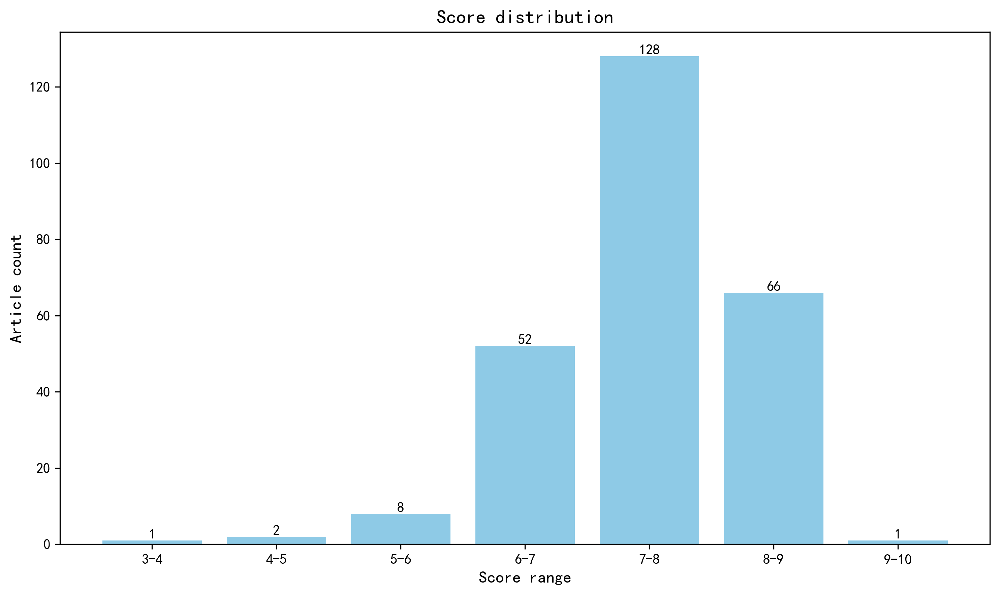

神经科学快讯·第024期 告别测序依赖：单分子分辨率全基因组空间转录组成像重塑脑图谱范式 (2026-08-23)
📊 本周概览
历史摘要修订（2026-10-18）：第 024 期保留历史期号、日期与封面。本期 544 条记录中补回 236 条正式摘要，仅对这些条目使用 DeepSeek 重新评分和分级推荐，其余评估保持原值。修订后拟发布 235 篇，其中 5 篇仍缺充分摘要，已保留资料不足提示。来源、旧评分和推荐变更见 getfiles/abstract_history_2026-10-18.json。
- 头条推荐: 1 篇
- 深度解读: 123 篇
- 简要提及: 111 篇
- 跨界启发: 0 篇
- 已过滤: 309 篇
🌏 环球视野

地区与机构按本期原始发表记录、ROR 及城市地址规则分别统计；跨地区合作可重复计入，不作为完整机构排名。评分分布不含“域外局限”文章。
🌍 国家/地区分布 TOP 10
| 排名 | 国家 | 文章数量 |
|---|---|---|
| 1 | United States | 102 |
| 2 | China | 42 |
| 3 | United Kingdom | 21 |
| 4 | Germany | 21 |
| 5 | Canada | 20 |
| 6 | France | 10 |
| 7 | Switzerland | 10 |
| 8 | South Korea | 8 |
| 9 | Israel | 8 |
| 10 | Japan | 7 |
地区计次合计: 325 次；取得地区信息 204/258 篇
🏢 研究机构 TOP 10
| 排名 | 机构 | 文章数量 |
|---|---|---|
| 1 | Stanford University | 9 |
| 2 | Chinese Academy of Sciences | 9 |
| 3 | Harvard University | 8 |
| 4 | Centre National de la Recherche Scientifique | 6 |
| 5 | Inserm | 5 |
| 6 | University of Cambridge | 5 |
| 7 | University of Zurich | 5 |
| 8 | Fudan University | 5 |
| 9 | University of Chinese Academy of Sciences | 5 |
| 10 | Peking University | 5 |
📊 评分分布
| 评分区间 | 文章数量 |
|---|---|
| 3-4 | 1 |
| 4-5 | 2 |
| 5-6 | 8 |
| 6-7 | 52 |
| 7-8 | 128 |
| 8-9 | 66 |
| 9-10 | 1 |
总计: 258 篇评分文章
📈 各领域文章分布
| 领域 | 深度解读 | 简要提及 | 总计 |
|---|---|---|---|
| 未知领域 | 0 | 70 | 70 |
| 系统与环路神经科学 | 33 | 3 | 36 |
| 认知神经科学 | 23 | 4 | 27 |
| 感觉与运动神经科学 | 16 | 7 | 23 |
| 计算与理论神经科学 | 12 | 8 | 20 |
| 临床与转化神经科学 | 11 | 8 | 19 |
| 分子与细胞神经科学 | 13 | 4 | 17 |
| 方法学 | 8 | 2 | 10 |
| 发育神经科学 | 6 | 2 | 8 |
| 社会与情感神经科学 | 1 | 3 | 4 |
合计: 深度解读 123 篇，简要提及 111 篇，共 234 篇
🥇 头条推荐（9.0+分）
中文标题: 无测序的全基因组空间转录组学，单分子分辨率
输入资料不足：原始摘要未取得，当前评估仅供初筛，推送前需核对原文。
作者: Yubao Cheng, Shengyuan Dang, Yuan Zhang et al.
关键词: 空间转录组, 单分子, 全基因组, 无测序, 原位成像
亮点: 免测序、全基因组、单分子分辨率的空间转录组技术，为神经科学提供前所未有的基因表达空间图谱解析能力
核心优势: 突破测序依赖，实现全基因组空间表达的直接成像，分辨率达到单分子水平，对理解细胞类型多样性和组织结构具有革命性意义。
研究局限: 摘要未提供具体技术实现细节和验证数据，实际稳健性、通量和可及性可能受限，且需要高端成像系统支持。
目标读者: 空间组学研究者、神经科学家、发育生物学与肿瘤微环境研究团队
推荐理由: 该技术无需测序即可在全基因组范围内实现单分子分辨率的空间转录组分析，彻底革新了空间组学工具库。对神经科学而言，这意味着可在脑组织原位直接观测海量基因表达的精细空间分布，为解析复杂脑区和疾病模型中的转录异质性提供了前所未有的分辨率和可及性。其高灵敏度和免测序特性将推动空间转录组学在普通实验室的普及，加速构建单细胞水平的空间脑图谱。
📚 精选文献（按领域分类）
临床与转化神经科学
中文标题: 超越临床表型重新思考多发性硬化症治疗
作者: Maria Pia Sormani, Heinz Wiendl, Xavier Montalban et al.
单位: Department of Neurology and Neurophysiology, University Medical Center, Freiburg 79106, Germany.; IRCCS Azienda Ospedaliera Metropolitana, Genoa, Italy.; Department of Health Sciences (DISSAL), University of Genoa, Italy. 等
研究地区: Italy, Germany, Spain, Canada
关键词: 多发性硬化, 生物连续谱, 疾病进展, 神经免疫, 临床试验, 治疗分层
亮点: 将多发性硬化重新概念化为生物学连续谱，为跨越传统临床表型的治疗策略提供统一框架
核心优势: 由领域权威专家综合最新试验证据，提出超越临床表型分类的统一生物学框架，对试验设计和治疗决策具有直接启示
研究局限: 作为观点/评论类文章，缺乏系统综述方法与定量证据整合，核心主张依赖选择性引用且未充分讨论连续谱模型的反例与转化障碍
目标读者: 多发性硬化临床研究者、神经免疫学家、临床试验设计者及神经科学转化研究者
推荐理由: Sormani等提出多发性硬化应被视为生物连续谱而非离散临床亚型，这一观点对临床神经科学具有范式意义。文章整合近期试验证据表明，靶向共享生物学机制的治疗可跨疾病谱延缓残疾进展，挑战了传统复发型与进展型的二分框架。对神经科学读者而言，该文将临床表型与底层免疫-神经退行机制解耦，提示治疗分层应基于生物学标志而非症状标签，并为理解疾病异质性与进展机制提供了转化研究的新入口。
中文标题: 皮层厚度变化先于高水平淀粉样蛋白至少7年
作者: James M. Roe, William J. Jagust, Yunpeng Wang
关键词: 阿尔茨海默病, 皮层厚度, 淀粉样蛋白, MRI, PET, 纵向队列
亮点: 皮层厚度变化早于淀粉样蛋白阳性7年，重新定义AD早期影像学标志物
核心优势: 多队列纵向研究首次证明皮层厚度改变可先于Aβ-PET阳性，支持AD结构变化早于淀粉样蛋白假说
研究局限: 样本具体规模未在摘要中披露，且Aβ独立效应仍需进一步验证；皮层厚度变化与Aβ因果方向未确定
目标读者: 神经退行性疾病研究者、神经影像学家、计算神经科学家、临床神经病学家
推荐理由: 这项研究结合纵向MRI与Aβ-PET数据，发现认知健康个体在淀粉样蛋白升高前至少7年即出现皮层厚度增厚和萎缩减缓的早期影像学特征。该发现挑战了对AD病理级联的传统时间顺序理解，为临床前阶段的早期识别和干预窗口提供了关键证据，也为影像生物标志物的纵向建模树立了新范式。
中文标题: 中和I型干扰素的自身抗体是三分之一基孔肯雅病毒脑炎或脊髓炎病例的病因
作者: Vu L Tran, Adrian Gervais, Marie-Mechtilde Champeaux et al.
单位: Laboratory of Human Genetics of Infectious Diseases, Necker Branch, INSERM U1163, Necker Hospital for Sick Children, Paris 75015, France.; Imagine Institute, Paris Cité University, Paris 75015, France.; St. Giles Laboratory of Human Genetics of Infectious Diseases, The Rockefeller University, New York, NY 10065. 等
研究地区: United States, France, Brazil, Martinique
关键词: 基孔肯雅病毒, 自身抗体, I型干扰素, 脑炎, 脊髓炎, 免疫缺陷
亮点: 中和I型干扰素的自身抗体使基孔肯雅病毒中枢神经系统感染风险骤增约850倍，提示宿主免疫遗传缺陷决定病毒神经侵袭。
核心优势: 在三个独立队列中，将AAN-I-IFN与CHIKV脑炎/脊髓炎高度特异关联，并以健康人群患病率推算风险倍数，因果链条清晰。
研究局限: 样本量小（20例CNS感染、7例携带抗体），为观察性关联且抗体检测时点与感染先后关系部分依赖推断，缺少机制性动物验证。
目标读者: 神经感染与神经免疫学研究者、病毒学与宿主遗传学学者、临床传染病与重症医学医生
推荐理由: 该研究在三个基孔肯雅病毒队列中发现，35%的中枢神经系统感染患者存在中和I型干扰素的自身抗体，而无CNS感染患者均未检出。这一发现揭示了抗I型干扰素自身抗体是CHIKV脑炎/脊髓炎的重要风险因素，将病毒性脑炎的发病机制与自身免疫性干扰素病联系起来，对临床筛查、风险分层及免疫治疗策略具有转化意义。
中文标题: 基质应力松弛驱动胶质母细胞瘤在粘弹性生物材料中的细胞反应
作者: Sadegh Ghorbani, Michelle S Huang, Daiyao Zhang et al.
单位: Department of Chemical Engineering, Stanford University, Stanford, CA 94305, USA.; Department of Materials Science and Engineering, Stanford University, Stanford, CA 94305, USA.; Department of Health Technology, Technical University of Denmark, 2800 Kgs. Lyngby, Denmark. 等
研究地区: United States, Denmark
关键词: 胶质母细胞瘤, 水凝胶, 应力松弛, 细胞外基质, 透明质酸, 生物材料
亮点: 工程化粘弹性水凝胶揭示基质应力松弛驱动胶质母细胞瘤细胞状态转变的关键作用
核心优势: 利用动态共价化学实现配体与粘弹性的独立调控，首次系统揭示应力松弛对GBM细胞聚集、侵袭标志物和代谢表型的多层级影响。
研究局限: 研究主要基于体外水凝胶模型，缺乏体内验证及分子机制深层次探究。
目标读者: 肿瘤微环境、生物材料、力学生物学及胶质母细胞瘤研究者
推荐理由: 该研究通过设计可独立调控配体呈递和基质应力松弛的透明质酸-弹性蛋白样蛋白（HELP）水凝胶，系统揭示了细胞外基质粘弹性对胶质母细胞瘤（GBM）细胞行为的驱动作用。研究采用动态共价化学构建了刚度匹配但应力松弛不同的基质，精准分解了生化与力学信号的贡献，为理解GBM微环境中的力学转导机制提供了新工具，也为开发更接近体内病理状态的肿瘤模型和靶向力学信号的治疗策略奠定了基础。
中文标题: 慢性心理社会压力：大鼠和人类睡眠呼吸暂停发作的主要驱动因素
作者: Marianne Gagnon, Stéphanie Fournier, Émilie Gobeil et al.
单位: Groupe de Recherche en Santé Respiratoire, Université Laval, Québec, QC, Canada.; Research Center of the Québec Heart and Lung Institute, Québec, QC G1V 4G5, Canada.; Faculty of Pharmacy, Université Laval, Québec, QC G1V 0A6, Canada. 等
研究地区: Canada
关键词: 慢性应激, 睡眠呼吸暂停, 孟德尔随机化, 大鼠模型, 下丘脑, 自主神经
亮点: 慢性心理社会应激被确立为睡眠呼吸暂停的因果驱动因素，而非仅仅是后果，提示预防与治疗策略的范式转变。
核心优势: 整合大鼠社交隔离模型与人类孟德尔随机化分析，跨物种将慢性应激与睡眠呼吸暂停发生直接联系，并发现显著的性别依赖效应及独立于肥胖的遗传学证据。
研究局限: 大鼠社交隔离模型对复杂人类心理社会应激的生态效度有限；人类孟德尔随机化依赖欧洲队列及工具变量假设，因果推断需进一步实验验证；性别差异机制尚未充分阐明。
目标读者: 睡眠与呼吸神经生物学、应激与神经内分泌、行为遗传学及转化医学研究者。
推荐理由: 该研究结合大鼠模型与人类孟德尔随机化，首次提供因果证据表明慢性心理社会应激是睡眠呼吸暂停（SA）发病的主要驱动因素，而非仅仅是其后果。通过多导睡眠监测、应激通路操纵和遗传因果推断，揭示了应激相关神经环路在SA发生中的作用，为SA的早期干预和靶向治疗提供了新方向。研究融合了临床转化与系统神经科学，对理解应激-睡眠交互的神经机制具有重要价值。
Genetic screening identifies glial adenosine as a therapeutic target in alpha-synucleinopathy
深度解读 7.7/10中文标题: 遗传筛选鉴定胶质腺苷作为α-突触核蛋白病的治疗靶点
作者: Sodders, M. J., Avila-Pacheco, J., Okorie, E. C. et al.
单位: Department of Neurology, University of Pittsburgh
研究地区: United States
关键词: 果蝇, 胶质细胞, α-突触核蛋白, 帕金森病, 腺苷代谢, RNAi筛选
亮点: 胶质细胞腺苷代谢成为α-突触核蛋白病治疗新靶点的首个体内筛选证据
核心优势: 通过系统性体内胶质激酶组筛选，发现腺苷代谢通路为治疗靶点，并揭示通过神经元AdoR介导的保护机制。
研究局限: 仅在果蝇模型中验证，缺乏哺乳动物体内数据，且筛选限于激酶组，可能遗漏非激酶靶点。
目标读者: 神经退行性疾病研究者、胶质细胞生物学和神经药理学领域学者
推荐理由: 本研究通过果蝇模型进行胶质细胞激酶组RNAi筛选，发现腺苷代谢通路中的多个基因（Ak1、Ak6、Adk1、Adk2、awd）是α-突触核蛋白病（如帕金森病、路易体痴呆）的潜在治疗靶点。该研究不仅提供了胶质细胞参与神经退行性病变的新机制，还展示了从基因筛选到靶点验证的完整转化路径，为开发神经保护疗法提供了重要候选药物靶点。
中文标题: 阿尔茨海默病连续谱上疾病位置的纵向贝叶斯学习
作者: Yingying Zhang, Kun Zhao, Guodong Liu et al.
资深研究者: Yingying Zhang (h指数=89)
关键词: 阿尔茨海默病, 纵向建模, 贝叶斯学习, 弥散张量成像, 疾病进展, 潜在变量
亮点: 将疾病进展建模为连续贝叶斯潜变量，提供个体化AD严重程度的定量指标及不确定性评估。
核心优势: 首次将纵向DTI与贝叶斯潜变量建模相结合，实现了AD连续轨迹的个体化定位和置信度量化，超越传统离散标签。
研究局限: 仅在ADNI单一队列验证，缺乏外部多中心复现；且未充分展示与现有连续疾病模型（如DPM）的详细对比和计算效率。
目标读者: 计算神经科学、神经影像学、AD临床研究者和机器学习研究者。
推荐理由: 该研究提出一种纵向贝叶斯学习框架，将阿尔茨海默病的疾病严重程度建模为连续潜在变量，突破传统离散诊断与横断面预测的局限。通过整合纵向弥散张量成像数据和弱临床标签，该方法能够更精细地刻画疾病连续进展轨迹，为早期诊断和动态监测提供新工具。对神经影像分析与临床转化研究具有重要方法学价值。
中文标题: 在A53T α-突触核蛋白小鼠中神经元过表达Kcnn1抑制磷酸化丝氨酸129 α-突触核蛋白形成并使生存时间加倍
作者: Maria Nagy, Wayne A Fenton, Arthur L Horwich
单位: Department of Genetics, Yale School of Medicine, New Haven, CT 06510.
研究地区: United States
关键词: α-突触核蛋白, 帕金森病, Kcnn1, 小鼠模型, 生存期, 磷酸化
亮点: 钾通道亚基Kcnn1的过表达将A53T α-突触核蛋白小鼠的生存期延长一倍，并在多个脑区及脊髓中消除致病性pS129 α-突触核蛋白的沉积。
核心优势: 该研究结合了转基因与AAV9介导的局部过表达两种方式，并通过生存期、行为表型及pS129 α-突触核蛋白病理的多层次证据相互印证，为突触核蛋白病的疾病修饰提供了清晰且可重复的概念验证。
研究局限: 神经保护机制仍属推测，涉及ER应激、自噬及潜在通道形成；AAV实验局限于单侧上丘，缺乏行为学及生存获益的因果验证，且未确定Kcnn1的效应是否依赖于通道活性。
目标读者: 从事帕金森病与突触核蛋白病模型研究、蛋白质稳态与ER应激、以及神经保护策略开发的神经科学家与转化研究者
推荐理由: 该研究在A53T α-突触核蛋白小鼠模型中证明，神经元过表达钙激活钾通道亚基Kcnn1可将中位生存期从8.5个月延长至18个月，并显著减少磷酸化丝氨酸129 α-突触核蛋白的形成。这一发现首次将钾通道活性与α-突触核蛋白病理修饰联系起来，为突触核蛋白病的疾病修饰治疗提供了新的靶点与机制线索，对转化神经科学具有重要参考价值。
中文标题: TLR4信号驱动新生儿脑膜炎小鼠模型中的组织炎症、Claudin-5内化及血管屏障破坏
作者: Philip V Seegren, Amir Rattner, Philip M Smallwood et al.
单位: Howard Hughes Medical Institute, Johns Hopkins University School of Medicine, Baltimore, United States.; Department of Molecular Biology and Genetics, Johns Hopkins University School of Medicine, Baltimore, United States.; Department of Neuroscience, Johns Hopkins University School of Medicine, Baltimore, United States. 等
研究地区: United States
关键词: 新生儿脑膜炎, TLR4, Claudin-5, 血管屏障, 单核RNA测序, 内皮细胞
亮点: 在内皮细胞而非髓系细胞中，TLR4通过NF-κB驱动Claudin-5选择性内化，进而破坏新生小鼠脑膜血管屏障——这一定位为新生儿革兰阴性菌脑膜炎的血管渗漏机制提供了新的细胞来源。
核心优势: 多模态证据链较完整：条件性基因敲除、脑膜单核RNA测序与bEnd.3内皮细胞体外功能实验相互印证，将TLR4信号、Claudin-5内化与血管通透性升高直接串联起来。
研究局限: 核心机制主要依赖bEnd.3细胞系和单一E. coli模型，体内Claudin-5内化的直接成像证据有限，且单核RNA测序未能提供蛋白水平的空间验证；对临床转化及TLR4非依赖通路的讨论不足。
目标读者: 神经免疫学、血脑屏障与脑血管生物学、感染性疾病及内皮细胞信号转导研究者
推荐理由: 该研究利用条件性基因敲除、柔脑膜单核RNA测序和内皮细胞培养，系统解析了TLR4信号在新生儿大肠杆菌脑膜炎中的作用。发现非髓系细胞TLR4驱动全柔脑膜炎症反应，并导致Claudin-5内化与血管屏障破坏，为理解感染诱导的血脑屏障功能障碍提供了新机制。研究结合多组学与功能验证，对新生儿脑膜炎的转化研究具有重要价值。
中文标题: 活神经元细胞整合的生物力学全身替代模型的头部冲击特性与细胞响应
作者: Raisa Akhtaruzzaman, Mohammad Ibrahim Hossain, Rahid Zaman et al.
关键词: 生物力学模型, 细胞培养, 头部冲击, 创伤性脑损伤, 加速度测量, 神经细胞系
亮点: 将活神经元细胞整合进全身生物力学模型，实现撞击动力学与细胞损伤响应的多尺度关联
核心优势: 创新性地在同一实验中耦合机械冲击测量与活细胞生物反应，并辅以OpenSim模拟验证，为脑损伤机制提供跨尺度视角。
研究局限: SH-SY5Y细胞在Petri dish中的培养环境与真实脑组织差异显著，且样本量较小、统计分析和模型验证细节不足，预印本未经同行评议。
目标读者: 脑损伤生物力学、细胞力学、计算建模和神经创伤研究者
推荐理由: 该研究创新性地将活神经元细胞整合进生物力学全身替代模型，通过不同跌落角度同时记录头部冲击动力学与细胞损伤响应，搭建了从宏观力学刺激到微观细胞信号的联系桥梁。该平台为创伤性脑损伤的机制研究、防护装备评估及损伤生物标志物开发提供了可转化的体外实验载体，兼具生物力学与细胞生物学研究价值。
中文标题: 幼年期AAV介导的MEF2C基因替代改善Mef2c单倍剂量不足小鼠的特定表型
作者: Jiao, Z., Yu, C., Li, T. et al.
单位: Songjiang Research Institute, Shanghai Jiao Tong University School of Medicine
研究地区: China
关键词: AAV基因治疗, 小鼠模型, MEF2C, 神经发育障碍, 转录组分析, 行为学
亮点: 青少年期AAV介导的MEF2C基因替代能够部分恢复社交新颖性和睡眠表型，为MEF2C单倍剂量不足综合征提供概念验证性治疗策略。
核心优势: 采用系统性的多模态表型评估（社会行为、睡眠/EEG、全脑细胞计数），并区分脑/肌肉异构体差异，揭示青少年期治疗窗仍有可干预性。
研究局限: 治疗效果局限于部分表型，细胞层面的拯救证据仅见于次级运动皮层，且缺乏长期随访和功能验证，转化潜力有待加强。
目标读者: 神经发育障碍、基因治疗、行为神经科学及睡眠研究领域的科研人员
推荐理由: 该研究针对MEF2C单倍剂量不足综合征这一尚无有效治疗的神经发育障碍，在青少年期小鼠中通过AAV递送功能性MEF2C亚型，成功改善了多种疾病相关表型。研究不仅厘清了脑富集与肌肉富集亚型的差异，还提供了基于病毒载体的基因替代治疗在神经发育疾病中的可行性证据。对于关注神经发育障碍机制与转化策略的研究者，这项工作具有重要的概念验证意义和临床前价值。
中文标题: 中脑边缘-海马回路的功能完整性与早期生活压力个体的快感缺失相关
作者: Kathleen J O'Brien, Blake L Elliott, Ian O'Shea et al.
单位: Department of Psychology, University of Oregon, Eugene, Oregon 97403.; Department of Psychology and Neuroscience, Temple University, Philadelphia, Pennsylvania 19122.; School of Medicine, Pennsylvania State University, Hershey, Pennsylvania 17033. 等
研究地区: United States
摘要: 童年创伤与海马-中脑边缘环路功能完整性交互预测快感缺失，提示海马是动机缺陷的关键上游靶点。
优势: 在同一人类样本中整合静息态连接、任务态海马新颖性反应及海马→VTA调制三种指标，并用LASSO确认交互项的独立预测力，将动物模型的海马调控中脑多巴胺假说推进到人类转化层面。 局限: 样本量有限（n=92）且为横断面相关设计，无法确立因果方向；童年创伤为回溯性自评，快感缺失亚型与环路指标的效应量及多重比较校正细节需谨慎解读。 受众: 研究奖赏与动机障碍的临床神经科学家、神经影像研究者、精神病理学与早期逆境方向的转化神经科学家
Early sodium channel blocker initiation is associated with better outcomes in KCNQ2 disorders.
简要提及 6.9/10中文标题: 早期启动钠通道阻滞剂与KCNQ2疾病更好结局相关
作者: Charissa Millevert, Megan Hairabedian, Samuel Dahan et al.
单位: Translational Neurosciences, Faculty of Medicine and Health Science, University of Antwerp, 2610, Antwerp, Belgium.; University Hospital of Antwerp, Department of Neurology, 2650, Antwerp, Belgium.; Translational Epilepsy Genomics Group, VIB Center for Molecular Neurology, University of Antwerp, 2610, Antwerp, Belgium. 等
研究地区: Belgium, France, Germany, Romania, Italy, Denmark, Poland, Türkiye, Spain, United States, Australia
摘要: 在282例KCNQ2变异国际队列中，早期（≤1个月）启用钠通道阻滞剂与更早的癫痫终止及更优的发育结局相关，支持将其作为LOF-KCNQ2-DEE和SeL(F)NE的一线治疗。
优势: 大型多中心国际队列（n=282），按变异功能效应（LOF-DEE/LOF-SeL(F)NE/GOF）分层，并采用时间-事件分析及对癫痫控制与ASM负荷校正后的发育结局分析，临床转化指向明确。 局限: 回顾性设计存在适应证/时序偏倚与残余混杂，发育里程碑采集非标准化，缺乏前瞻对照验证，且“早期即获益”的因果推断受限；表型异质性提示仍有未测量的遗传或生物学修饰因素。 受众: 儿科神经科/癫痫专科医师、神经遗传学与精准医学研究者、临床药理与发育神经生物学研究者
中文标题: 基于皮层表面积变化构建的脑老化图谱
作者: Xingyan Chen, Weichen Yan, Shichao Su et al.
单位: Central Hospital of Dalian University of Technology, Dalian Municipal Central Hospital, Dalian, Liaoning 116033, China.; School of Control Science and Engineering, Dalian University of Technology, Dalian, Liaoning 116024, China.; School of Biomedical Engineering, Faculty of Medicine, Dalian University of Technology, Dalian, Liaoning 116024, China. 等
研究地区: China
摘要: 基于皮层表面积变化构建的健康脑老化图谱揭示三种萎缩模式及其半球不对称与认知关联
优势: 将两阶段空间正则化NMF用于构建脑老化图谱，在1,066例纵向扫描上识别出具有认知关联的三种萎缩模式，方法思路清晰且图谱具有潜在实用价值。 局限: 仅基于ADNI单队列的皮层表面积单一形态学指标，缺乏独立外部验证与多模态（厚度、白质、功能）佐证；图谱的生物学可解释性与跨数据集泛化性尚不明确，且"图谱"更接近数据驱动分区而非可复用的标准参考图谱。 受众: 神经影像方法学、脑老化与阿尔茨海默病早期标志物、计算神经解剖研究者
Jean Bancaud (1921-93): clinician, thinker and pioneer of epileptology at Sainte-Anne Hospital.
简要提及 6.1/10中文标题: 让·班科（1921-93）：圣安娜医院的临床医生、思想家和癫痫学先驱
作者: Marc Zanello, Romain Carron, Elisabeth Landre et al.
单位: Université de Paris, 75005 Paris, France.; IMA-BRAIN, Institute of Psychiatry and Neuroscience of Paris, INSERM 1266, 75014 Paris, France.; Department of Neurosurgery, GHU PARIS Sainte-Anne, 75014 Paris, France. 等
研究地区: France, United States
摘要: 还原Jean Bancaud与Talairach共同开创SEEG的历史脉络，揭示一种曾遭质疑的方法如何成为难治性癫痫术前评估的基石。
优势: 由深谙SEEG临床与学术脉络的癫痫外科团队执笔，将人物思想、医院史与技术演进紧密结合，史料与专业洞见兼具。 局限: 属历史人物传记/纪念性文章，非原创研究或系统性综述，缺乏可检验的新数据与新框架，证据与批判性受体裁限制。 受众: 癫痫学、临床神经生理与立体定向脑电图研究者，神经科学史与医学人文读者
中文标题: 早发性脑性视觉障碍成人高级视觉功能缺陷的持续性：一项比较研究
作者: Arvind Chandna, Silvia Veitzman, Celine Kim et al.
单位: Alder Hey Children's Hospital, Liverpool, United Kingdom.; Smith-Kettlewell Eye Research Institute, San Francisco, California, United States of America.
研究地区: United Kingdom, United States
摘要: 用59项问卷追踪早年获得性CVI患者至成年，揭示高级视觉功能缺陷持久存在且与晚发脑损伤模式可区分，为CVI全生命周期管理提供依据。
优势: 首次以对照设计系统比较成年早发CVI、晚发脑损伤与儿童CVI队列，提出HVFQI-59Q在成人中的可行性，并挑战晚发损伤等同于局灶性效应的假设。 局限: 依赖主观问卷而非客观视觉功能测试，样本量有限且横断面设计无法追踪个体随时间的变化；成人与儿童队列的比较受年龄和评估方式差异混杂。 受众: 神经眼科、视觉康复、发育神经科学及临床神经心理学研究者
中文标题: 腹侧颈硬膜外电刺激未能增加麻醉人类阿片类药物诱导的呼吸抑制期间的呼吸活动
作者: Ruyi Huang, Yan Zhou, Jordan Peyer et al.
单位: Department of Neurosurgery, David Geffen School of Medicine, University of California, Los Angeles, California, United States.; Interdepartmental Program in Neuroscience, University of California, Los Angeles, California, United States.; Neuroplasticity & Repair Laboratory, David Geffen School of Medicine, University of California, Los Angeles, California, United States. 等
研究地区: United States
摘要: 阴性结果挑战了硬膜外电刺激增强呼吸活动的假说，提示刺激位点与参数选择的重要性
优势: 在麻醉人体上使用临床相关模型（阿片诱导呼吸抑制）直接评估EES的疗效，实验设计严谨 局限: 样本量和统计功效信息不足，单一刺激方案可能难以覆盖EES的潜在效应空间 受众: 神经调控、呼吸神经科学与麻醉学研究者和临床医生
中文标题: 乌干达Buikwe和Mukono地区社区癫痫诊所就诊癫痫患者抗癫痫药物依从性：一项混合方法研究
作者: Ronald Kibirige, Marianna Agaba Nyangire, Mark Kaddumukasa et al.
单位: Department of Medicine, School of Medicine, College of Health Sciences, Makerere University, Kampala, Uganda.; Department of Disease Control and Prevention, School of public Health, College of Health Sciences, Makerere University, Kampala, Uganda.; Department of Epidemiology and Biostatistics, School of Public Health, College of Health Sciences, Makerere University, Kampala, Uganda. 等
研究地区: Uganda, United States
摘要: 乌干达社区癫痫门诊中抗癫痫药物依从性的混合方法研究：约三分之二患者依从，经济收入、候诊时长与给药剂量不足是可用干预的关键杠杆。
优势: 在资源匮乏的撒哈拉以南非洲社区场景中，将标准化MMAS-8定量依从性测量与20例深度访谈的定性体验整合，识别出污名恐惧、经济负担、候诊时间等可操作障碍。 局限: 单中心横断面设计无法确立因果方向，MMAS-8自报量表存在回忆与社会期望偏倚，样本量277例且限于乌干达中部两地区，对神经科学机制或通用理论贡献有限，更接近全球健康/公共卫生服务研究而非顶刊神经科学原创发现。 受众: 全球健康与癫痫服务研究者、资源有限地区神经科/精神科临床医生、卫生系统与实施科学研究者
中文标题: 普萘洛尔通过STAT3/MMP2通路改善创伤性脑损伤后认知功能并促进类淋巴系统恢复
作者: Dongming Gao, Guohui Huang, Lei Li et al.
单位: Department of Neurosurgery, Huadong Hospital, Fudan University, Shanghai, China.; Department of Neurosurgery, Shanghai Tenth People's Hospital, Tongji University, Shanghai, China.
研究地区: China
摘要: β受体阻滞剂普萘洛尔经STAT3/MMP2通路改善TBI后类淋巴功能与认知的机制探索
优势: 以体内CCI大鼠与体外星形胶质细胞双模型，将普萘洛尔、STAT3抑制剂与MMP2抑制剂平行对照，初步串联起Aβ/p-tau清除、AQP4极性定位与类淋巴功能的行为-病理关联。 局限: 机制证据依赖药理学抑制剂与相关性蛋白表达变化，缺少STAT3/MMP2的遗传学操纵（敲低/敲除）与AQP4功能直接干预，通路因果链和类淋巴流量测量方法学透明度不足，单刊PLOS发表且样本/盲法细节未在摘要体现，难以支撑顶刊级机制定论。 受众: 神经创伤与类淋巴系统研究者、血脑屏障/星形胶质细胞生物学及神经药理学转化研究人员
分子与细胞神经科学
中文标题: 颅骨淋巴结构在中枢神经系统免疫监视中的功能作用
作者: Jang Hyun Park, Daviti Abramishvili, Jonathan Kipnis
资深研究者: Jonathan Kipnis (h指数=88)
关键词: 神经免疫, 颅骨骨髓, 硬脑膜, 脑脊液, 免疫监视, 小鼠
亮点: 颅骨骨髓中的淋巴结构是中枢神经系统免疫监视的关键枢纽，通过适应性免疫应答参与抗肿瘤反应。
核心优势: 首次揭示颅骨骨髓中存在具有生发中心样结构的淋巴样组织，明确其通过CD40L、IL-21和IFNγ信号驱动B细胞介导的CNS抗原特异性免疫应答，并证实其在脑肿瘤模型中的抗肿瘤功能，为神经免疫学开辟了全新研究方向。
研究局限: 主要基于小鼠模型，人类颅骨是否具有同等结构和功能尚未证实，且不同神经系统疾病中的泛化性需要更多研究。
目标读者: 神经免疫学、免疫学、神经肿瘤学、系统神经科学及临床神经病学研究者
推荐理由: 这项研究聚焦于颅骨淋巴结构在中枢神经系统免疫监视中的功能角色，揭示了头骨骨髓与硬脑膜之间通道介导的脑脊液和免疫细胞交换如何参与CNS的适应性免疫应答。通过在小鼠模型中的实验验证，研究为理解神经免疫交互提供了新的解剖和细胞机制，对神经炎症和神经退行性疾病的免疫干预策略具有潜在启示。其意义在于重塑了我们对中枢神经系统“免疫豁免”的传统观念，将颅骨骨髓视为CNS免疫监视的关键枢纽。
中文标题: 成年猕猴寿命周期内多模态脑细胞图谱
作者: Xiao Zhang, Guangyao Lai, Xiangyu Guo et al.
单位: State Key Laboratory of Genome and Multi-omics Technologies, BGI Research, Shenzhen 518083, China.; State Key Laboratory for Diagnosis and Treatment of Severe Zoonotic Infectious Diseases, Key Laboratory for Zoonosis Research of the Ministry of Education, Institute of Zoonosis and College of Veterinary Medicine, Jilin University, Changchun 130062, China; 3DC STAR Lab, BGI CELL, Shenzhen 518083, China 等
研究地区: China, Germany, Thailand, Macao, Hong Kong, Saudi Arabia, Spain, Italy, Sweden, United Kingdom, United States
关键词: 单细胞转录组, scATAC-seq, 食蟹猕猴, 八脑区, 脑衰老, 细胞亚型
亮点: 跨越猕猴成年寿命的多区域多模态单细胞图谱，揭示脑干白质老化脆弱性的新热点
核心优势: 整合大规模转录组和染色质可及性数据，涵盖极端老年龄组，系统揭示灵长类脑老化的细胞和调控机制，并连接人类疾病
研究局限: 仅使用雌性个体，缺乏性别差异分析；以描述性为主，未进行功能验证或因果干预
目标读者: 神经科学家、衰老生物学家、单细胞基因组学与计算生物学家
推荐理由: 该研究构建了跨越成年猕猴生命周期、覆盖多个脑区的单细胞转录组与染色质可及性联合图谱，包含近300万个细胞核，并纳入罕见高龄个体。通过整合多模态数据，揭示了突触通讯和轴突髓鞘化在特定细胞亚型中的年龄依赖性变化，并定位了脑桥和延髓中的多细胞调控网络。作为非人灵长类脑衰老的高分辨率参考资源，为转化研究提供了重要基础。
中文标题: κ阿片受体通过多巴胺转运体苏氨酸53位点磷酸化调节可卡因对伏隔核多巴胺的作用
作者: Lopes, E. F., Estave, P. M., Curry, A. M. et al.
单位: Wake Forest University School of Medicine
研究地区: United States
关键词: FSCV, 大鼠, 伏隔核, 多巴胺转运体, κ阿片受体, 磷酸化
亮点: 揭示KOR通过DAT Thr53磷酸化介导可卡因耐受的分子机制，并在多物种中验证因果性
核心优势: 从行为到分子水平跨越多个尺度，利用磷酸化缺陷小鼠明确因果链，并扩展到非人灵长类验证保守性
研究局限: 缺乏在体慢性模型和人类数据，未直接量化DAT Thr53磷酸化水平，机制细节仍有待深挖
目标读者: 成瘾神经科学、多巴胺信号转导、药物滥用药理学家
推荐理由: 该研究通过快速扫描循环伏安法结合大鼠可卡因自我给药模型，发现κ阿片受体（KOR）通过调控多巴胺转运体（DAT）第53位苏氨酸的磷酸化，调节可卡因对伏隔核多巴胺释放的作用，并参与可卡因摄入升级的耐受过程。这一发现从分子水平将阿片受体信号与多巴胺转运体功能直接联系起来，为可卡因成瘾的耐受机制提供了新见解，并提示KOR拮抗剂或DAT磷酸化干预可能成为药物成瘾治疗的潜在靶点。
中文标题: δ阿片受体的结构引导变构调节
作者: Jesse Mobbs, Deborah Nguyen, Owindeep Deo et al.
关键词: δ阿片受体, 变构调节, 结构生物学, GPCR, 镇痛, 药物开发
亮点: 首次揭示δ阿片受体变构调节的结构基础，为更安全的镇痛药设计提供蓝图。
核心优势: 首次解析δOR-激动剂-PAM三元复合物结构，发现新型脂质面向变构位点，并通过多模态验证建立分子机制。
研究局限: 变构位点位于膜脂界面，体内相关性和系统性药效仍需验证；仅报道一个PAM，缺乏体内数据。
目标读者: 结构生物学、药理学、阿片受体药物研发领域的研究者。
推荐理由: 这项研究通过结构指导的变构调节策略，深入揭示了δ-阿片受体的调控机制，为开发更安全的镇痛药物提供了全新思路。相比传统μ受体激动剂，δOR正向变构调节剂能增强内源性阿片信号，同时保留其自然时空激活模式，有望减少耐受性和依赖性。该工作将高分辨率结构信息与药理学功能验证紧密结合，不仅增进了对GPCR变构调控的理解，也为神经精神疾病的药物设计提供了可借鉴的范式，具有重要的转化医学价值。
中文标题: 通过星形胶质细胞-线粒体穿梭实现静息胶质母细胞瘤激活与免疫逃逸的代谢许可
作者: Hongrui Zhu, Li Wang, Qi Wu et al.
单位: Anhui Province Key Laboratory of Hepatopancreatobiliary Surgery, Hefei, Anhui, China.; Department of Pain and Anesthesiology, The First Affiliated Hospital of USTC, State Key Laboratory of Immune Responses and Immunotherapy, Center for Advanced Interdisciplinary Science and Biomedicine of IHM, School of Basic Medical Sciences, Division of Life Sciences and Medicine, University of Science and Technology of China, Hefei, China.; Department of Hepatobiliary Surgery, The First Affiliated Hospital of USTC, Division of Life Sciences and Medicine, University of Science and Technology of China, Hefei, China. 等
研究地区: China
关键词: 胶质母细胞瘤, 星形胶质细胞, 线粒体转移, 免疫逃逸, 代谢重编程, 单碳代谢
亮点: 星形胶质细胞通过线粒体转移（携带SHMT2）代谢性“授权”静息胶质瘤细胞再激活，并经m⁶A表观转录调控实现免疫逃逸，揭示可干预的肿瘤微环境脆弱点。
核心优势: 将跨细胞线粒体转移、一碳代谢、SAM/m⁶A表观转录与RNA聚合酶II暂停释放整合为一条清晰的再激活-免疫逃逸因果链，并以遗传与药理学双重干预验证可靶向性。
研究局限: 主要依赖体外共培养与移植瘤模型，体内线粒体转移的直接可视化与定量、人类胶质瘤样本中的通路保守性以及血脑屏障下药物干预的可行性仍待验证。
目标读者: 神经肿瘤学、胶质细胞生物学、肿瘤代谢与表观转录组学研究者，以及系统与计算生物学家
推荐理由: 该研究揭示了反应性星形胶质细胞通过线粒体转移“唤醒”静息胶质母细胞瘤细胞并赋予其免疫逃逸能力的新机制。星形胶质细胞来源的线粒体富含SHMT2，支持肿瘤细胞单碳代谢，从而驱动其再激活和恶性进展。这一发现将神经胶质细胞-肿瘤细胞间的代谢互作与免疫抑制联系起来，为靶向肿瘤静息-激活转换和微环境代谢 licensing 提供了全新治疗思路。
中文标题: 内源性逆转录病毒去抑制激活小胶质细胞驱动炎症与细胞衰老
作者: Xin Yan, Christina Georgopoulou, Paolo Salomoni
关键词: 小胶质细胞, 衰老, 逆转录病毒, 染色质, 神经炎症, 表观遗传
亮点: 揭示DAXX下调通过内源性逆转录病毒去抑制驱动小胶质细胞衰老的新机制，为脑衰老和神经炎症提供表观遗传干预靶点
核心优势: 将异染色质维持、内源性逆转录病毒激活与小胶质细胞活化和细胞衰老联系起来，证据链完整，包含行为学和多组学验证
研究局限: 主要基于小鼠模型，人类小胶质细胞中DAXX/逆转录转座子机制的直接证据和长期行为后果仍需进一步探索
目标读者: 神经免疫学、衰老生物学、表观遗传学、小胶质细胞生物学和神经退行性疾病研究者
推荐理由: 该研究揭示了DAXX随年龄下调导致内源性逆转录病毒去抑制，进而驱动小胶质细胞活化、炎症和细胞衰老的崭新机制，为理解脑老化相关神经炎症提供了关键分子环节。通过年轻成年小鼠的条件性敲除和人类组织验证，作者将染色质解压缩与固有免疫反应直接联系，并展示了行为学层面的影响。这项工作不仅深化了对小胶质细胞稳态调控的认识，也为靶向表观遗传和逆转录元件的抗衰老干预提供了理论依据，值得神经科学和衰老研究领域密切关注。
An upstream open reading frame represses translation of the neuronal potassium channel KCNQ2.
深度解读 7.9/10中文标题: 一个上游开放阅读框抑制神经元钾通道KCNQ2的翻译
作者: Dalton J Huey, Eduardo Guadarrama, Jean-Marc DeKeyser et al.
单位: Department of Pharmacology, Feinberg School of Medicine, Northwestern University, Chicago, IL 60611.
研究地区: United States
关键词: uORF, KCNQ2, 翻译调控, 癫痫, 钾通道, 5'-UTR
亮点: 在KCNQ2的5'-UTR中发现一个强抑制性uORF，并借助腺嘌呤碱基编辑释放该抑制，从而为单倍剂量不足型KCNQ2癫痫脑病提供翻译层面的治疗新思路。
核心优势: 从序列识别、uORF起始密码子突变去抑制、核糖体结合分析到碱基编辑增强蛋白翻译，形成较完整的因果链条，并直接指向可转化的治疗策略。
研究局限: 核心证据主要来自细胞系（含神经元样细胞）报告体系，缺乏原代神经元、动物模型及电生理/癫痫表型的在体验证，uORF调控的生理幅度与疾病相关性仍需体内证据。
目标读者: 神经遗传学、癫痫与离子通道病研究者，以及从事翻译调控和碱基编辑治疗开发的分子与系统生物学家
推荐理由: 该研究首次揭示KCNQ2 mRNA的5'-UTR中存在一个上游开放阅读框（uORF），它抑制下游主要开放阅读框的翻译，从而调控神经元钾通道KCNQ2的蛋白表达水平。KCNQ2功能缺失是新生儿癫痫和神经发育障碍的重要病因，但单倍剂量不足的翻译调控机制此前未知。该发现不仅将uORF介导的翻译控制与神经元兴奋性及癫痫易感性直接联系起来，还为KCNQ2相关脑病提供了新的潜在治疗靶点——通过调节uORF活性来提升KCNQ2蛋白水平。这项工作对理解离子通道的翻译调控和癫痫的分子病理机制具有重要推动意义。
YTHDC1 functions as a molecular chaperone to suppress ALS-linked hnRNPA1 mutants from aggregation
深度解读 7.8/10中文标题: YTHDC1作为分子伴侣抑制ALS相关hnRNPA1突变体聚集
作者: Kang Ren, Mingjie Cheng, Qiudan Luo et al.
单位: Institute of Modern Biology, Department of Hematology, Affiliated Nanjing Drum Tower Hospital, Nanjing University, Nanjing, Jiangsu, China.; Institute of Modern Biology, Department of Neurosurgery, Affiliated Nanjing Drum Tower Hospital, Nanjing University, Nanjing, Jiangsu, China.; MOE Key Laboratory of Model Animals for Disease Study, Jiangsu Key Laboratory of Molecular Medicine, Model Animal Research Center, Medical School of Nanjing University, Nanjing, Jiangsu, China. 等
研究地区: China
关键词: YTHDC1, 分子伴侣, m6A, ALS, 蛋白聚集, hnRNPA1
亮点: m6A结合蛋白YTHDC1被重新定义为不依赖ATP的分子伴侣，通过酸性polyD/E片段抑制ALS相关hnRNPA1突变体聚集并保护神经元。
核心优势: 概念新颖：将RNA修饰识别蛋白YTHDC1的功能从表观转录调控拓展到不依赖ATP的蛋白稳态维持，并通过polyD/E缺失与芳香笼突变体实验清楚解耦了伴侣活性与m6A识别。
研究局限: 机制证据主要来自体外重构与初级神经元表型，缺乏ALS动物模型或患者来源样本的在体内验证；YTHDC1伴侣活性与内源m6A结合功能在生理条件下的相对贡献尚不明确。
目标读者: 神经退行性疾病、蛋白质稳态与分子伴侣、RNA修饰生物学及ALS机制研究者
推荐理由: 该研究首次将m6A阅读蛋白YTHDC1定义为一种不依赖ATP的分子伴侣，其富含酸性氨基酸的polyD/E片段是发挥活性的关键。YTHDC1不仅能防止蛋白质错误折叠和聚集，还能解聚已形成的聚集体，并抑制ALS相关hnRNPA1突变体的聚集。这一发现拓展了RNA修饰蛋白在蛋白质稳态调控中的功能边界，为ALS等神经退行性疾病提供了新的潜在干预靶点。
中文标题: 肌张力障碍相关的TorsinA-ΔE突变通过其N端疏水片段诱导与XPO1的功能获得性相互作用
作者: Cui, H., Duan, Y., Islam, M. K. et al.
单位: LSU Health Shreveport
研究地区: United States
关键词: 肌张力障碍, 核质转运, TorsinA, XPO1, 患者神经元, 蛋白质组学
亮点: 揭示TorsinA-ΔE突变与XPO1异常互作导致核质运输障碍的致病新机制
核心优势: 融合患者神经元、蛋白质组学与AlphaFold结构预测，多维度验证了HS介导的ΔE-XPO1异常互作，并证明其可作为治疗靶点。
研究局限: 预印本未经同行评审，且主要依赖体外细胞模型，动物体内和临床验证不足。
目标读者: 神经退行性疾病、核质运输、AAA+ ATP酶功能与神经发育障碍研究者
推荐理由: 本研究揭示DYT1肌张力障碍相关TorsinA-ΔE突变通过其N端疏水片段与XPO1形成功能获得性互作，从而破坏核质运输。利用患者来源运动神经元和蛋白质组学，作者精确定位了突变特异性相互作用，为理解该神经发育疾病的细胞病理机制提供了新靶点，也提示核质转运失调可能是肌张力障碍的共同通路。
中文标题: 神经退行性变作为神经免疫对话异常的失调
作者: F Chris Bennett, Soyon Hong, Ning Jiang et al.
单位: UK Dementia Research Institute, Institute of Neurology, University College London, London, UK. Electronic address: soyon.hong@ucl.ac.uk.; Division of Neurology, Department of Pediatrics, Children's Hospital of Philadelphia, Philadelphia, PA, USA. Electronic address: frederick.bennett@pennmedicine.upenn.edu.; Department of Psychiatry, Perelman School of Medicine, University of Pennsylvania, Philadelphia, PA, USA 等
研究地区: United States, United Kingdom
关键词: 神经炎症, 小胶质细胞, 神经退行性变, 免疫对话, 全脑, 多组学
亮点: 将神经退行性病变重新定义为神经免疫对话的失调，提供治疗新视角
核心优势: 提出整合框架，将免疫系统视为大脑健康的传感器和驱动器，强调恢复免疫稳态的治疗潜力
研究局限: 缺少原始实验数据，且观点偏重概念框架，实证支持依赖他人研究
目标读者: 神经科学、免疫学及神经退化疾病研究者
推荐理由: 该研究将神经退行性疾病重新定义为神经-免疫系统对话失调的结果，系统梳理了免疫细胞与炎症信号在神经元稳态、损伤和修复中的双向作用。作者提出免疫系统不仅是神经损伤的被动响应者，更是神经元可塑性与脆弱性的主动调控者，为理解小胶质细胞、细胞因子及外周免疫信号如何影响多种神经退行性疾病提供了整合框架，并指出了神经免疫调节作为治疗干预窗口的新方向。
中文标题: ER滞留基序控制hERG1a/1b通道的异源多聚体化学计量比
作者: Sudharsan Kannan, Liliana R Ernandez, Gail A Robertson
单位: Department of Neuroscience, School of Medicine and Public Health, University of Wisconsin-Madison, Madison, WI 53705.
研究地区: United States
关键词: hERG钾通道, ER滞留基序, 亚基化学计量, 膜蛋白转运, 电生理, 长QT综合征
亮点: 单分子光漂白与功能电生理共同揭示hERG1a/1b通道固定2:2组装，并将ER滞留基序鉴定为异聚体化学计量比的决定因素。
核心优势: 以单分子光漂白步进分析直接测定亚基组成，并在爪蟾卵母细胞中用显性负性孔突变体进行正交功能验证，两条独立证据线同向支持2:2模型。
研究局限: 机制证据主要依赖HeLa细胞异源表达系统，缺乏原代心肌细胞或神经元中的内源验证；2:2结论基于泊松/二项分布拟合与显性负性电流抑制的间接推断。
目标读者: 离子通道生物学家、心脏电生理与长QT综合征研究者、膜蛋白转运与ER质量控制领域学者
推荐理由: 该研究揭示了hERG1b亚基的N端精氨酸基序通过介导内质网滞留/回收，控制hERG1a/1b异源多聚体的化学计量比，从而决定心脏IKr及神经元M电流的幅度。这一机制不仅解释了长QT综合征突变如何通过改变亚基配比致病，也为理解神经元兴奋性调控提供了新视角。研究结合电生理与生化手段，逻辑严谨，对离子通道组装与转运领域有重要启示。
Brain pericytes exhibit spatially organized and dynamically regulated molecular heterogeneity
深度解读 7.3/10中文标题: 脑周细胞表现出空间组织和动态调控的分子异质性
作者: Huang, S.-F., Glandorf, L., Sauvageot, S. et al.
单位: Neuroscience Center Zurich, Uni; Department of Neurosurgery, Clinical Neuroscience Center, University Hospital Zurich, University of Zurich, Zurich, Switzerland
研究地区: Switzerland
关键词: 单细胞转录组, 空间成像, 周细胞, 小鼠, 神经血管单元
亮点: 揭示脑周细胞分子异质性在空间与时间维度上的动态组织，确立昼夜节律作为关键调节轴
核心优势: 整合空间成像与单细胞转录组重分析，系统刻画周细胞分子异质性及其与老龄化、缺血和昼夜节律的关联
研究局限: 依赖数据重分析，缺乏体内功能验证；周细胞亚型的功能意义尚未直接证明
目标读者: 神经血管生物学、单细胞组学、胶质细胞研究者
推荐理由: 这项研究结合空间成像与单细胞转录组数据的重新分析，系统揭示了成年小鼠脑周细胞在解剖区域和血管网络位置上的分子异质性，并发现ACE2、Igf2等标志物的规律性差异。研究将周细胞从'均一'的血管组分转变为具有空间组织与动态调控特征的细胞群体，为理解神经血管单元的局部功能分工和脑区特异性病理过程提供了重要基础。
中文标题: 原位胶质细胞表面蛋白质组学鉴定果蝇中的促长寿因子
作者: Madeline P Marques, Bo Sun, Ye-Jin Park et al.
单位: Huffington Center on Aging, Baylor College of Medicine, Houston, United States.; Department of BioSciences, Rice University, Houston, United States.; Department of Molecular and Human Genetics, Baylor College of Medicine, Houston, United States. 等
研究地区: United States
关键词: 胶质细胞, 细胞表面蛋白质组学, 果蝇, 衰老, 原位邻近标记, 神经退行性变
亮点: 首次将原位细胞表面蛋白质组学应用于完整果蝇脑胶质细胞，并锁定DIP-β为胶质细胞调控脑衰老与寿命的候选表面因子。
核心优势: 技术路线具有开创性：在完整脑组织中对胶质细胞表面蛋白进行原位蛋白质组学刻画，并串联遗传筛选、寿命实验与单核RNA-seq，形成从发现到功能验证的闭环。
研究局限: 核心因果链仍偏薄弱：DIP-β过表达延寿的表型缺乏胶质细胞特异性敲低/挽救与分子机制解析，单核RNA-seq仅提供关联性证据，且研究局限于果蝇模型，向哺乳动物及衰老神经退行性变的可转化性未知。
目标读者: 果蝇遗传学、胶质细胞生物学、衰老与神经退行性变研究以及细胞表面蛋白质组学方法学研究者
推荐理由: 该研究开发了原位胶质细胞表面蛋白质组学技术，首次在完整果蝇大脑中系统鉴定胶质细胞表面蛋白，并揭示促长寿因子。方法学上突破了原位表面蛋白组分析的技术瓶颈，为研究胶质细胞在脑衰老中的细胞间通讯提供了强大工具。发现的候选因子为理解胶质功能障碍与年龄相关神经退行性变提供了新机制，并可能为神经保护策略提供靶点。
中文标题: 星形胶质细胞4R-tau病理驱动小鼠AQP4错位、类淋巴功能障碍及神经递质失调
作者: Menglan Lu, Haiyan Tian, Jiuqi Wang et al.
单位: Department of Neurology, The First Affiliated Hospital of Zhengzhou University, Zhengzhou 450052, Henan, China.; Department of Neurology, The First Affiliated Hospital, Sun Yat-Sen University, Guangzhou 510080, Guangdong, China.; Department of Pharmacy, The First Affiliated Hospital of Zhengzhou University, Zhengzhou 450052, China. 等
研究地区: China
摘要: 星形胶质细胞4R-tau病理通过破坏DAC-AQP4轴引发类淋巴功能障碍与神经递质失衡，串联PSP中星形胶质细胞病与运动认知缺陷。
优势: 构建星形胶质细胞特异性4R-tau转基因小鼠，将tau病理、AQP4极性丢失、类淋巴引流障碍与多巴胺/乙酰胆碱下降及行为表型串联为一条可检验的时序机制链条。 局限: 机制证据以相关性为主，缺乏DAC-AQP4轴或类淋巴功能的直接因果干预（如AQP4敲除/挽救、示踪动力学定量），且单模型、单期刊层级难以支撑对PSP的广泛外推。 受众: tau蛋白病、星形胶质细胞生物学、类淋巴系统与神经退行性疾病机制研究方向的研究者
中文标题: 用于阐明神经炎症中小胶质细胞对视网膜神经节细胞调控的人多能干细胞三培养平台
作者: Jade Harkin, Cátia Gomes, Reham Afify et al.
单位: Stark Neurosciences Research Institute, Indiana University School of Medicine, Indianapolis, IN 46202.; Department of Medical and Molecular Genetics, Indiana University School of Medicine, Indianapolis, IN 46202.; Department of Pharmacology and Toxicology, Indiana University School of Medicine, Indianapolis, IN 46202. 等
研究地区: United States
摘要: 人源干细胞三培养体系逐步拆解小胶质细胞—星形胶质细胞—视网膜神经节细胞之间的神经免疫互作。
优势: 将小胶质细胞、星形胶质细胞与RGC整合到同一人源iPSC衍生体系中，并通过共培养与三培养的阶梯式还原设计，分离出各细胞类型对RGC命运的相对贡献，人源化程度优于常用啮齿类模型。 局限: 仍属体外还原模型，LPS刺激的炎症范式较为单一且非特异性，摘要未展示分子通路层面的因果验证或体内数据，三培养体系的成熟度、可重复性与定量读出标准尚不明确，距PNAS顶刊所要求的多模态机制证据仍有差距。 受众: 视网膜神经生物学、神经免疫学、青光眼与视神经病变研究以及iPSC疾病建模与药物筛选领域的研究者
中文标题: 猕猴前扣带皮层锥体神经元的亚区与层状特化
作者: Yuxin Zhou, Maxine Hsiung, Angela L Capriglione et al.
单位: Center for Systems Neuroscience, Boston University, Boston, Massachusetts 02215.; Department of Anatomy & Neurobiology, Boston University Chobanian & Avedisian School of Medicine, Boston, Massachusetts 02118 zhouybu@bu.edu.; Department of Anatomy & Neurobiology, Boston University Chobanian & Avedisian School of Medicine, Boston, Massachusetts 02118.
研究地区: United States
摘要: 系统绘制猕猴前扣带回三个亚区锥体神经元的层特异性电生理与形态图谱，揭示认知—情绪分区间的细胞异质性。
优势: 在同一物种、同一实验范式下跨ACC三个亚区系统比较L2-3与L5-6锥体神经元的生物物理和形态特性，样本量可观（19只猕猴）且纳入雌雄两性，填补了灵长类ACC亚区细胞水平比较的空白。 局限: 属于描述性、相关性研究，未直接操纵或因果验证这些细胞特性差异如何影响ACC亚区的环路功能与行为；体外切片记录脱离了完整网络背景，且亚区间比较可能受切片质量、动物个体差异和细胞采样偏倚影响。 受众: 系统神经科学、前扣带回与情绪—认知环路研究者、皮层细胞生物学家及计算神经科学建模者
中文标题: 含α/β-水解酶结构域的蛋白6（ABHD6）加速含TARP γ-2的AMPA受体的脱敏与失活
作者: Rixu Cong, Huiran Li, Hong Yang et al.
单位: Peking-Tsinghua Center for Life Sciences, Academy for Advanced Interdisciplinary Studies, Peking University, Beijing, China.; School of Basic Medical Sciences, Beijing Key Laboratory of Neural Regeneration and Repair, Advanced Innovation Center for Human Brain Protection, Capital Medical University, Beijing, China.; School of Basic Medical Sciences, Wenzhou Medical University, Wenzhou, China. 等
研究地区: China
摘要: ABHD6作为AMPA受体辅助亚基，以TARP γ-2依赖的方式加速受体失活与脱敏，为AMPA受体门控调控提供新的分子机制。
优势: 系统地在多种GluA亚基组合、剪接异构体与RNA编辑变体上验证了ABHD6对AMPA受体动力学的调控，并结合敲除神经元电生理数据形成从异源表达系统到native系统的证据链。 局限: 主要依赖异源表达系统与离体电生理，缺乏ABHD6与TARP γ-2直接相互作用的分子/结构证据；生理相关性验证较初步，且部分亚型例外（如GluA2(Q)i-G脱敏）机制未明。 受众: 突触生理学、AMPA受体生物物理学与谷氨酸能传递调控研究者
发育神经科学
中文标题: 人脑类器官记录多年时间流逝
作者: Irene Faravelli, Noelia Antón-Bolaños, Paola Arlotta
关键词: 类脑器官, 人类, 长期培养, 兴奋性神经元, 发育成熟, 转录组学
亮点: 首次实现类器官长达五年的体外成熟，揭示其以细胞类型特异的方式记录时间并在祖细胞中保留时间记忆
核心优势: 长期培养系统与多组学、嵌合体实验相结合，突出展示了人类脑类器官在多年尺度上的成熟和衰老过程，为研究人类大脑发育后期和老化提供了开创性模型
研究局限: 长期培养可能引入组织异质性和结构漂移，且缺乏对功能成熟度（如电生理特性）的直接验证
目标读者: 神经发育生物学、类器官工程、表观遗传学及衰老研究领域的研究者
推荐理由: 该研究通过优化培养条件，将人脑类器官的体外培养时间延长至5年，突破了以往类器官仅能模拟早期发育的瓶颈，实现了对兴奋性神经元长期存活和成熟的追踪。利用转录组成熟模块解析了人类大脑发育中时序性变化，为研究人类特有的漫长发育过程以及相关神经发育疾病提供了极具价值的体外模型。
中文标题: 果蝇视觉系统中神经元分化的调控逻辑
作者: McKenzie Treese, Yen-Chung Chen, Abigail Tyree et al.
单位: Department of Biology, New York University, New York, NY 10003.; Stowers Institute for Medical Research, Kansas City, MO 64110.
研究地区: United States
关键词: 果蝇, 视叶, 单细胞多组学, 转录调控, 细胞分化, 终端选择因子
亮点: 通过单细胞多组学在果蝇视叶中揭示末端选择因子组合在大脑发育关键窗口内建立神经元身份的调控逻辑
核心优势: 同时获取四个发育阶段的单细胞RNA与ATAC数据，构建跨细胞类型和阶段的基因调控网络，系统阐明同一效应基因在不同神经元中由不同转录因子组合经不同增强子调控的多步骤身份决定程序。
研究局限: 研究局限于果蝇视叶系统，转录因子调控逻辑在脊椎动物或哺乳动物皮层中的保守性尚未验证，且增强子-基因调控推断主要依赖计算而非大规模功能扰动实验。
目标读者: 发育神经生物学、单细胞基因组学、基因调控网络与计算系统生物学研究者
推荐理由: 该研究利用单细胞RNA与ATAC共测序技术，系统绘制了果蝇视叶四个发育阶段的细胞分化图谱，识别出超过250种分化轨迹，并揭示了终端选择转录因子组合如何协调神经元类型特异性分化程序。这项工作为理解神经元多样性产生的调控逻辑提供了重要资源，其多组学整合策略对研究其他神经系统的发育具有广泛借鉴意义。
中文标题: H5N1流感病毒通过胎盘和乳腺途径的孕程依赖性垂直传播损害子代发育
作者: Brittany Seibert, Maclaine Parish, Sattya Talukdar et al.
关键词: H5N1流感, 孕期感染, 垂直传播, 神经发育, 小鼠模型, 行为学
亮点: 孕期感染H5N1通过胎盘和乳腺垂直传播，导致后代神经发育和行为的持续性损伤。
核心优势: 多模态证据链完整，将孕期不同阶段感染差异与传播途径及后代发育障碍直接关联。
研究局限: 小鼠模型外推至人类需谨慎，行为学评估细节未充分展现。
目标读者: 病毒学、产科传染病、免疫学及神经发育生物学研究者
推荐理由: 本研究利用孕鼠模型探讨H5N1流感病毒在孕早期和孕晚期通过胎盘及乳腺途径的垂直传播，并系统评估对后代神经发育和行为的影响。研究不仅揭示了妊娠期病毒感染对胎儿脑发育的潜在风险，还提供了评估疫情中孕妇和新生儿保护的实验平台。对神经发育领域而言，该工作强调了母体免疫和病毒暴露作为后天神经发育障碍的环境因素，具有重要的基础和临床转化意义。
中文标题: 发育：胶质时钟协调Hedgehog梯度与Notch活性
作者: Nadia Formicola, Filipe Pinto-Teixeira
单位: Molecular, Cellular and Developmental Biology Unit (MCD) - Centre for Integrative Biology (CBI), University of Toulouse, CNRS, Toulouse, France. Electronic address: nadia.formicola@utoulouse.fr.; Molecular, Cellular and Developmental Biology Unit (MCD) - Centre for Integrative Biology (CBI), University of Toulouse, CNRS, Toulouse, France. Electronic address: filipe.pinto-teixeira@utoulouse.fr.
研究地区: France
关键词: 胶质细胞, Hedgehog信号, Notch信号, 细胞命运决定, 模式形成, 时空梯度
亮点: 胶质细胞作为发育计时器，协调Hedgehog梯度与Notch活性，以单细胞精度决定细胞命运。
核心优势: 以精炼的评论揭示了胶质细胞在协调形态发生素梯度和Notch信号中的新角色，链接了胶质生物学与模式形成。
研究局限: 由于是评论文章，依赖于原始研究的证据强度，自身未提供新数据，且篇幅限制了深入的方法学评价。
目标读者: 发育生物学、神经科学、细胞信号传导和单细胞组学研究者
推荐理由: 这项研究揭示了胶质细胞如何作为发育时钟，协调Hedgehog和Notch信号的时空调控，从而在单细胞水平上精准划分神经组织边界。它连接了胶质细胞生物学、形态发生素梯度与细胞命运决定，为理解神经发育的时空协调机制提供了全新视角，也为研究其他组织的模式形成提供了可借鉴的框架。
中文标题: 胎儿小胶质细胞在产前母体应激反应中表现出区域特异性和形态依赖的性别差异
作者: Lawson, A., Rosin, M., Rosin, J. M.
单位: The University of British Columbia
研究地区: Canada
关键词: 小胶质细胞, 产前应激, 性别差异, 形态学, 小鼠模型, 免疫组化
亮点: 揭示产前应激通过小胶质细胞形态特异性重塑雄性胎儿下丘脑室旁核的神经免疫交互，为性别差异的神经发育缺陷提供细胞学基础。
核心优势: 采用多方法学（形态学量化、细胞互作分析、pHrodo吞噬功能检测）系统揭示了产前应激诱导的雄性胎儿PVN小胶质细胞形态向分支型转变及其形态依赖的吞噬行为增强。
研究局限: 作为预印本未经同行评审；仅针对单一冷应激模型和特定脑区（PVN），且未直接验证其对行为表型的因果作用。
目标读者: 发育神经生物学、小胶质细胞生物学、神经免疫学及产前应激相关神经发育障碍研究者
推荐理由: 该研究聚焦产前母体应激对胎儿小胶质细胞的影响，揭示了区域特异性和形态依赖性的性别差异。通过小鼠冷应激模型，系统分析了小胶质细胞形态、细胞间相互作用及吞噬行为，为理解神经发育障碍的性别易感性提供了重要的细胞机制证据。对发育神经科学和神经免疫交互领域具有显著参考价值。
Sculpting functional brain drainage.
深度解读 7.1/10中文标题: 塑造功能性脑引流
作者: Angelina Persaud, Max A Tischfield
单位: Department of Cell Biology and Neuroscience, Rutgers University, School of Arts and Sciences, Piscataway, NJ 08854, USA.; Division of Life Sciences Center for Collaborative Neuroscience, Rutgers University, School of Arts and Sciences, Piscataway, NJ 08854, USA; Department of Cell Biology and Neuroscience, Rutgers University, School of Arts and Sciences, Piscataway, NJ 08854, USA. Electronic address: max.tischfield@rutgers.edu.
研究地区: United States
关键词: 脑膜淋巴管, 巨噬细胞, 脑脊液引流, 神经发育障碍, 小鼠
亮点: 聚焦巨噬细胞介导的脑淋巴管发育雕塑，揭示CSF引流通路形成新机制
核心优势: 以凝练视角解读新发现，将淋巴发育与神经发育障碍联系起来，提供了及时且有价值的点评。
研究局限: 作为评论文章，仅围绕单一研究，缺乏系统性和深入机制分析。
目标读者: 神经发育生物学、神经免疫学和脑淋巴系统研究人员
推荐理由: 该研究首次揭示巨噬细胞介导的‘塑形’过程是脑膜淋巴管成熟和脑脊液引流通路建立的关键发育程序。这一发现将巨噬细胞的功能从免疫监视拓展到结构塑造，为理解神经发育障碍中淋巴系统异常提供了新视角，也为探索胶质-免疫-淋巴互作在脑发育中的作用奠定了基础。
中文标题: 皮质边缘结构-功能耦合对童年逆境敏感，并在发育过程中缓冲逆境相关症状
作者: Lucinda M Sisk, Taylor J Keding, Allison Drew et al.
单位: Penn Lifespan Informatics and Neuroimaging Center (PennLINC), Department of Psychiatry, Perelman School of Medicine, University of Pennsylvania, Philadelphia, Pennsylvania 19104.; Department of Psychology, Yale University, New Haven, Connecticut 06510.; Department of Psychology, Yale University, New Haven, Connecticut 06510 lucinda.sisk@pennmedicine.upenn.edu dylan.gee@yale.edu. 等
研究地区: United States
摘要: 儿童逆境经历会改变杏仁核-皮层与海马-皮层的结构-功能耦合，并以此缓冲内化症状，提示两条环路以不同方式适应压力。
优势: 在较大样本（N=607）中同时考察杏仁核-皮层与海马-皮层的结构-功能耦合，首次将逆境暴露、发育轨迹与跨诊断症状三者联系起来，并显示两条环路方向相反的调节模式。 局限: 各关键交互效应偏小（partial R²≈0.005–0.019），横断面设计无法确立发育时序与因果方向，SFC指标与结构/功能测量的具体计算方式及多重比较校正对结论稳健性的影响尚需进一步说明。 受众: 发育认知神经科学、儿童精神病理学与神经影像多模态方法学研究者
中文标题: 将内分泌信号置于神经发育图谱上
作者: Lea Kaspar, Elisabeth B Binder
单位: Department of Genes and Environment, Max Planck Institute of Psychiatry, Munich, Germany.; Department of Genes and Environment, Max Planck Institute of Psychiatry, Munich, Germany. Electronic address: binder@psych.mpg.de.
研究地区: Germany
摘要: 以内分泌信号为焦点，整合多组学类器官研究，为理解神经发育的激素调控提供及时评论
优势: 紧扣最新研究，多组学视角，短小精悍，适合快速了解领域前沿 局限: 基于单篇研究品评，全面性和批判深度受限于篇幅，未能提供系统综述或独立证据 受众: 神经发育、内分泌学、类器官建模、系统生物学研究人员
感觉与运动神经科学
Molecular logic of pheromone recognition enables rational design of insect behavior modulators
深度解读 8.8/10中文标题: 信息素识别的分子逻辑使昆虫行为调节剂的理性设计成为可能
作者: Jang, S. S., McDowell, S. A. T., KC, P. et al.
单位: Harvard Medical School
研究地区: United States
关键词: 冷冻电镜, 昆虫, 嗅觉受体, 信息素, 结构生物学, 行为调控
亮点: 破解昆虫信息素受体的分子识别机制，并基于结构理性设计可干扰交配行为的化学调控分子
核心优势: 通过冷冻电镜和功能突变揭示了受体-配体间新型共价键驱动的超高选择性识别，并成功转化为体内行为干扰器
研究局限: 作为预印本未经同行评审，且该机制及设计策略在更广泛物种中的普适性和长期生态效应尚未充分验证
目标读者: 结构生物学、化学生态学、昆虫神经生物学、GPCR信号转导及农业害虫防治研究者
推荐理由: 这项研究利用冷冻电镜技术首次解析了昆虫信息素受体的精细结构，揭示了仅差一个官能团氧化状态的相似信息素分子如何被特异性识别并引发截然不同的行为。通过结构导向的突变与分子设计，作者实现了对昆虫行为调节剂的理性设计，为农业害虫防治和嗅觉信号传导机制研究提供了全新工具。对神经科学而言，这项工作不仅阐明了化学感觉识别的分子逻辑，也展示了从原子结构到行为输出的完整链条，是结构生物学与行为神经科学交叉的典范。
中文标题: 人类中央凹视觉中快速精细的感觉-运动可塑性
作者: Benjamin Moon, Krishnamachari S Prahalad, Ashley M Clark et al.
单位: Center for Visual Science, University of Rochester, Rochester, NY 14627, USA.; The Institute of Optics, University of Rochester, Rochester, NY 14627, USA; Center for Visual Science, University of Rochester, Rochester, NY 14627, USA 等
研究地区: United States, Germany
关键词: AOSLO, 视网膜成像, 中央凹, 视觉可塑性, 注视行为, 人类
亮点: 首次在人类中央凹揭示极小暗点引发的精细视运动重映射，为早期视网膜病变提供眼动生物标志物
核心优势: 利用AOSLO实现亚度级视网膜特异性刺激，发现约5弧分的注视代偿位移与锥体密度解耦，挑战经典采样效率驱动假说
研究局限: 样本量可能有限，且无行为觉知报告与神经影像关联，代偿的长期可塑性及个体差异未充分探讨
目标读者: 视觉神经科学、视网膜成像、眼动控制与计算模型研究者
推荐理由: 本研究利用自适应光学扫描激光检眼镜（AOSLO）在人类受试者中央凹区域制造微小暗点，首次在如此精细的空间尺度上揭示感觉运动系统在无意识情况下快速重建注视策略的能力。研究不仅量化了暗点引起的知觉缺陷，还展示了偏好视网膜位点的快速位移，为理解视觉系统损伤后的可塑性提供了新范式，也为视网膜修复和视觉康复提供了重要启示。
中文标题: 微重力下选择性囊斑可塑性将外周转录组重塑与飞行后前庭功能障碍联系起来
作者: Chikara Abe, Shin-Ichiro Fujita, Dai Shiba et al.
单位: Transborder Medical Research Center, and Department of Genome Biology, Institute of Medicine, University of Tsukuba, Tsukuba, Ibaraki 305-8575, Japan.; Department of Physiology, Gifu University Graduate School of Medicine, Gifu 501-1194, Japan.; Department of Physiology, University of Fukui Faculty of Medical Sciences, Eiheiji-cho, Fukui 910-1193, Japan. 等
研究地区: Japan, United States
关键词: 微重力, 前庭系统, 球囊, 转录组学, 航天医学, 跨物种
亮点: 小鼠转录组与宇航员前庭功能跨物种证据首次将微重力下囊斑选择性重塑与飞行后平衡障碍直接联系起来
核心优势: 激光显微切割RNA-seq揭示囊斑而非椭圆囊的器官特异性转录组重构，并与宇航员选择性cVEMP衰减及噪声电前庭刺激的恢复效果形成机制与功能双验证。
研究局限: 小鼠与人类在物种、任务时长与测量方式上存在差异，NFAT/Ca2+通路仅为基序预测缺乏直接因果操控实验，宇航员样本量小且随访仅约10天。
目标读者: 前庭与空间神经科学研究者、航天医学与转化医学团队、系统与计算神经生物学家
推荐理由: 该研究创新性地结合小鼠耳石器官的激光显微切割转录组学与宇航员生理评估，首次揭示微重力下球囊的选择性重塑及其与飞行后前庭功能障碍的关联。通过跨物种策略，将外周转录组改变与姿势不稳定性联系起来，为理解前庭系统的重力适应机制提供了分子层面的新见解，并可能为航天医学中的对抗措施提供靶点。
中文标题: 脊髓网状通路介导对有害机械刺激的伤害性反应
作者: Yuan Liu, Qing Li, Jun-Kai Lin et al.
单位: Institute of Neuroscience, Center for Excellence in Brain Science and Intelligence Technology, Chinese Academy of Sciences, Shanghai 200031, China.; Lingang Laboratory, Shanghai 200031, China.; Department of Biology, School of Life Science and Technology, ShanghaiTech University, Shanghai 201210, China. 等
研究地区: China
关键词: 脊髓投射神经元, Sncg, 臂旁核, 外侧网状核, 伤害性机械刺激, 小鼠
亮点: 鉴定Sncg+脊髓投射神经元经脊髓网状通路（臂旁核与外侧网状核）传递有害机械信号并驱动伤害性防御行为，揭示脊髓上行机械痛觉门控的新环路节点。
核心优势: 交叉遗传学、通路特异性操控与单突触示踪相结合，将分子定义的脊髓投射神经元亚群、上行环路与行为输出一一对应，并延伸到神经病理性机械性异常痛的机制。
研究局限: 证据主要来自小鼠光遗传/化学遗传操控与相关性行为学，LRN通路的因果充分性、生理刺激下的自然放电贡献以及向人类/灵长类的转化仍待验证；外侧网状核在痛觉中的角色长期被低估，缺乏与已知脊髓丘脑/脊髓臂旁通路的定量比较。
目标读者: 脊髓上行痛觉环路、系统神经科学、疼痛机制与转化研究、分子遗传学操控研究者
推荐理由: 该研究通过交叉遗传学与通路特异性操控，明确了表达Sncg的脊髓投射神经元（Sncg+ SPNs）构成一条脊髓-网状上行通路，将伤害性机械信号传递至臂旁核和外侧网状核，从而驱动伤害防御行为。工作首次在分子-环路层面解析了伤害性机械信息的上行编码逻辑，为痛觉传递的亚群特异性提供了因果证据，并提示脊髓-网状系统可能是干预病理性机械痛的新靶点。
中文标题: 异色亮度光度学测量的知觉与神经约束
作者: Shuchen Guan, Jing Chen, Robert Ennis et al.
单位: Department of Psychology and Center for Mind, Brain and Behavior, Justus-Liebig-Universität Giessen, Giessen 35394, Germany.; School of Psychology, Shanghai University of Sport, Shanghai 200438, China.; Department of Psychology, Faculty of Science and Technology, Bournemouth University, Poole BH12 5BB, United Kingdom. 等
研究地区: Germany, China, United Kingdom, Italy, The Netherlands, Belgium
关键词: 视觉感知, 亮度, 异色亮度, 心理物理学, 光度学, 计算建模
亮点: 一种可扩展的排序范式揭示，异色亮度遵循简单的加权最大非线性池化规则，并伴有高频与低频神经反应之间明确的时程分离。
核心优势: 将可扩展、跨设备稳定的心理物理学测量（排序范式）与模型比较及电生理时程证据相结合，从而识别出一个简单的计算规则。
研究局限: 亮度排序与通道最大值预测之间的接近天花板一致的结论，可能部分源于基于RGB通道的建模，未能在机制层面完全弥合光度学（luminance/candela）与颜色外观框架之间的差距。
目标读者: 视觉神经科学家、心理物理学家、颜色科学家和计算建模研究者
推荐理由: 该研究针对传统光度学在异色亮度测量上的局限，通过可扩展的方法在稳态观看条件下测量异色亮度，揭示了知觉与神经因素对亮度判断的约束。这项工作不仅对视觉科学中亮度感知机制的理解有重要贡献，也为显示技术、照明设计等应用提供了更准确的光度学基础。方法学上的创新使其适用于真实场景，值得神经科学读者关注。
中文标题: 初级运动皮层和辅助运动皮层在塑造肌肉神经驱动中的可分离作用
作者: Yori R Escalante, Owen N Beck, Yuming Lei
单位: Department of Kinesiology and Health Education, University of Texas at Austin, Austin, Texas, United States.; Department of Kinesiology & Sport Management, Texas A&M University, College Station, Texas, United States.
研究地区: United States
关键词: 人类, 经颅磁刺激, 高密度肌电, 单运动单位, 初级运动皮层, 辅助运动区
亮点: 通过低频TMS与高密度EMG单运动单位分析，在人类中揭示M1与SMA对肌肉驱动的不同因果作用。
核心优势: 首次直接分离了M1和SMA在运动输出中的不同角色：M1调控力量大小，SMA调控运动单位组成和时序结构。
研究局限: 仅涉及等长收缩，样本为健康人群，未评估动态任务及长期可塑性，且TMS空间分辨率可能限制对SMA的精确分离。
目标读者: 运动系统神经科学、运动生理学、神经调控临床研究者
推荐理由: 这项研究利用低频重复经颅磁刺激（rTMS）选择性干扰M1或SMA，并结合高密度肌电记录和单运动单位追踪，从神经生理层面揭示了两者在塑造肌肉神经驱动中的可分离作用。结果不仅深化了对运动皮层功能分工的理解，也为非侵入性脑刺激在运动康复中的靶向应用提供了实验依据。方法上，高密度肌电与运动单位分解技术的结合展示了在体研究人类运动控制回路的精细手段，具有重要方法学参考价值。
Tox regulates hair cell stereocilia development and Cdh23 expression in mice and zebrafish.
深度解读 7.5/10中文标题: Tox调控小鼠和斑马鱼毛细胞静纤毛发育及Cdh23表达
作者: Jing Zhang, Jie Gong, Jing Zhou et al.
单位: Department of Biotechnology, School of Life Sciences, Nantong Laboratory of Development and Diseases, Co-innovation Center of Neuroregeneration, Nantong University, Nantong 226001, China.; Department of Development Biology, School of Life Science, Shandong University, Qingdao 266237, Shandong, China.; Department of Otolaryngology, Shandong Provincial Hospital, School of Clinical and Basic Medical Sciences, Medical Science and Technology Innovation Center, Shandong First Medical University & Shandong Academy of Medical Sciences, Jinan 250117, Shandong, China. 等
研究地区: China
关键词: 斑马鱼, 小鼠, 毛细胞, 转录因子, 单细胞测序, 遗传学
亮点: 转录因子Tox被鉴定为连接Atoh1与Myo7a的毛细胞发育新节点，直接驱动Cdh23转录以维持静纤毛稳定性。
核心优势: 在斑马鱼与小鼠双模型中进行多组学整合分析，并以保守启动子基序直接结合证据将Tox与Cdh23表达及静纤毛尖端定位机制串联起来。
研究局限: Tox并非全新毛细胞调控因子，机制更接近已知网络的补充而非范式突破；转录与翻译双重调控的提法证据偏间接，且人类遗传学与治疗转化证据有限。
目标读者: 听觉神经科学、毛细胞发育生物学、基因调控与聋病基因治疗研究者
推荐理由: 该研究通过斑马鱼和小鼠双模型，鉴定出转录因子Tox是毛细胞静纤毛发育的关键调控因子。Tox表达始于Atoh1之后、Myo7a之前，提示其在毛细胞分化中承上启下。研究进一步揭示Tox调控Cdh23表达，将转录调控与静纤毛形态发生直接联系。这项工作不仅补充了毛细胞发育转录网络，也为理解遗传性耳聋的分子机制提供了新线索，对感觉神经科学和发育生物学读者具有重要参考价值。
中文标题: 练习依赖的运动执行细化可保留且广泛迁移，但受运动方向约束
作者: Raphael Q Gastrock, Setayesh Nezakatiolfati, Denise Y P Henriques
单位: School of Kinesiology & Health Science, York University, Toronto, Ontario, Canada.; Department of Psychology, York University, Toronto, Ontario, Canada.; Centre for Vision Research, York University, Toronto, Ontario, Canada.
研究地区: Canada
关键词: 运动学习, 行为学, 技能泛化, 人类, 运动皮层, 运动执行
亮点: 运动执行练习产生的敏锐度提升可保留并广泛迁移，但固有运动方向偏差限制泛化
核心优势: 系统的行为实验设计，通过两项研究重复验证了运动方向对泛化的影响，填补运动执行学习研究的空白
研究局限: 仅基于行为表现，缺乏神经机制层面的解释；任务为特定轨道赛车范式，生态效度有限
目标读者: 运动学习、运动控制、行为神经科学研究者和康复相关领域
推荐理由: 该研究通过游戏化二维追踪任务，系统考察运动执行的实践依赖性改善，揭示运动技能学习中速度、准确性与效率的分离规律。研究发现运动精度的提升能够保留并广泛迁移，但受运动方向约束，为解析运动学习的内在机制提供了新证据。对理解运动皮层可塑性及康复训练设计具有参考价值。
中文标题: 间充质干细胞胞外囊泡递送microRNA防止神经生长因子诱导的感觉神经元敏化
作者: Lanhui Qiu, Paula-Milan Rois, Tuğdem Muslu-Ufuk et al.
单位: Department of Biochemistry, University of Cambridge, Cambridge CB2 1GA, United Kingdom.; Department of Pharmacology, University of Cambridge, Cambridge CB2 1PD, United Kingdom.; Department of Veterinary Medicine, University of Cambridge, Cambridge CB3 0ES, United Kingdom. 等
研究地区: United Kingdom
关键词: 间充质干细胞, 细胞外囊泡, microRNA, 神经生长因子, 感觉神经元, 骨关节炎疼痛
亮点: MSC胞外囊泡通过递送miR-21-5p/148a-3p/451a并经内吞与转录调控阻断NGF诱导的感觉神经元敏化，为骨关节炎疼痛提供非细胞机制解释。
核心优势: 机制链条较为完整：蛋白酶"剃削"与短时暴露实验区分内化依赖与转录依赖，小RNA测序锁定候选miRNA，金纳米颗粒递送逐一及联合验证，逻辑闭环清晰。
研究局限: 证据主要限于体外感觉神经元与NGF敏化模型，缺乏在体验证miRNA递送、转录靶点及OA疼痛行为中的因果闭环，miRNA下游转录机制未明确。
目标读者: 神经免疫学、疼痛神经生物学、细胞外囊泡与RNA治疗、骨关节炎转化研究及系统生物学家
推荐理由: 该研究揭示MSC-EVs通过递送microRNA阻断NGF诱导的感觉神经元敏化，为骨关节炎疼痛提供了非细胞治疗的新机制。结合行为学与电生理，在雄雌小鼠中验证，凸显转化潜力。对感觉神经元可塑性和囊泡治疗领域具有重要参考价值。
中文标题: 主动搜索过程中中央凹与周边视野的神经计算
作者: Jie Zhang, Xiaocang Zhu, Zhengyu Ma et al.
单位: Shenzhen Institutes of Advanced Technology, Chinese Academy of Sciences, Shenzhen, China.; University of Chinese Academy of Sciences, Beijing, China.; Network Intelligence Research, Peng Cheng Laboratory, Shenzhen, China. 等
研究地区: China, Iran
关键词: 视觉搜索, V4, IT, 猕猴, 电生理, 中央凹
亮点: 自由注视搜索中中央凹与周边感受野的互补性特征注意机制
核心优势: 同时记录V4/IT中央凹与周边感受野，揭示特征注意在视野中动态、非均匀分布及其对注视与眼跳的差异化贡献
研究局限: 仅限猴V4/IT、样本与任务范式有限，中央凹记录覆盖与因果操控不足，机制推断仍以相关性为主
目标读者: 视觉注意、眼动与视觉搜索、系统神经科学及计算神经科学研究者
推荐理由: 该研究首次在自由观看视觉搜索任务中同步记录V4和IT区中央凹与周边感受野的神经活动，揭示了中央凹单元存在稳健的特征性注意增强，挑战了以往以周边注意为中心的观点。其发现为理解主动视觉中中央-周边协调计算机制提供了关键电生理证据，对注意、视觉搜索和眼动研究具有重要启示。
Vestibular contributions adapt to the balance strategies adopted during incline and decline walking.
深度解读 7.4/10中文标题: 前庭贡献适应上坡和下坡行走时采用的平衡策略
作者: Sadiya Abdulrabba, Anthony Chen, Jessica C Selinger et al.
单位: Ingenuity Labs, Queen's University, Kingston, Ontario, Canada.; School of Kinesiology and Health Studies, Queen's University, Kingston, Ontario, Canada.; Centre for Neuroscience Studies, Queen's University, Kingston, Ontario, Canada.
研究地区: Canada
关键词: 前庭系统, 电刺激, 步态分析, 人类, 平衡控制, 斜坡行走
亮点: 首次系统揭示斜坡行走中前庭贡献随平衡策略的动态调节，上坡增强而下坡减弱
核心优势: 结合随机前庭电刺激与全身及多肌肉相干性分析，发现了地形依赖的前庭贡献可塑性，并指向近端肌肉的调控策略。
研究局限: 样本量未明确、行走速度单一，且未直接测量运动学，对策略推断的支撑有限。
目标读者: 运动神经科学、前庭系统研究、生物力学及康复医学研究者
推荐理由: 该研究通过随机电刺激干扰前庭输入，系统比较了平地与不同坡度（±3°、±6°）行走时前庭对步态和平衡控制的贡献。结果揭示了前庭系统并非固定增益，而是根据运动情境和平衡需求动态调整其作用，为理解感觉运动整合的适应性机制提供了关键证据，也对康复训练和神经工程中前庭功能评估具有参考价值。
中文标题: 蟋蟀依靠嗅觉而非仅声学线索躲避蝙蝠
作者: Yannan Li, Wenhao Zhang, Jiaqi Wei et al.
单位: Jilin Provincial International Cooperation Key Laboratory for Biological Control of Agricultural Pests, Jilin Agricultural University, Changchun, China.; Jilin Provincial Key Laboratory of Animal Resource and Ecological Security, Northeast Normal University, Changchun, China.; State Key Laboratory of Green Pesticide, College of Plant Protection, South China Agricultural University, Guangzhou, China. 等
研究地区: China
关键词: 嗅觉, 听觉, 蝙蝠-昆虫互作, 多模态整合, 进化适应, 行为学
亮点: 首次揭示蝙蝠体味（柠檬烯）作为嗅觉线索驱动蟋蟀回避，为经典声学军备竞赛增添了跨物种嗅觉维度。
核心优势: 概念新颖，将捕食者气味线索与蝙蝠-昆虫军备竞赛结合，并通过电生理、行为与野外鸣叫实验形成多层面证据链。
研究局限: 机制仍停留在相关层面：未鉴定蟋蟀嗅觉受体或神经通路，未证明柠檬烯在自然蝙蝠体味中的浓度足以介导回避，野外实验仅以鸣叫活动为指标且缺乏对适合度后果的直接测量。
目标读者: 化学生态学、感觉神经生物学、行为生态学与捕食者-猎物相互作用研究者
推荐理由: 该研究首次揭示嗅觉在蝙蝠-昆虫军备竞赛中的作用，证明蟋蟀能利用蝙蝠气味线索规避捕食，突破了传统上仅关注听觉防御的框架。它表明捕食者威胁的检测可跨模态整合，为理解感觉生态学与进化适应提供了新视角，并提示多模态防御策略的普遍性。
中文标题: 转录辅阻遏因子Panky和Panky-like调节神经节苷脂水平，并对视网膜视锥光感受器的结构和存活至关重要
作者: Hung-Ya Tu, Daichi Gyoten, Hitoshi Sumihiro et al.
单位: Laboratory for Molecular and Developmental Biology, Institute for Protein Research, The University of Osaka, Osaka 565-0871, Japan.; Department of Applied Genomics, Kazusa DNA Research Institute, Chiba 292-0818, Japan.; Research Center for Ultra-High Voltage Electron Microscopy, The University of Osaka, Osaka 567-0047, Japan. 等
研究地区: Japan
关键词: 视网膜, 视锥细胞, 转录共抑制因子, 神经节苷脂, 小鼠, 单细胞转录组
亮点: 两个转录辅阻遏因子通过调控Crx靶基因Cerkl与神经节苷脂稳态，维持视锥细胞外段结构与存活。
核心优势: 多模态证据链完整——单/双敲除遗传学、ERG功能、免疫组化与电镜结构、脂质组学、RNA-seq及AAV过表达验证，系统串联转录调控与脂质代谢对锥细胞维持的作用。
研究局限: 单敲除无表型且仅凭双敲除表型难以排除代偿效应；Cerkl过表达致细胞死亡与内源上调的因果关系仍属相关性；机制主要在Nrl缺陷富锥背景下获得，野生型视网膜中的普适性待验证。
目标读者: 视网膜神经生物学、转录调控与脂质代谢、遗传性视网膜病变及基因治疗研究者
推荐理由: 该研究揭示转录共抑制因子Panky及其旁系同源物Panky-like在视锥光感受器中的关键作用。双基因敲除导致视锥细胞结构退化与存活受损，并伴随神经节苷脂水平异常，而单基因敲除无显著表型，提示功能冗余。结合转录组与脂质组分析，该工作将细胞类型特异性转录调控与膜脂代谢联系起来，为光感受器变性疾病提供了新的分子机制视角。
中文标题: 主动运动准备驱动拦截计划中的皮质脊髓易化
作者: Justin R McCurdy, Brendan Jarvis, Emma Whitman et al.
单位: Department of Kinesiology, University of Georgia, Athens, Georgia, United States.; Neuroscience Program, University of Georgia, Athens, Georgia, United States.; Department of Interdisciplinary Biomedical Sciences, University of Georgia, Athens, Georgia, United States. 等
研究地区: United States
关键词: TMS, 人类, 初级运动皮层, 运动准备, 视觉运动整合, 拦截规划
亮点: 主动运动准备而非注视策略是拦截计划中皮质脊髓易化的主要驱动因素，为运动控制与视觉整合提供新见解。
核心优势: 通过2x2实验设计分离运动准备和注视策略，结合TMS与行为指标，直接证明主动运动准备主导皮质脊髓兴奋性增强，而眼动仅调节知觉表现。
研究局限: 仅使用单脉冲TMS测量皮质脊髓兴奋性，缺乏多模态神经生理验证，且样本量和被试数量可能受限，影响结论的普遍性。
目标读者: 运动神经科学、TMS-EMG研究、视觉运动控制、眼动行为与神经机制研究者
推荐理由: 本研究采用单脉冲TMS探测人类受试者在拦截移动目标过程中的皮层脊髓兴奋性变化，发现主动运动准备能够显著增强皮层脊髓易化，且该效应受目标速度调节。研究揭示了运动准备与视觉运动信息在初级运动皮层层面的交互机制，为理解拦截类动作的运动控制提供了直接的神经生理证据，对运动神经科学和脑机接口设计具有重要参考价值。
中文标题: AAV介导的Prdm12在膝关节支配传入神经中过表达减轻雌性小鼠的炎性关节痛和神经元超兴奋性
作者: Maya Dannawi, Luke A Pattison, Alexander Cloake et al.
单位: Department of Pharmacology, University of Cambridge, Cambridge CB2 1PD, United Kingdom es336@cam.ac.uk.; Department of Pharmacology, University of Cambridge, Cambridge CB2 1PD, United Kingdom.; ULB Neuroscience Institute, Université Libre de Bruxelles, Gosselies 6041, Belgium.
研究地区: United Kingdom, Belgium
关键词: AAV基因治疗, Prdm12, 炎症性关节痛, 伤害感受器, 离子通道, 雌性小鼠
亮点: 通过AAV-PHP.S在膝关节支配感觉神经元中过表达转录因子Prdm12，揭示其降低神经元兴奋性并缓解炎性关节痛的因果作用
核心优势: 将Prdm12从发育期伤害感受神经元分化调控因子拓展为成年期镇痛靶点，并提供了离体电生理、钙成像与行为学相结合的多层次证据
研究局限: 雄性小鼠离体实验与雌性小鼠在体实验之间的性别不一致尚未解释；样本量与效应量未在摘要中给出，且膝关节局部AAV递送的细胞类型特异性及长期安全性需更严格验证
目标读者: 疼痛神经生物学、感觉神经元电生理、基因治疗与AAV载体开发以及风湿病学转化研究者
推荐理由: 该研究首次通过AAV载体在成年雌性小鼠膝关节支配感觉神经元中过表达转录因子Prdm12，证实其可减轻炎症性关节痛并降低神经元超兴奋性。Prdm12作为先天性无痛症相关基因，其成年期功能尚不清楚，本研究填补了这一空白，并揭示了Prdm12调控伤害感受器兴奋性的潜在机制。研究结合行为学、电生理和分子手段，为慢性关节痛提供了新的基因治疗靶点，尤其强调了性别差异，具有重要的转化价值。
中文标题: 遗传靶向与基于电导的建模揭示小鼠II型螺旋神经节神经元的新多样性
作者: Nathaniel Nowak, Radha Kalluri
单位: Hearing and Communications Neuroscience Training Program, University of Southern California, Los Angeles, California 90057.; Hearing and Communications Neuroscience Training Program, University of Southern California, Los Angeles, California 90057 radha@usc.edu.; Caruso Department of Otolaryngology, Keck School of Medicine, University of Southern California, Los Angeles, California 90057. 等
研究地区: United States
关键词: 听觉, 螺旋神经节神经元, 膜片钳, 转基因小鼠, 电导模型, 离子通道
亮点: 利用遗传标记靶向稀有II型螺旋神经节神经元，结合膜片钳与电导模型揭示其低兴奋性源于失活钾电流，并提示其功能亚型多样性
核心优势: 以双Cre依赖报告小鼠实现稀有II型SGN的可靠靶向，将生理记录与电导基建模结合，因果性地证明失活钾电流抑制重复放电
研究局限: 样本量受II型SGN稀缺性限制，亚型划分主要基于电生理聚类而缺乏分子/形态学与体内功能验证，计算模型未做正式参数敏感性分析
目标读者: 听觉神经科学、离子通道生物物理学与计算神经科学研究者
推荐理由: 该研究针对稀少且缺乏特异性标记的II型螺旋神经节神经元，利用两种Cre依赖荧光报告小鼠品系实现精准靶向，结合全细胞膜片钳记录和基于电导的建模，揭示了其独特的生物物理特征（如存在失活电流），并发现了II型SGN内部的新多样性。这项工作为理解听觉信号传递的神经元基础提供了关键工具和生理学证据，对感觉神经生物学和电生理建模均有重要参考价值。
中文标题: 仰卧位足跟压力降低胫骨前肌持续内向电流的估计值
作者: Ryan W Weller, Tushar Sharma, Leah R Bent et al.
单位: Department of Kinesiology, Wilfrid Laurier University, Waterloo, Ontario, Canada.; Department of Human Health Sciences, University of Guelph, Guelph, Ontario, Canada.
研究地区: Canada
摘要: 姿势依赖性皮肤压力下调胫骨前肌运动神经元PIC活性，为皮肤-脊髓运动控制提供新证据
优势: 通过配对运动单位记录揭示脚跟压力仅在仰卧位显著降低PIC估计值，凸显姿势对传入调节的影响 局限: ΔF为间接指标，未直接测量PIC；电刺激无效应且效应仅见于单一姿势，结论推广需谨慎 受众: 脊髓运动控制、运动生理学和康复科学研究者
中文标题: 在跑步机和地面运动不同速度下完整成年猫前肢和后肢运动的比较
作者: Johannie Audet, Gabriella Tonleu Dongmo, Charly G Lecomte et al.
单位: Department of Pharmacology-Physiology, Faculty of Medicine and Health Sciences, Centre de recherche du CHUS, Université de Sherbrooke, Sherbrooke, Quebec, Canada.
研究地区: Canada
摘要: 跑步机与地面运动在四足动物中引发不同的神经机械策略，该研究以猫为模型揭示了前后肢运动学和肌电的关键差异。
优势: 同时记录前、后肢的运动学和肌电活动，在多个匹配速度下系统比较跑步机与地面运动，揭示了支撑模式与伸屈肌活动差异背后的神经控制机制。 局限: 速度范围较窄（0.5-0.8 m/s），且仅使用成年猫，可能无法代表更广的速度范围或不同年龄/体型动物；未进行深层动力学分析（如地面反作用力）。 受众: 运动神经科学、比较生物力学、神经控制与康复研究者
中文标题: 人体皮肤局部暴露于毫米波诱发的疼痛阈值
作者: Akiko Yuasa, Shintaro Uehara, Kazuki Ushizawa et al.
单位: Faculty of Rehabilitation, Fujita Health University School of Health Sciences, Aichi, Japan.; Department of Electrical and Mechanical Engineering, Nagoya Institute of Technology, Aichi, Japan.; Department of Rehabilitation Medicine, Fujita Health University School of Medicine, Aichi, Japan. 等
研究地区: Japan
摘要: 系统量化毫米波皮肤暴露的痛觉阈值，并揭示个体物理特征的作用
优势: 聚焦毫米波痛觉阈值的空白，结合多种感觉阈值与个体特征进行有意义的关联分析 局限: 研究局限于特定频率、部位和健康人群，且缺乏深层机制探讨 受众: 神经生理学、疼痛感知、电磁防护标准研究者
中文标题: 经皮脊髓刺激诱发的比目鱼肌后根反射兴奋性不同于H反射：脉冲持续时间研究
作者: Matthias J Krenn, Elizabeth A Gordineer, Dobrivoje S Stokic
单位: Program in Neuroscience, School of Graduate Studies in the Health Sciences, University of Mississippi Medical Center, Jackson, Mississippi, United States.; Department of Neurosurgery, University of Mississippi Medical Center, Jackson, Mississippi, United States.; Center for Neuroscience and Neurological Recovery, Methodist Rehabilitation, Jackson, Mississippi, United States.
研究地区: United States
摘要: 首次系统对比经皮脊髓刺激诱发的后根反射与H反射在不同脉冲宽度下的强度-持续时间特性，为参数选择提供依据
优势: 采用系统脉冲宽度扫描和强度-持续时间曲线分析，首次明确PRR与H反射在兴奋性特征（基强度和时值）上的显著差异 局限: 仅纳入健康受试者和单一肌肉（比目鱼肌），缺乏神经损伤患者数据，且未评估不同电极配置的临床适用性 受众: 脊髓损伤康复、神经生理学、经皮电刺激技术研究人员
中文标题: 疲劳引起的最大运动单位放电率下降与恢复在男性和女性的股四头肌两块肌肉中无差异
作者: Jacob Fanous, Alexander M Zero, Charles L Rice
单位: Department of Human Health Sciences, College of Biological Sciences, University of Guelph, Guelph, Ontario, Canada.; School of Kinesiology, Faculty of Health Sciences, The University of Western Ontario, London, Ontario, Canada.; Section of Anatomy, Department of Surgery, University of Texas Southwestern Medical Center, Dallas, Texas, United States. 等
研究地区: United States, Canada
摘要: 最大强度持续收缩中，性别和肌肉间运动单位放电率下调与恢复无差异，提示神经驱动力调控的共性。
优势: 首次在股四头肌深部和浅部肌肉中同时比较性别差异，并使用最大强度任务，填补了深层肌肉运动单位记录空白。 局限: 样本量较小、阴性结果统计效力有限，且未直接测量皮质脊髓驱动或神经递质机制。 受众: 运动生理学、神经肌肉控制、性别差异研究和运动单位电生理学研究者
中文标题: 熟练手语者与学生手语者手语动作表达的一致性
作者: Harbour, E., Krebs, J., Martetschlaeger, J. et al.
单位: University of Salzburg
研究地区: Austria
摘要: 手语运动学一致性定量评估，为手语研究和翻译员健康提供初步基线
优势: 首次系统量化不同熟练程度手语者的运动学特征可靠性，并识别出对经验差异敏感的特征 局限: 受试者人数过少（仅3人），统计功效不足，无法推广至广泛人群 受众: 手语语言学、运动控制、人因工程及康复医学研究者
中文标题: 跑步机行走的脊髓猫中远端胫骨/内侧足底神经电刺激的反射和功能反应
作者: Bernard J Krasnisky, David P Kowalski, Karen Ollivier-Lanvin et al.
单位: School of Biomedical Engineering, Science and Health Systems, Drexel University, Philadelphia, Pennsylvania, United States.; Department of Neurobiology and Anatomy, Drexel University College of Medicine, Philadelphia, Pennsylvania, United States.; Department of Bioengineering, Temple University, Philadelphia, Pennsylvania, United States. 等
研究地区: United States
摘要: 系统评估慢性脊髓猫模型中胫神经刺激的强度依赖性步态和反射效应，揭示为何低强度刺激未能增强伸肌活动
优势: 全面比较了不同刺激强度对运动功能和反射的影响，提供了负性结果并提出了基于脊髓可塑性的合理解释 局限: 阴性结果为主，缺乏机制验证，样本量和统计细节未在摘要中体现 受众: 脊髓损伤研究、神经调控、运动生理学研究者
方法学
中文标题: 触觉与疼痛塑造脑成像所见
作者: Adiya Rakymzhan, Laura D Lewis
单位: Institute for Medical Engineering and Science, Massachusetts Institute of Technology, Cambridge, MA, USA.; Department of Electrical Engineering and Computer Science, Massachusetts Institute of Technology, Cambridge, MA, USA.; Research Laboratory of Electronics, Massachusetts Institute of Technology, Cambridge, MA, USA. 等
研究地区: United States
关键词: 脑成像, 血管网络, 触觉, 疼痛, 神经血管耦合, fMRI
亮点: 揭示触觉和疼痛对脑成像信号的干扰机制，为提升神经影像精准度提供关键视角
核心优势: 敏锐指出感觉输入通过血管网络影响脑成像读，对神经影像信号解释提出重要警醒
研究局限: 作为观点文章，缺乏直接实证数据，其观点需更多实验验证
目标读者: 神经影像学、系统神经科学及转化医学研究人员
推荐理由: 感觉输入不仅塑造神经活动，还直接调节不同血管网络，从而干扰脑成像信号的解读。本文揭示了触觉和疼痛刺激对血管动力学的影响，提示研究者需重新审视脑成像数据中感觉输入可能引入的系统性偏差。对于依赖fMRI或光学成像的神经科学团队，这是一项重要的方法学提醒，也为开发更精确的成像校正策略提供了依据。
中文标题: 试验级表征相似性分析
作者: Huang, S., Howard, C. M., Bogdan, P. C. et al.
单位: Duke University
研究地区: United States
关键词: fMRI, 表征相似性, 单试次分析, 计算建模, 认知神经科学
亮点: 首次提出试验级表征相似性分析，实现对单次试验表征强度的估计和多级模型检验
核心优势: 将RSA拓展到试验水平，能够探测传统方法无法捕捉的试次间表征动态，并通过多层模型提高统计敏感性
研究局限: 主要基于fMRI数据验证，多层模型的复杂度和假设可能限制其适用性，跨模态与跨物种的泛化性尚待检验
目标读者: 认知神经科学家、神经影像学研究者、计算神经科学以及关注表征动态分析的方法学研究者
推荐理由: 该研究对经典表征相似性分析（RSA）进行关键升级，提出试次级RSA框架，能够在单次试验水平解析神经表征的动态结构，避免传统方法中跨试次平均带来的信息丢失。这项工作为连接行为与神经活动提供了更精细的度量工具，尤其适用于考察快速变化的认知状态，具有重要的方法学价值。
中文标题: K+选择性通道视紫红质中的单元电流揭示激活态复合体内存在多种电导状态
作者: Klaus Benndorf, Ralf Schmauder, Peter Hegemann
单位: Institut für Physiologie II, Universitätsklinikum Jena, Friedrich-Schiller-Universität Jena, Jena 07740, Germany.; Institute of Biology, Experimental Biophysics, Humboldt-Universität zu Berlin, Berlin 10115, Germany.
研究地区: Germany
关键词: 光遗传学, 钾离子通道, 单通道记录, 电生理, 门控机制, 抑制性工具
亮点: 飞西门控单通道记录揭示K+选择性通道视紫红质存在主导电导之外的连续多态电导谱，为光遗传学工具定量设计提供单分子基准。
核心优势: 在飞西门分辨率下对HcKCR1与WiChR1单通道电流进行爆发式分析，将单通道电导异质性与全细胞电流特征定量对应，并区分光循环与激活态复合体内门控这两个正交过程。
研究局限: 仅覆盖两种K+选择性ChR、数据来自异源表达体系，电导态分子基础与在神经元原生膜中的普适性尚未直接验证。
目标读者: 光遗传学工具开发、离子通道生物物理与膜蛋白门控机制研究者
推荐理由: 该研究以飞西门子级分辨率记录K+选择性光遗传通道HcKCR1和WiChR1的单通道电流，揭示其以爆发模式开放并呈现多个电导状态，主电导分别为1.6 pS和2.4 pS。这不仅为光遗传学工具的定量建模提供了关键参数，也深化了对通道门控机制的理解，对优化抑制性光遗传工具、提升神经环路操控精度具有重要价值。
中文标题: HIPPIE：跨物种、技术与模态的电生理分析生成模型
作者: Jesus Gonzalez-Ferrer, Julian Lehrer, Bruno Alvarez-Esteban et al.
单位: Live Cell Biotechnology Discovery Lab, University of California Santa Cruz, Santa Cruz, CA, USA.; Genomics Institute, University of California Santa Cruz, Santa Cruz, CA, USA.; Department of Biomolecular Engineering, University of California Santa Cruz, Santa Cruz, CA, USA. 等
研究地区: United States
关键词: 深度学习, 自监督预训练, 细胞外电生理, 神经元分类, 跨物种, 跨模态
亮点: 自监督生成式框架统一跨物种、技术与模态的细胞外电生理神经元分类，并首次实现反事实解码与跨物种潜在空间插值。
核心优势: 条件卷积联合自编码器结合自监督预训练与监督微调，学习技术校正的波形与放电动态表征，同时支持判别与生成分析，包括反事实解码和跨模态独立性分析，并开源为Python包与免编程网页应用。
研究局限: 跨物种与跨技术验证仍限于小鼠、大鼠和猕猴数据集，缺乏对更多物种、新型高密度探针及长期记录稳定性的系统评估；生成式分析结果尚缺乏独立实验或生物学验证，且与现有分类方法的性能比较仅达竞争性水平而非显著超越。
目标读者: 计算神经科学、电生理方法学、系统神经科学及机器学习交叉领域的研究者
推荐理由: HIPPIE 是一个面向细胞外电生理记录的深度学习框架，通过条件卷积联合自编码器在无标签数据上自监督预训练，再监督微调实现跨物种、跨技术、跨模态的神经元分类。其核心创新在于学习技术调整后的波形表征，显著提升了对噪声和实验差异的鲁棒性。对于需要整合多源电生理数据的系统与计算神经科学家而言，HIPPIE 提供了一种可扩展、可迁移的分析范式，有望推动大规模神经环路数据的标准化解读。
中文标题: 神经刺激电极直流偏移测量中的系统性误差及其缓解：原因、影响与解决方案
作者: Gholston, A. K., Sanchez, R. A., Bigger, T. B. et al.
单位: University of Wisconsin-Madison
研究地区: United States
关键词: 直流偏移, 神经刺激, 铂电极, 薄膜微电极阵列, 电化学表征, 误差分析
亮点: 揭示测量配置和泄漏电流如何系统性扭曲神经刺激电极安全限值，并提供量化修正框架
核心优势: 系统量化了输入阻抗和泄漏电流对Pt电极DC偏移及Qinj测量的影响，纠正了历史保守限值，为TFMEA评估提供了更可靠方案
研究局限: 研究仅聚焦于铂电极体外电化学测量，未涉及体内复杂环境或长期植入失效，实际临床转化需更多验证
目标读者: 神经刺激装置开发者、电化学专家、神经工程和医疗器械安全性评估人员
推荐理由: 这项研究系统揭示了神经刺激电极直流偏移测量中的常见误差来源，并提出标准化缓解策略，对神经调控设备的电化学安全评估与寿命预测具有直接方法学意义。作者结合铂电极和薄膜微电极阵列的实证数据，指出了不同研究间结果变异的关键因素，为下一代小型化电极的可靠性测试提供了可操作的解决方案。对从事神经调控、植入式器械和电极材料研究的读者而言，这是一份重要且实用的方法学参考。
中文标题: 时间整合功能脑网络的谱投影算子
作者: Sorkin, V., Menahem, Y., Patashov, D. et al.
单位: Holon Institute of Technology
研究地区: Israel
关键词: 谱投影, 功能连接, fMRI, 全脑, 时间整合, 矩阵分析
亮点: 光谱投影框架破解功能网络时域积分与谱投影的交叉纠缠
核心优势: 提出秩-k投影矩阵作为功能网络表示，清晰分离'积分-投影'顺序与谱载体的互补信息。
研究局限: 仅基于单一fNIRS数据集，且方法复杂，可能需要更多独立验证和推广。
目标读者: 计算神经科学家、网络神经科学、脑功能成像方法学研究者
推荐理由: 这项研究针对功能连接矩阵中信号混合的问题，提出利用秩-k正交投影矩阵作为功能网络的表示，将特征空间方向与特征值权重分离，并系统比较了两种时间整合构造方式。该方法能更稳定地刻画跨时间或跨个体的网络组织，为识别功能性脑网络的可靠生物标记提供了新的谱几何工具，尤其适用于fMRI静息态数据的网络分析。
中文标题: PROBE：一种神经生理学信息化的贝叶斯优化框架，用于自适应TMS运动热点映射，算法设计与蒙特卡洛评估
作者: Namdar, N., Arias, I., Texter, O. et al.
单位: New Jersey Institute of Technology
研究地区: United States
关键词: TMS, 贝叶斯优化, 运动皮层, 热点映射, 计算建模, 神经调控
亮点: 通过神经生理学信息注入的贝叶斯优化，将TMS热点映射的刺激次数缩减41.5%、误差降低68.2%
核心优势: 系统性的蒙特卡洛模拟展示了多因素神经生理学建模（漂移、噪声、微阈值）对优化性能的叠加优势
研究局限: 纯模拟验证缺乏真实人类数据，且跨受试者GP先验可能依赖模拟分布，实际可用性未证
目标读者: TMS神经生理学、神经调控、计算神经科学和临床神经科研究者
推荐理由: 本研究提出PROBE框架，将神经生理学变异性纳入贝叶斯优化，用于TMS运动热点三参数高效映射。相比传统网格搜索和现有BO方法，PROBE在模拟中显著减少刺激次数并提升定位准确性，有望推动TMS个体化精准靶向的临床应用，为神经调控研究提供新的方法学工具。
中文标题: 虚拟现实头盔的几何形状对经颅磁刺激靶向背外侧前额叶皮层的约束
作者: Arden, F., Henneken, P., Turi, Z. et al.
单位: University of Freiburg
研究地区: Germany
关键词: 经颅磁刺激, 虚拟现实, 背外侧前额叶, 硬件兼容性, 闭环神经调控, 神经导航
亮点: 系统量化VR头显几何对TMS靶向的约束，为VR-TMS集成提供关键工程指标
核心优势: 利用3D打印头模和电场模拟，系统评估不同VR头显对线圈距离及补偿极限的影响，方法严谨且直接服务工程实践
研究局限: 缺乏活体实验验证，仅基于头模型和模拟，且未考虑个体解剖差异及TMS实际神经响应
目标读者: 神经调控、虚拟现实技术、神经工程和计算神经科学研究者
推荐理由: 该研究系统量化了虚拟现实头显几何结构对经颅磁刺激线圈在背外侧前额叶靶点放置的物理约束，给出了不同线圈方向和靶点位置下线圈-头皮距离的变化范围，并提出了可行的刺激强度补偿策略。这一工作填补了VR与TMS硬件兼容性研究的空白，为未来沉浸式VR环境下的闭环神经调控和临床脑刺激治疗提供了关键的方法学依据，对于推进VR辅助的神经康复和精准靶向干预具有直接参考价值。
中文标题: 为科学智能体分析带来严谨性：用于神经影像数据分析的Brain Researcher平台
作者: Zijiao Chen, Nicholas Lu, Xinhui Li et al.
单位: Affiliation: Tri-institutional Center for Translational Research in Neuroimaging and Data Science (TReNDS), Georgia State University, Georgia Institute of Technology, Emory University, Atlanta, GA, USA; Affiliation: Stanford University, Stanford, CA, USA; Affiliation: Inria, CEA, Université Paris-Saclay, Palaiseau, France 等
研究地区: United States, France, Singapore, Australia
摘要: 将分析严谨性内建于AI代理，提升神经影像数据分析的可信度与可辩护性。
优势: 首次提出将方法论规则和审查机制嵌入AI代理工作流的平台，显著改善工具选择与证据溯源。 局限: 依赖于自我报告的基准，缺乏独立验证与统计细节，且未经同行评审。 受众: 神经影像、计算神经科学及AI可信度研究的科研人员
中文标题: 通过BELT贝叶斯边云架构中的任务无关压缩改进运动想象脑机接口性能
作者: Abolfazl Danayi, Hamid Soltanian-Zadeh
单位: School of Electrical and Computer Engineering, College of Engineering, University of Tehran, Tehran, Iran.; Departments of Research Administration and Radiology, Henry Ford Health System, Detroit, Michigan, United States of America.; School of Cognitive Sciences, Institute for Research in Fundamental Sciences (IPM), Tehran, Iran.
研究地区: Iran, United States
摘要: 一种模块化贝叶斯边缘-云 BCI 框架，联合轻量线性分类器与任务无关压缩，实现快速、隐私保护的解码。
优势: 端到端系统工程兼顾边缘延迟、带宽压缩、隐私与主体自适应，并在 ARM 硬件与两个 BCI Competition 数据集上定量权衡。 局限: 核心组件属已知技术组合，缺乏理论突破；单作数据集、十折交叉验证与细调后极高精度提示潜在信息泄漏或乐观偏差，压缩与个性化未见神经生理机制验证。 受众: BCI 系统工程师、边缘计算与隐私保护机器学习研究者、计算神经科学与神经工程应用开发者
社会与情感神经科学
中文标题: 前额叶皮层对领导者-跟随者动态的不对称表征
作者: Yuan Cheng, Yusi Chen, Herbert Zheng Wu
资深研究者: Yuan Cheng (h指数=45)
关键词: 小鼠, 内侧前额叶, 领导-追随, 合作行为, 光遗传学, 社会角色
亮点: 揭示前额叶皮层中领导-跟随非对称表征，构建社会价值图驱动合作决策
核心优势: 多模态方法整合，从行为、神经扰动、钙成像到计算模型，系统揭示了社会角色在mPFC中的编码机制。
研究局限: 研究基于小鼠模型和特定任务范式，向人类及自然社会情境的泛化需谨慎验证。
目标读者: 系统神经科学、社会认知、计算神经科学、决策科学研究者
推荐理由: 这项研究通过精巧的小鼠合作范式，发现稳定领导-追随角色在互动中涌现并预测学习速度，且mPFC在领导者和追随者中呈现不对称表征。抑制mPFC活动，尤其是追随者，会损害合作并改变对自我与伙伴线索的权衡。该工作为理解社会角色动态的神经基础提供了新范式与因果证据，对研究社会决策与额叶环路具有重要意义。
中文标题: 你能逃离烦恼吗？运动对雌性和雄性小鼠焦虑样行为及免疫信号的影响
作者: Madeleine Gene Maheu, Julia Mazur, Evelin Melekh et al.
单位: Centre for Neuroscience, Brock University, St. Catharines, Ontario, Canada.; Department of Psychology, Brock University, St. Catharines, Ontario, Canada.; Department of Health Sciences, Brock University, St. Catharines, Ontario, Canada. 等
研究地区: Canada
摘要: 揭示急性和慢性运动对焦虑行为及脑免疫信号的性别特异性影响，提示运动干预需考虑时间和性别因素。
优势: 系统比较不同运动时长、多脑区细胞因子谱和性别差异，发现急性运动增加雄性焦虑而慢性运动改善焦虑，与特定脑区炎症变化相关。 局限: 仅涉及健康年轻小鼠，未包含病理模型和因果机制验证；行为指标单一，统计细节未在摘要中呈现。 受众: 行为神经科学、运动生理学、神经免疫学及性别差异研究领域的研究者。
中文标题: 搭便车者检测问题：群体如何平衡公平与合作
输入资料不足：原始摘要未取得，当前评估仅供初筛，推送前需核对原文。
作者: Jörg Gross
单位: Social and Economic Psychology Section, Institute of Psychology, University of Zurich, 8050 Zurich, Switzerland.
研究地区: Switzerland
摘要: 群体中搭便车者检测与公平-合作权衡的机制研究
优势: 关注公平与合作之间的动态平衡，为理解社会决策提供新视角 局限: 缺乏摘要和详细方法，无法验证实际结果和神经基础 受众: 行为经济学、社会心理学、神经经济学与演化生物学研究者
系统与环路神经科学
中文标题: 觉醒激活的神经元群体调控睡眠驱动力
作者: William Joo, Clare Diester, Alexander F. Schier
资深研究者: Alexander F. Schier (h指数=111)
关键词: 睡眠驱动, 全脑活动图谱, 前内侧视前区, 中缝核, 光遗传学, 小鼠
亮点: 首次精确定位编码睡眠债务并驱动睡眠稳态的神经元群体，揭示GABA能和5-HT能神经元的协同促眠机制。
核心优势: 通过全脑活动图谱、靶向操控和电生理多模态方法，系统鉴定出前内侧视前区和正中缝核的睡眠剥夺响应神经元，并证明其激活/抑制可双向调控睡眠，尤其是慢性抑制导致睡眠减少70%而小鼠仍存活，挑战了睡眠必须补偿的传统观点。
研究局限: 研究基于小鼠模型，人类对应神经环路及功能仍需验证；长期睡眠减少后未观察到的行为缺陷可能受实验条件限制，且对睡眠功能的认识仍不完整。
目标读者: 睡眠神经科学、系统神经科学、神经环路操控与行为学研究者，以及关注稳态调控机制的神经生物学家。
推荐理由: 该研究通过全脑活动图谱与靶向神经元操控，系统解析了睡眠稳态调控的神经环路机制。研究聚焦于觉醒激活的前内侧视前区与中缝核，揭示其编码睡眠压力的关键作用，为理解睡眠的稳态调节提供了重要的环路靶点。实验设计严谨，整合多技术手段，是睡眠神经科学领域的高质量工作。
中文标题: 可重用的模块化架构使小鼠大脑和人工递归网络能够进行灵活的认知操作
作者: Yuma Osako, Greggory R. Heller, Mriganka Sur
关键词: 小鼠, 行为学, 群体编码, 工作记忆, 计算建模, 模块化
亮点: 神经证据揭示大脑像人工网络一样重复使用模块化计算组件来构建复杂认知行为
核心优势: 首次在哺乳动物大脑中直接证明可重复使用的模块化神经元子空间，并通过人工网络约束和沉默实验验证其功能必要性。
研究局限: 仅基于单一任务范式（延迟匹配样本与延迟报告）和两个脑区，模块化的通用性以及在更广泛认知操作中的可重复使用性仍需进一步验证。
目标读者: 系统神经科学、计算神经科学、认知科学以及人工智能研究者
推荐理由: 该研究将小鼠行为学与人工递归网络相结合，揭示大脑在执行灵活认知任务时会复用特化的神经元子空间，与人工网络中的模块化架构惊人一致。这一发现为理解认知操作如何由简单成分组合而成提供了直接证据，并架起了系统神经科学与计算模型之间的桥梁。
中文标题: δ2-原钙黏蛋白组织平行的间接基底神经节回路
作者: Naosuke Hoshina, Joshua M Boeckers, Erin M Johnson-Venkatesh et al.
单位: Department of Life Science and Medical Bioscience, Faculty of Science and Engineering, Waseda University, Tokyo 162-8480, Japan.; Waseda Institute for Advanced Study, Waseda University, Tokyo 169-0051, Japan.; Department of Neurology, F.M. Kirby Neurobiology Center, Boston Children's Hospital, Harvard Medical School, Boston, MA 02115, USA.
研究地区: United States, Japan
关键词: 基底节, 神经环路, 细胞粘附分子, 条件性基因敲除, 行为学, 小鼠
亮点: 揭示两个平行基底节间接环路的分子组织者，将细胞黏附分子与行为特异性联系起来。
核心优势: 首次鉴定PCDH17和PCDH10作为平行基底节间接环路的分子组织者，并建立分子—解剖—行为对应关系。
研究局限: 主要依赖小鼠条件性敲除模型，未进行双环路直接对比或相关疾病的转化研究。
目标读者: 基底节领域神经科学家、分子神经生物学、发育神经生物学和运动障碍研究者
推荐理由: 本研究揭示了δ2-原钙粘蛋白PCDH17与PCDH10以互补模式定义了基底节两条平行的间接通路，为理解基底节平行环路的分子逻辑提供了关键线索。通过条件性敲除和行为学实验，研究者证实不同PCDH分子可独立调控不同行为，这为基底节相关疾病（如帕金森病、强迫症）的靶向干预提供了新的分子切入点。
Population-level geometric filtering generates motion-coherence selectivity in the retina
深度解读 8.3/10中文标题: 视网膜中群体水平的几何过滤产生运动一致性选择性
作者: Pratyush Ramakrishna, Andrew Jo, Liam McCoy et al.
单位: Department of Neuroscience, Washington University in St. Louis, St. Louis, MO, USA.; John F. Hardesty, MD Department of Ophthalmology and Visual Sciences, Washington University in St. Louis, St. Louis, MO, USA.; Department of Biomedical Engineering, Washington University in St. Louis, St. Louis, MO, USA. 等
研究地区: United States
关键词: 视网膜, 小鼠, 双光子成像, 电镜, 计算建模, 运动选择性
亮点: 单细胞形态多路复用实现视网膜运动相干性选择性过滤
核心优势: 结合多种前沿技术，从单细胞形态到群体几何结构的多尺度机制揭示，证据链完整且具有预测性。
研究局限: 研究主要基于小鼠视网膜，物种间保守性待验证；计算模型预测的生理相关性仍需更多在体实验支持。
目标读者: 视觉神经科学、视网膜回路、计算神经科学及系统神经科学研究者
推荐理由: 该研究揭示了小鼠视网膜如何通过TH2无长突细胞的几何形态与电生理特性，在群体水平实现运动相干性过滤，从而在忽略自运动的同时敏锐检测物体运动。结合相关光电镜、双光子成像与区室建模，研究展示了稀疏抑制与钠通道协同作用的核心机制，为理解感觉运动分离提供了新的环路原理，也为跨尺度神经机制研究树立了范式。
中文标题: 中枢神经元性别控制肠道生态位信号，驱动干细胞活性与癌症易感性的性别差异
作者: Charlène Clot, Rénald Delanoue, Laura Helena Lavocat et al.
单位: Institut de Biologie Valrose, Université Côte d'Azur, CNRS, Inserm, Nice, France. Bruno.HUDRY@univ-cotedazur.fr.; Institut de Biologie Valrose, Université Côte d'Azur, CNRS, Inserm, Nice, France.; Institut de Biologie Valrose, Université Côte d'Azur, CNRS, Inserm, Nice, France. Renald.DELANOUE@univ-cotedazur.fr.
研究地区: France
关键词: 果蝇, 干细胞, 肠道, 肿瘤易感性, 性别差异, 微环境
亮点: 中枢神经元的性别身份可独立于性激素和肿瘤细胞自身性别，通过脑-肠轴重编程肠道干细胞微环境，驱动性别偏倚的肿瘤易感性。
核心优势: 利用果蝇遗传性肿瘤模型结合组织与细胞类型特异性性别逆转，干净地拆解了性激素、肿瘤细胞内在性别与神经元性别三者对肿瘤发生的相对贡献，并识别出一条经典交配行为神经环路经内脏肌IGF信号调控ISC微环境的机制通路。
研究局限: 证据主要来自果蝇单一模型与遗传性性别逆转范式，哺乳动物中是否存在同源脑-肠性别二态环路及IGF轴对应机制尚未验证；神经元性别如何被环路层面读取并转化为局部肌肉分泌信号的下游分子细节仍较粗糙。
目标读者: 神经-肠轴、干细胞微环境、肿瘤生物学、性别差异生物学及果蝇遗传学研究者和系统生物学家
推荐理由: 该研究在果蝇肿瘤模型中揭示，中枢神经元（而非性激素或肿瘤细胞自身）的性别决定肠道干细胞微环境的性别差异，进而影响干细胞活性和癌症易感性。这一发现将神经系统的性别身份与外周干细胞 niche 信号联系起来，为理解非生殖器官肿瘤的性别偏倚提供了全新机制，对神经-免疫-代谢交叉领域具有重要启示。
中文标题: 通过层内分离的小动脉网络实现模态特异性的神经血管耦合
作者: Antoine Malescot, Milene R Malheiros-Lima, Laurianne Zana et al.
单位: Courtois Institute for Biomedical Innovation (CI2B), Montreal, QC, Canada.; Center for Interdisciplinary Research on the Brain and Learning (CIRCA), Montreal, QC, Canada.; Institute of Biomedical Engineering, Université de Montréal, Montreal, QC, Canada. 等
研究地区: Canada, Switzerland
关键词: 神经血管耦合, 多尺度光学成像, 躯体感觉皮层, 层特异性, 小鼠, 血流动力学
亮点: 揭示模态特异性与层分离动脉网络如何协同塑造皮层血流空间分布
核心优势: 多尺度光学成像与计算模拟结合，首次表明不同感觉输入激活特定动脉类型，解耦神经活动与毛细血管血流。
研究局限: 基于小鼠模型，跨物种普适性及具体分子机制尚未充分阐明。
目标读者: 神经血管耦合、光学成像、系统神经科学和计算建模研究者
推荐理由: 这项研究通过多尺度光学成像揭示了脑血流调控的精细组织原则：不同感觉模态选择性地激活不同层别的动脉血管，浅层和深层动脉分别以模式特异性和整合性的方式响应神经活动。这一发现不仅深化了对神经血管耦合机制的理解，也为功能影像学中血流信号的层特异解读提供了重要的生物学基础，对神经影像与系统神经科学的交叉研究具有直接启示。
The Connectome and the Quest for the Functional Logic of the Drosophila Early Olfactory System
深度解读 8.2/10中文标题: 果蝇早期嗅觉系统的连接组及其功能逻辑探索
作者: Aurel A. Lazar, Yiyin Zhou
关键词: 连接组学, 果蝇, 嗅觉系统, 电子显微镜, 联想记忆, 计算建模
亮点: 整合连接组与计算框架，揭示果蝇早期嗅觉系统功能逻辑的新视角
核心优势: 系统回顾了果蝇早期嗅觉通路十五年的连接组数据，提出将前馈通路重置为局部反馈回路的观点，并强调自然气味语义建模的重要性。
研究局限: 作为综述，缺乏新实验证据；对反馈回路功能逻辑的提议尚待实验验证。
目标读者: 计算神经科学、果蝇嗅觉研究、连接组学与系统神经科学的研究者
推荐理由: 该研究以果蝇早期嗅觉系统为模型，整合完整连接组数据与已知功能证据，系统剖析了从感觉输入到记忆输出环路的布线规律与信息处理逻辑。作者并未止步于静态图谱，而是进一步探讨结构连接如何约束动态功能，为连接组学与神经功能之间的桥梁提供了重要框架。对于关注嗅觉编码、联想记忆和神经环路解析的读者，这是一篇兼具深度与前瞻性的综述。
Strong and localized recurrence controls the dimensionality of neural activity across brain areas
深度解读 8.2/10中文标题: 强且局部化的递归连接控制跨脑区神经活动的维度
作者: David Dahmen, Stefano Recanatesi, Eric Shea-Brown
资深研究者: David Dahmen (h指数=13)
关键词: Neuropixels, 小鼠, 跨脑区, 维度分析, 高密度电生理, 递归网络
亮点: 从局部网络 motif 角度揭示跨脑区神经活动维度调控的统一机制
核心优势: 结合大规模 Neuropixels 记录、动力学模型与突触生理数据，提出强局部复发网络作为维度控制的核心机制，并验证其在人和小鼠中的普遍性。
研究局限: 因果性证据仍偏弱，主要依赖相关性和建模推断；维度估计可能受记录神经元采样偏差影响。
目标读者: 计算神经科学、系统神经科学、网络动力学与神经生理学研究者
推荐理由: 这项研究通过Neuropixels高密度记录小鼠多个皮层区域，揭示了神经群体活动维度由强而局部的递归突触网络控制。作者发现皮层处于敏感动态区间，递归连接对活动维度的调节起主导作用，从而为解释跨脑区神经编码的灵活性和稳定性提供了统一框架。对系统神经科学和计算神经科学具有重要意义，也为高维神经数据的分析提供了新视角。
中文标题: μ阿片受体调控蓝斑疼痛发生器
作者: Chao-Cheng Kuo, Makenzie R Norris, Samantha S Dunn et al.
单位: Division of Biology and Biomedical Sciences, Washington University School of Medicine, St. Louis, MO 63110, USA.; Department of Anesthesiology, Center for Clinical Pharmacology, Washington University Pain Center, Washington University in St. Louis, St. Louis, MO 63110, USA; Department of Anesthesiology, Center for Clinical Pharmacology, Washington University Pain Center, Washington University in St. Louis, St. Louis, MO 63110, USA. 等
研究地区: United States
关键词: 光遗传学, 小鼠, 蓝斑核, 前额叶, 慢性疼痛, 阿片受体
亮点: 揭示μ阿片受体通过门控蓝斑核-前额叶投射成为慢性疼痛的关键制动器
核心优势: 利用光遗传、投射特异性条件敲除与挽救等多技术手段，证明了LC-MOR双向调控疼痛，为阿片类镇痛机制提供了新的回路基础。
研究局限: 结果主要基于小鼠SNI模型，未提供人类数据验证；对LC-MOR在不同疼痛状态下的下游通路解析尚不充分。
目标读者: 疼痛神经科学、阿片药理学、系统和回路神经科学研究者
推荐理由: 该研究揭示了蓝斑核在慢性疼痛中的双重角色，通过光遗传学精细操控证实了LC-内侧前额叶通路在疼痛生成中的关键作用，并发现μ阿片受体是内源性调控这一疼痛发生器的闸门。这一发现不仅解释了LC从镇痛到致痛的转化机制，还为慢性疼痛的治疗提供了新的靶点，是环路水平解析疼痛机制的优秀范例。
中文标题: 有偏的投射神经元-肯尼恩细胞连接塑造果蝇蘑菇体中的气味表征与学习
作者: MacKenzie, A. J., Beatty, L., Butts, A. R. et al.
单位: University of Utah
研究地区: United States
关键词: 果蝇, 蘑菇体, 投射神经元, 气味表征, 学习记忆, 连接组
亮点: 果蝇蘑菇体通过投射神经元系统的连接偏差巧解编码容量与行为优先级的权衡。
核心优势: 多尺度整合（连接组学+功能成像+行为）证明连接偏差直接决定嗅觉表征的“学习价值”。
研究局限: 预印本未经同行评审，且VL1神经元门控机制背后的分子/环路机制尚不明确，行为测试的气味范围可能有限。
目标读者: 神经科学、计算神经科学、果蝇遗传学、学习记忆研究者
推荐理由: 该研究通过解析果蝇蘑菇体中投射神经元与Kenyon细胞的连接图谱，揭示连接并非随机而是具有显著偏置性。这种偏置结构在扩大气味表征空间的同时，优先编码与生存相关的信号，从而在编码容量和生物学重要性之间取得平衡。研究结合连接组学与行为学实验，为理解学习记忆中心的环路规则提供了新范式，对神经网络理论也有重要启示。
中文标题: 解除发放率适应使得群体编码保持不变性
作者: Sofia C Brandão, Luisa Ramirez, Pascal Züfle et al.
单位: Institute of Developmental Biology and Neurobiology, Johannes Gutenberg University, Mainz, Germany.; Department of Neuroscience, Faculty of Health and Medical Sciences, University of Copenhagen, Copenhagen, Denmark.; Institute for Quantitative and Computational Biosciences (IQCB), Johannes Gutenberg University, Mainz, Germany.
研究地区: Germany, Denmark
关键词: 果蝇, 嗅觉系统, 神经适应, 群体编码, 突触前抑制, 钙成像
亮点: 果蝇嗅觉通过突触前逆转外周适应，实现背景不变的群体编码策略
核心优势: 多层面（电生理、影像和建模）证据链清晰，揭示外周适应如何被下游突触机制补偿并维持群体表征的稳定性。
研究局限: 结论主要基于果蝇嗅觉系统，其普遍性及在更复杂脑区中的适用性仍需进一步检验。
目标读者: 系统神经科学、感觉编码、计算神经科学和神经成像研究者
推荐理由: 该研究揭示了果蝇嗅觉受体神经元在适应背景气味时，其放电率适应被轴突末梢的突触前抑制所补偿，从而在下游环路中维持背景不变的群体编码。这一机制为感觉系统如何兼顾编码效率与信号保真提供了新的环路层面解释，对理解自适应神经编码和群体解码的稳健性具有重要意义。
Voice perception reflects graded sensitivity to acoustic cues along the auditory hierarchy.
深度解读 8.1/10中文标题: 语音感知反映了听觉层次中声音线索的分级敏感性
作者: Jasmine L Hect, Kyle M Rupp, Avniel Singh Ghuman et al.
单位: Department of Psychology, University of Texas, Austin, TX 78712, USA.; Department of Neurological Surgery, University of Pittsburgh, Pittsburgh, PA 15213, USA; Department of Neurological Surgery, University of Pittsburgh, Pittsburgh, PA 15213, USA. 等
研究地区: United States
关键词: 计算建模, 行为学, 人类, 听觉通路, 声音感知, 声学特征
亮点: 听觉皮层沿等级层次对语音线索的连续敏感性为语音识别提供新视角
核心优势: 开发计算模型并利用颅内电生理揭示语音感知沿听觉层次的分级编码，将行为与神经响应直接联系
研究局限: 样本来自癫痫患者，神经覆盖有限；仅观察相关性，未进行因果干预
目标读者: 听觉神经科学、语音感知、计算神经科学及临床电生理研究者
推荐理由: 该研究通过计算建模与行为实验，系统解析了人声感知的声学基础。研究识别出人声特有的声学特征，并证明这些特征能够预测听众对自然及合成刺激的'类声音'评分，提示大脑沿听觉层次对声学线索采用分级敏感性策略。这一框架为理解听觉知觉机制提供了新视角，也为语音识别和声音处理的人工智能算法提供了神经科学依据。
中文标题: VIP（+）中间神经元对海马认知地图的控制
作者: Zahra Dhanerawala, Bo Jiang, Gerardo Molina et al.
单位: Neuroscience Graduate Program, Washington University in St. Louis, 4370 Duncan Ave., St. Louis, MO 63110, USA.; Medical Scientist Training Program, Washington University School of Medicine, 4370 Duncan Ave., St. Louis, MO 63110, USA; Department of Neuroscience, Washington University School of Medicine, 4370 Duncan Ave., St. Louis, MO 63110, USA 等
研究地区: United States
关键词: 海马, 认知地图, 双光子钙成像, 虚拟现实, VIP中间神经元, 奖励编码
亮点: 揭示VIP+中间神经元特异性调控海马奖赏细胞而不影响空间地图的新机制
核心优势: 通过光遗传双向操控与双光子成像，证明VIP+神经元对奖赏细胞形成和任务行为的特异性控制，且对位置细胞无影响，阐明了认知地图中目标编码的环路基础。
研究局限: 实验仅限于虚拟现实任务，缺乏真实空间探索的验证；奖赏细胞与位置细胞的功能关系及VIP+调控的长期稳定性仍需深入探究。
目标读者: 海马认知地图、空间导航、学习记忆与神经环路研究者
推荐理由: 该研究通过虚拟现实任务结合双光子钙成像，系统刻画了海马中位置细胞与奖励细胞的编码特性，并揭示VIP+中间神经元对认知地图中奖励信息的关键调控作用。这一发现为理解海马如何整合空间与任务相关信息以指导目标导向行为提供了新的环路机制，是系统与认知神经科学交叉的重要进展。
中文标题: 多感觉整合：距离使感官汇聚
作者: Philip R L Parker
单位: Behavioral and Systems Neuroscience, Department of Psychology, Rutgers University, New Brunswick, NJ 08854, USA. Electronic address: phil.parker@rutgers.edu.
研究地区: United States
关键词: 小鼠, 视觉皮层, 多感觉整合, 自我中心距离, 环路机制, 跨模态映射
亮点: 以自我中心距离作为单一维度，统一视觉和触觉表征，揭示皮层多感觉整合的空间组织原则。
核心优势: 以简洁视角提炼最新发现，将感觉整合的组织逻辑归因于距离映射，为跨模态研究提供清晰框架。
研究局限: 作为评述文章，无新实验数据；其深度与广度受限于被评研究，可能未涵盖时间、运动等其他编码维度。
目标读者: 多感觉整合、皮层图谱与感觉神经科学研究者，以及空间表征和计算神经科学学者。
推荐理由: 这篇论文聚焦多感觉整合的核心问题：大脑如何将不同模态的感觉信息统一为单一行为表征。作者通过小鼠颅外侧视觉皮层RL的研究，揭示自我中心距离作为组织原则，将视觉与触觉信号整合到一张统一的拓扑地图上。这一发现不仅深化了我们对感觉皮层功能拓扑的理解，还为跨模态神经计算的神经机制提供了新视角，是系统与环路神经科学的突破性进展。
中文标题: 跨小鼠品系的攻击性下丘脑表征
作者: Xiuzhi Dai, Yifan Wang, Takashi Yamaguchi et al.
关键词: 下丘脑, 攻击性, 小鼠, 品系比较, 焦虑, 神经环路
亮点: 揭示VMHvl神经元兴奋性作为跨小鼠品系攻击性遗传差异的关键神经机制
核心优势: 多方法整合（行为学、药理学、化学遗传学、电生理）确证VMHvl兴奋性在攻击性遗传差异中的因果作用
研究局限: 仅使用雄性小鼠，且未深入解析VMHvl突触/细胞特性的具体分子机制及品系间遗传位点差异
目标读者: 攻击性神经生物学、下丘脑环路、行为遗传学及系统神经科学研究者
推荐理由: 这项研究通过系统比较七个近交系小鼠的攻击行为，揭示了攻击性与焦虑水平之间跨品系的强相关性，并进一步在下丘脑环路中定位了介导个体攻击性差异的神经表征。该方法将遗传背景、行为表型和神经活动数据相结合，为理解攻击行为的遗传调控和环路机制提供了新的框架，具有重要的跨物种参考价值。
Optogenetic activation of parabrachial tachykinin1 neurons drives nonphotic circadian entrainment
深度解读 7.9/10中文标题: 光遗传激活臂旁核速激肽1神经元驱动非光性昼夜节律夹带
作者: Zhang, V. Y., Park, S., Derderian, K. D. et al.
单位: Howard Hughes Medical Institute, University of Washington
研究地区: United States
关键词: 光遗传学, 臂旁核, Tac1神经元, 昼夜节律, 非光授时, 恐惧诱发性
亮点: 揭示Tac1PBN-CeA通路通过CeA分子时钟驱动非光期昼夜节律重调
核心优势: 通过光遗传学与条件性基因敲除，因果性地证明特定PBN→CeA投射和CeA分子钟是非光期恐惧性昼夜节律重置的必要元件
研究局限: 预印本未经同行评审，且机制上CeA分子钟如何调控输出通路仍不清楚，未来需更多电生理和分子验证
目标读者: 昼夜节律生物学、应激神经回路和光遗传学研究者
推荐理由: 该研究通过光遗传学激活臂旁核中的速激肽1（Tac1）神经元，成功模拟了足底电击引起的非光授时效应，揭示了恐惧相关刺激重设昼夜节律行为的关键神经环路。这一发现填补了非光授时机制研究的空白，为理解昼夜节律与情绪回路的交互提供了直接证据，也为未来干预异常节律提供了潜在靶点。
中文标题: 背侧纹状体细胞类型特异性的编码稳定性与重组在目标导向行为和习惯中的作用
作者: Malvaez, M., Liang, A., Hall, B. S. et al.
单位: UCLA
关键词: 背内侧纹状体, D1神经元, D2神经元, 钙成像, 化学遗传学, 习惯形成
亮点: 揭示纹状体D1+与A2A+神经元在目标导向与习惯形成中稳定vs可重组的编码模式，及行为控制转换的细胞机制
核心优势: 结合纵向钙成像和化学遗传学，直接区分了D1+和A2A+神经元在行为控制中的动态作用
研究局限: 钙成像的时间窗口可能未覆盖习惯形成的完整晚期阶段，且个体差异可能影响结论的普适性
目标读者: 研究纹状体、基底节、奖励学习、决策和习惯形成的神经科学研究者
推荐理由: 该研究通过纵向钙成像和细胞类型特异性操控，揭示了背内侧纹状体D1+与D2/A2A+神经元在目标导向行为向习惯转化过程中的编码稳定性和重组织规律。D1+神经元稳定编码动作，而D2+神经元在习惯形成中发生动态重组。这一发现为纹状体功能分工和习惯形成的神经机制提供了直接证据，也为成瘾等习惯相关疾病的研究提供了新视角。
中文标题: 齿状回抑制性张力通过调节敏感性-一致性连续体动态优先化记忆灵活性或稳定性
作者: Elena Pérez-Montoyo, José María Caramés, Raquel Garcia-Hernandez et al.
单位: Instituto de Neurociencias, Consejo Superior de Investigaciones Científicas and Universidad Miguel Hernández, Sant Joan d'Alacant, Spain.; Facultad de psicología y logopedia, Universidad de Málaga, Málaga, Spain.
研究地区: Spain
关键词: 齿状回, 抑制性调控, 模式分离, 记忆灵活性, 光遗传学, 计算建模
亮点: 齿状回抑制性张力如同可调旋钮，在记忆灵敏度与一致性之间动态切换计算模式。
核心优势: 结合细胞类型特异性药物遗传学、行为学与计算建模，提出并实验验证了抑制性张力调控灵敏度-一致性连续体的系统级原则。
研究局限: 机制主要基于小鼠单一行为范式与药物遗传学操控，抑制性中间神经元亚型及跨脑区环路的具体贡献尚未解析，且期刊层级与样本规模限制了结论的普适性。
目标读者: 海马环路、记忆计算、系统神经科学与计算建模研究者
推荐理由: 该研究揭示了齿状回抑制性张力通过调节敏感性与一致性之间的连续谱，动态控制海马记忆计算在灵活编码与稳定表征之间切换。结合细胞类型特异性药物遗传学、行为学与计算建模，提供了从环路机制到计算功能的跨层次证据，为理解记忆系统如何权衡干扰与分辨提供了新框架。
中文标题: 富集经验增强高级皮层中相互突触连接性和编码稀疏性
作者: Rajat Saxena, Justin L Shobe, Aida M Andujo et al.
单位: Department of Neurobiology and Behavior, University of California Irvine, Irvine, CA 92697, USA.; Present address: Kavli Institute for Systems Neuroscience and Centre for Algorithms in the Cortex, Norwegian University of Science and Technology, Trondheim, Norway.; Department of Neurological Surgery, University of California Davis, Davis, CA 95616, USA. 等
研究地区: United States, Norway, Canada
关键词: 环境富集, 突触连接, 稀疏编码, 睡眠, 高级皮层, 小鼠
亮点: 环境富集塑造高阶皮层双向兴奋连接与稀疏编码，实证支持吸引子网络理论
核心优势: 首次通过环境富集模型揭示高阶皮层从单向到双向兴奋连接的转变及其与编码稀疏性的关联，为长期以来的理论预测提供了直接实验证据。
研究局限: 功能连接推断基于单单元活动，缺乏突触形态学直接证据；且海马与新皮层交互机制尚未深入剖析。
目标读者: 系统神经科学家、计算神经科学家、学习记忆与皮层可塑性研究者
推荐理由: 该研究以环境富集为模型，结合海马与新皮层单单位记录，揭示了知识积累如何重塑高级皮层回路：互惠兴奋性连接增强，而编码稀疏性提升。这一发现为自联想吸引子网络理论提供了直接证据，将突触结构可塑性与系统层面的表征动力学联系起来，对理解睡眠依赖的记忆整合与范畴知识形成具有重要价值。
中文标题: 局部抑制动力学支撑小鼠桶状皮层桶与桶间区之间的时间整合与功能分离
作者: Ali Özgür Argunşah, Tevye Jason Stachniak, Jenq-Wei Yang et al.
单位: Division of Biomedical Sciences, Faculty of Medicine, Memorial University of Newfoundland, St. John's, Canada.; Laboratory of Neural Circuit Assembly, Brain Research Institute, University of Zurich Winterthurerstrasse, Zurich, Switzerland.; Neuroscience Center Zurich, University of Zurich and ETH Zurich, Winterthurerstrasse, Zurich, Switzerland. 等
研究地区: Switzerland, Canada, United States
关键词: 桶状皮层, 抑制性中间神经元, 时间整合, 电生理, 小鼠, 感觉分离
亮点: 桶与桶间区通过SST+中间神经元差异募集实现时间整合与功能分离，Elfn1是这一分工的关键分子开关。
核心优势: 多模态证据链完整：同步活体记录、遗传命运图谱、组织透明化、钙成像、Elfn1敲除及全脑投射追踪相互印证，把分子（Elfn1）、环路（SST+募集）与功能（桶-桶间区分化）串联为统一模型。
研究局限: 机制链条主要基于相关性与单一基因敲除，缺乏SST+神经元闭环操控（如光遗传/化学遗传）的直接因果检验；结果局限于小鼠桶状皮层与被动触须刺激范式，跨脑区、跨行为状态及主动感知情境的泛化性未验证。
目标读者: 系统神经科学、感觉皮层环路、抑制性中间神经元与计算神经科学研究者
推荐理由: 该研究通过同步记录小鼠桶状皮层桶区与桶间区的体内电生理活动，揭示了局部抑制性动态在重复多胡须刺激下驱动时间整合与功能分离的机制。发现桶区多/单胡须响应比稳定，而桶间区该比值渐进增加，表明抑制性网络介导了跨胡须时间信息的整合。这一工作为理解皮层功能柱间信息处理的分化提供了环路层面新证据，对感觉整合与分离的计算机制具有重要启示。
中文标题: 内在时序而非时间预测是视觉和顶叶皮层被动行为中斜坡动态的基础
作者: Yicong Huang, Ali Shamsnia, Mengze Chen et al.
单位: School of Biological Sciences, Georgia Institute of Technology, Atlanta, GA, 30332, USA.; Wallace H. Coulter Department of Biomedical Engineering, Georgia Institute of Technology and Emory University, Atlanta, GA 30332, USA.
研究地区: United States
关键词: 双光子钙成像, 小鼠, 视觉皮层, 顶叶皮层, 斜坡动态, 视听刺激
亮点: 挑战斜坡活动作为时间预测的传统解读，揭示其内在时间编码本质
核心优势: 通过多组对照实验和群体分析，全面反驳了斜坡活动反映预测处理的解释。
研究局限: 基于被动条件下的双光子成像，缺乏行为任务和因果干预，对预测编码的否定仅限于该情境。
目标读者: 系统神经科学、计算神经科学、时间感知研究、皮层编码研究者
推荐理由: 本研究利用双光子钙成像在清醒小鼠被动接受视听刺激的条件下，系统分析了视觉与顶叶皮层中斜坡活动的细胞类型和时序特征。结果表明，斜坡动态主要源于神经元对刺激响应的内在时间常数，而非传统观点认为的预测编码信号。这一发现对'斜坡活动即预测'的普遍假设提出挑战，为理解皮层时间处理机制提供了新的细胞层面证据，并提示了跨脑区、多细胞类型的时间动态组织原则。
中文标题: 经颅磁刺激视觉运动区V5/MT调节视觉语音识别中的感觉丘脑反应
作者: Lisa Jeschke, Christa Mueller-Axt, Alejandro Tabas et al.
关键词: 经颅磁刺激, 人类, 外侧膝状体, 视觉运动区, 功能磁共振, 皮层-丘脑反馈
亮点: 人类首次因果证明视觉联想皮层V5/MT通过反馈调制丘脑LGN在言语识别中的反应
核心优势: 结合TMS与fMRI，采用主动对照（Vertex）和任务对照（颜色识别），提供了皮层-丘脑反馈的因果证据
研究局限: 预印本未经同行评审，样本量中等且仅针对视觉言语任务，泛化性有限
目标读者: 认知神经科学、系统神经科学、神经调控与感觉加工研究者
推荐理由: 本研究采用抑制性经颅磁刺激结合功能磁共振成像，在人类被试中检验了视觉运动区V5/MT对视觉言语识别过程中丘脑外侧膝状体反应调制的因果作用。结果表明，皮层-丘脑反馈是感知任务调制的必要环节，为非人灵长类动物实验推测的机制提供了人类因果证据。
中文标题: GABA能中间神经元上NMDA受体功能减退导致内侧前额叶皮层锥体神经元输入特异性的兴奋/抑制失衡
作者: Pretell Annan, C. A., Belforte, J. E., Pafundo, D. E.
单位: Universidad de Buenos Aires y Consejo Nacional de Investigaciones Cientificas y Tecnicas (CONICET), Instituto de Fisiologia y Biofisica "Bernardo Houssay" (IFIB
研究地区: Argentina, United States, Germany
关键词: 小鼠, 前额叶, NMDA受体, 中间神经元, E/I平衡, 光遗传学
亮点: 揭示mPFC锥体神经元E/I平衡的输入通路特异性调节机制，为理解精神疾病中的海马-前额叶失调提供新视角
核心优势: 通过多种实验手段（结构标记、光遗传、配对电生理、药理学）系统证明E/I失衡仅发生在vHPC输入通路，而非整体皮层失衡，具有高度的环路特异性
研究局限: 基于单一小鼠模型且为预印本，未提供行为学证据，对NMDAR功能减退影响的发育时间窗及下游分子机制探讨不足
目标读者: 系统神经科学、前额叶环路研究、精神疾病动物模型和计算神经科学研究者
推荐理由: 该研究挑战了皮层E/I平衡作为全局特性的传统观点，通过早期 postnatal 条件性敲除中间神经元NMDAR，结合通路特异性标记与光遗传学突触映射，揭示mPFC锥体神经元不同输入通路的E/I失衡模式并不一致。这一发现为理解精神疾病中抑制性功能障碍如何产生选择性回路缺陷提供了新框架，也为解析环路特异性E/I调控机制提供了重要方法学参考。
中文标题: 下丘脑外侧GABA能投射至背侧脑桥和外侧视前区在进食、捕食和强化中的作用
作者: Huang, Y., Fan, W., Knuth, O. et al.
单位: University of Connecticut
研究地区: United States
关键词: 光遗传学, 小鼠, 下丘脑外侧区, 背侧脑桥, 外侧视前区, 摄食行为
亮点: 系统揭示下丘脑GABA能神经元经背侧脑桥和外侧视前区两条通路在摄食、捕食与奖赏中发挥高度重叠的动机功能
核心优势: 通过多行为学范式系统比较细胞体与投射末梢光遗传激活，发现LHAGABA→DP和LHAGABA→LPO产生广泛重叠的行为效应，为分布式下丘脑输出架构提供了直接功能证据。
研究局限: 主要依赖行为学和组织学证据，缺乏环路特异性操控或神经元活动记录以解析具体机制，且为预印本未经同行评审。
目标读者: 动机行为神经环路、下丘脑功能、光遗传学技术及应用神经科学研究者
推荐理由: 该研究通过精细解剖学与光遗传学结合，系统比较了外侧下丘脑GABA能神经元向背侧脑桥和外侧视前区的投射在摄食、捕食与奖赏中的不同功能，揭示了同一群神经元通过不同下游靶区协调不同动机行为的原则，为解析本能行为的神经环路基础提供了重要依据。
Danionella cerebrum.
深度解读 7.5/10中文标题: 脑丹尼奥鱼
作者: Xinwei Wang, Tom Baden
单位: Sussex Neuroscience, University of Sussex, Brighton BN1 9QG, UK.; Sussex Neuroscience, University of Sussex, Brighton BN1 9QG, UK. Electronic address: t.baden@sussex.ac.uk.
研究地区: United Kingdom
关键词: 新型模式生物, 透明化, 双光子成像, 行为学, 神经环路, 脊椎动物
亮点: 丹尼奥拉鱼（Danionella cerebrum）作为透明微型脊椎动物模式动物，为活体神经成像提供新的可能性
核心优势: 以凝练生动的寓言式笔触，系统阐述了该模式动物的核心优势（透明、小型、可成像），兼具可读性与启发性。
研究局限: 作为Primer文章，缺乏对具体实证数据和详实方法论的支撑，论述以概念性推介为主，深度有限。
目标读者: 神经科学、发育生物学及光学成像领域的研究人员，尤其关注新型模式动物与活体成像技术的学者
推荐理由: Danionella cerebrum作为一种兼具极小小体积、透明身体和成年可及性的脊椎动物模型，为系统与环路神经科学提供了独特的光学窗口。其大脑和身体透明，使得全脑尺度的活动成像与行为学实验可在清醒状态下结合，有望揭示脊椎动物神经环路的实时运作机制。该模式的建立不仅丰富了模式生物资源，更可能推动高分辨率成像、连接组映射和计算建模的统一，为理解复杂行为背后的神经动力学提供全新实验范式。
中文标题: 小鼠大脑中央杏仁核的单神经元连接组
作者: Lin-Han Wang, Wei Song, Xu Chen et al.
单位: State Key Laboratory of Brain Cognition and Brain-Inspired Intelligence Technology, Shanghai 200031, China.; Institute of Neuroscience, CAS Center for Excellence in Brain Science & Intelligence Technology, Chinese Academy of Sciences, Shanghai 200031, China.; University of Chinese Academy of Sciences, Beijing 100049, China. 等
研究地区: China
关键词: 单神经元连接组, 中央杏仁核, 小鼠, 病毒示踪, 神经环路, 防御行为
亮点: 单细胞分辨率重建中央杏仁核三种分子亚型在全脑的输入输出图谱，揭示亚型特异且偏侧化的结构连接架构
核心优势: 在同一研究中系统比较CeA三种分子定义亚型的单细胞级全脑输入与输出连接，并将偏侧化、共投射及皮层-杏仁核串并联协调整合为多层次架构
研究局限: 仅限雄性小鼠且基于解剖学重建，缺少功能操控或行为验证来直接检验连接架构与防御行为选择之间的因果联系
目标读者: 系统神经科学、神经解剖学、杏仁核与防御行为研究及连接组学研究者
推荐理由: 该研究在单细胞分辨率上重建了小鼠中央杏仁核三种分子亚型（Sst、Pkc-δ、Crh）的全脑输入输出图谱，揭示了各亚型内存在从局部限制到广泛广播的多种投射类别。这一工作将分子定义与环路架构直接关联，为理解中央杏仁核协调防御、疼痛和应激反应的机制提供了关键基础，其数据集和方法也为系统神经科学提供了重要资源。
A nose-to-brain circuit underlies anxiety regulation by nasal afferent frequency in mice.
深度解读 7.4/10中文标题: 小鼠中一条鼻-脑环路介导鼻腔传入频率对焦虑的调控
作者: Xinsong Guo, Mengyan Liu, Qingcheng Xiong et al.
单位: Jiangsu Key Laboratory of Brain Disease and Bioinformation, School of Basic Medicine Sciences, Xuzhou Medical University, Xuzhou, Jiangsu 221004, China.; State Key Laboratory of Digital Medical Engineering, Key Laboratory of Biomedical Engineering of Hainan Province, School of Biomedical Engineering, Hainan University, Sanya 572025, China.; Shanghai Pudong Hospital, Fudan University Pudong Medical Center, State Key Laboratory of Brain Function and Disorders, Ministry of Education Frontiers Center for Brain Science, Institutes of Brain Science, Fudan University, Shanghai 200032, China. 等
研究地区: China, United States
关键词: 嗅觉系统, 焦虑, 神经环路, 光遗传学, 小鼠, 频率依赖
亮点: 鉴定出一条从嗅觉感觉神经元经嗅球、PRC PV+中间神经元到后侧基底杏仁核的频率依赖性鼻-脑通路，双向调控焦虑
核心优势: 以频率依赖性为因果核心，结合光遗传、化学遗传沉默、在体电生理（PRC高γ功率）与两周慢性干预的行为挽救，形成从外周传入到皮层-杏仁核环路的多层次因果链条
研究局限: 主要依赖小鼠焦虑样行为范式与相关环路操作，未逐突触验证PRC→pBLA直接单突触连接及PV+亚型的必要性；高γ功率与焦虑调控的因果中介关系未直接检验；慢性干预效应缺乏长期随访与跨模型复现
目标读者: 系统与行为神经科学、嗅觉与呼吸-脑轴研究、焦虑障碍转化研究及神经调控方向的研究者
推荐理由: 该研究揭示了从鼻腔嗅觉感觉神经元到梨状皮层PV+中间神经元再到后侧基底外侧杏仁核的鼻-脑环路，并证明鼻传入活动以频率依赖方式双向调节焦虑。这一发现将呼吸节律、嗅觉通路与情绪调控直接联系起来，为理解慢呼吸抗焦虑的神经机制提供了因果性证据，对系统神经科学和转化研究均有重要启示。
中文标题: 大规模在体电生理学分析揭示小鼠孕晚期等效酒精暴露后丘脑和海马兴奋性的相反变化
作者: Mitchell D Morningstar, Gabriela Acosta, Sam A McKenzie et al.
单位: Department of Psychology, University of New Mexico, Albuquerque, New Mexico, United States.; Department of Neurosciences, School of Medicine, University of New Mexico Health Sciences Center, Albuquerque, New Mexico, United States.
研究地区: United States
关键词: 在体电生理, 小鼠, 丘脑, 海马, 产前酒精暴露, 行为学
亮点: 大规模行为态电生理记录揭示发育期酒精暴露对丘脑和海马兴奋性的差异性影响
核心优势: 首次对第三孕期酒精暴露模型进行大规模（>7000神经元）体系电生理采样，结合UMAP和分类算法揭示了解剖位置依赖的效应异质性。
研究局限: 研究主要依赖单模态电生理记录，缺少行为学、组织学或分子验证以强化因果机制；且分析中聚类与解剖位置的对应关系较薄弱。
目标读者: 神经科学家、胎儿酒精谱系障碍研究者、计算电生理学与数据驱动方法学者
推荐理由: 本研究利用大规模在体电生理记录，揭示了第三孕期等效酒精暴露后丘脑前核与海马在兴奋性上的相反变化，为产前酒精暴露导致的空间认知缺陷提供了环路层面的新机制。样本量宏大，分析方法严谨，对理解发育期神经环路损伤与功能重塑具有重要价值。
中文标题: 背景决定差异：时间解析的多巴胺能教学信号塑造果蝇幼虫的联想记忆
作者: Weber, D., Jürgensen, A.-M., Kinnigkeit, J. et al.
单位: Leipzig University
研究地区: Germany
关键词: 果蝇幼虫, 多巴胺, 蘑菇体, 联想记忆, 时间分辨, 行为学
亮点: 用单细胞分辨率光遗传与计算建模解码记忆形成中的多巴胺教学信号
核心优势: 结合时间精确光遗传和行为学，在单神经元水平上揭示了DAN-f1/g1对记忆强度与效价的双向调控，并建立可预测的计算模型。
研究局限: 依赖于幼虫模型和单一高盐惩罚范式，下游整合机制尚未深入解析，且目前为预印本未经同行评审。
目标读者: 神经科学、行为学、计算建模和认知科学研究者
推荐理由: 这项研究利用果蝇幼虫的简易系统，揭示了多巴胺能教学信号的时间模式如何基于环境语境塑造联想记忆。通过对蘑菇体投射的多巴胺神经元进行时间分辨分析，作者将神经活动与行为学习紧密关联，为理解多巴胺系统在记忆形成中的保守功能提供了新视角，也为解析奖励与惩罚信号的动态编码奠定了基础。
中文标题: 发育塑造致密神经回路以增强记忆容量
作者: Talia Ulmer, Flavio Donato
单位: Biozentrum, University of Basel, Basel, Switzerland. Electronic address: flavio.donato@unibas.ch.; Biozentrum, University of Basel, Basel, Switzerland.
研究地区: Switzerland
关键词: 海马CA3, 发育, 突触修剪, 稀疏编码, 联想记忆, 计算建模
亮点: 揭示发育如何重塑海马CA3网络以扩大记忆容量
核心优势: 及时点评最新研究表明发育从密集环路向稀疏结构转变并改变计算状态，提升记忆容量。
研究局限: 基于对单篇研究的解读，缺乏对领域进展的全面评述，指导性有限。
目标读者: 海马回路、神经发育和计算神经科学研究者
推荐理由: 这项研究揭示了海马CA3回路在发育过程中从密集突触网络向稀疏结构化架构的转变，并证明这一转变显著增强了联想记忆容量。通过将神经发育与计算功能结合起来，该工作为理解大脑如何通过经验优化回路结构提供了新范式，也为记忆相关的发育性疾病研究提供了理论基础。
中文标题: 星形胶质细胞放大皮层多巴胺以编码雄性小鼠的胜利记忆
作者: Kyungchul Noh, Woo-Hyun Cho, Yoon-Jung Kim et al.
单位: Department of Physiology and Neuroscience, Dental Research Institute, Seoul National University School of Dentistry, Seoul, Republic of Korea. atching@ajou.ac.kr.; Department of Pharmacology, Ajou University School of Medicine, Suwon, Republic of Korea. atching@ajou.ac.kr.; Department of Physiology and Neuroscience, Dental Research Institute, Seoul National University School of Dentistry, Seoul, Republic of Korea. 等
研究地区: South Korea, United States
关键词: 星形胶质细胞, 多巴胺, mPFC, 社会竞争, 光纤光度术, 光遗传学
亮点: 星形胶质细胞D2受体-钙-谷氨酸信号放大mPFC多巴胺反应，将单次胜利固化为持久“胜利记忆”
核心优势: 首次将星形胶质细胞D2R钙信号与中皮层多巴胺放大、谷氨酸释放及NAc投射神经元可塑性串联为完整环路机制，并以D2R消融破坏等级记忆验证因果性。
研究局限: 仅限成年雄性小鼠及单一社会竞争范式，缺乏雌性、跨脑区与长期纵向因果验证，胶质-神经元信号传递的分子细节（谷氨酸释放通路）证据相对间接。
目标读者: 社会行为神经科学、胶质细胞生物学、多巴胺系统与动机/情感障碍机制研究者
推荐理由: 该研究揭示了星形胶质细胞在mPFC中放大多巴胺信号以编码“胜利记忆”的新机制。通过结合管竞争与条件位置偏好范式，作者发现初始胜利触发星形胶质细胞D2受体介导的钙活动及谷氨酸释放，进而增强多巴胺能反应，巩固社会等级。这一工作将胶质细胞、多巴胺系统和记忆编码联系起来，为理解社会行为的神经基础提供了新颖的细胞环路机制，并展示了多学科技术整合的优势。
Hunger that runs ahead of the body.
深度解读 7.3/10中文标题: 超前于身体的饥饿
作者: Moyu Lyu, Kevin W Williams
单位: Peter O'Donnell Jr. Brain Institute, University of Texas Southwestern Medical Center, Dallas, TX 75390, USA. Electronic address: kevin.williams@utsouthwestern.edu.; Center for Hypothalamic Research, Department of Internal Medicine, University of Texas Southwestern Medical Center, Dallas, TX 75390, USA.; Center for Hypothalamic Research, Department of Internal Medicine, University of Texas Southwestern Medical Center, Dallas, TX 75390, USA
研究地区: United States
关键词: 下丘脑, AgRP神经元, 饥饿, 预测, 摄食行为
亮点: A timely expert preview highlighting a novel hypothalamic circuit that anticipates energy deficits ahead of the body's actual state.
核心优势: Provides immediate expert context for an exciting new finding, emphasizing the circuit's role in predictive feeding regulation.
研究局限: As a preview, it offers limited depth and does not systematically cover the broader field or controversial evidence.
目标读者: Neuroscientists studying hunger circuits, energy homeostasis, and anticipatory behavior.
推荐理由: 该研究揭示PVH^Sim2神经元可通过预测食物可得性快速激活ARC^AgRP饥饿神经元，使机体在能量缺乏实际发生前即启动饥饿信号。这一发现将稳态调控从“反应模式”提升至“预测模式”，为理解摄食决策、体重调节及代谢疾病的神经基础提供了全新切入点，也为开发针对肥胖或厌食的干预策略提供了潜在靶点。
中文标题: 内嗅皮层的因子化编码支持跨环境泛化
输入资料不足：原始摘要未取得，当前评估仅供初筛，推送前需核对原文。
作者: Tao Jin, Rui Su
单位: State Key Laboratory of Cognitive Neuroscience and Learning, and IDG/McGovern Institute for Brain Research, Beijing Normal University, Beijing 100875, China.; Beijing Key Laboratory of Artificial Intelligence Safety and Superalignment, Beijing 100875, China.; Department of Psychology, University of Minnesota Twin Cities, Minneapolis, Minnesota 55455 taojin.amy@gmail.com. 等
研究地区: United States, China
关键词: 内嗅皮层, 网格细胞, 空间导航, 计算建模, 电生理, 跨环境泛化
亮点: 内嗅皮层因子化编码如何支持认知地图的跨环境泛化
核心优势: 提出因子化编码与跨环境泛化之间的直接联系，为网格细胞计算功能提供新视角。
研究局限: 摘要信息有限，无法评估实验设计与证据强度；若为计算研究，缺乏生理数据可能限制其直接证据性。
目标读者: 系统神经科学、计算神经科学、空间认知与导航研究者
推荐理由: 该研究揭示了内嗅皮层通过因子化编码实现跨环境泛化的神经机制，为理解空间导航中记忆与推断的交互提供了新视角。结合电生理记录与计算建模，作者证明了环境特异与共享的编码维度如何协调，从而支持灵活的行为。这项工作不仅推进了系统环路层面的编码理论，也对构建更接近生物泛化能力的人工智能模型具有启示意义。
中文标题: 内侧前额叶皮层对基底前脑的神经支配调控行为激活，其中前边缘与下边缘投射参与大鼠不同的情感功能
作者: Mert Genc, Cem Sevinc, Bahar Yuksel et al.
单位: Behavioral Neuroscience Laboratory, Department of Psychology, Boğaziçi University, Istanbul 34342, Turkey gunes.unal@bogazici.edu.tr.; Behavioral Neuroscience Laboratory, Department of Psychology, Boğaziçi University, Istanbul 34342, Turkey.
研究地区: Türkiye
摘要: 前额叶-基底前脑通路的功能解析：PrL与IL投射分别调控厌恶动机与趋近/恐惧抑制，揭示情绪行为中皮层下靶区的双重作用。
优势: 结合病毒示踪、c-Fos活动图谱、分子表型与通路特异性光遗传学，在大鼠中系统证明mPFC→BF投射存在PrL/IL功能分离，并初步刻画突触后靶标（腹侧苍白球hDlx+抑制性神经元）。 局限: 机制解析仍停留在通路激活层面的现象学描述，缺乏对BF局部微环路、下游因果链及性别/应激交互的深入检验；样本量与统计细节未在摘要中体现，创新性属渐进式通路解剖，未达到范式颠覆级别。 受众: 系统神经科学、情绪与动机神经环路、光遗传学及行为神经科学研究者
中文标题: 蓝斑去甲肾上腺素与谷氨酸释放对呼吸脑干的多时间尺度相反控制
作者: Adrienn G Varga, Brandon T Reid, Sebastian N Maletz et al.
单位: Breathing Research and Therapeutics Center, University of Florida, Gainesville, Florida 32611.; Department of Neuroscience, McKnight Brain Institute, University of Florida College of Medicine, Gainesville, Florida 32611.; Department of Pharmacology and Therapeutics, University of Florida College of Medicine, Gainesville, Florida 32610 adrienn.varga@ufl.edu. 等
研究地区: United States
摘要: 蓝斑向Kölliker-Fuse核的谷氨酸与去甲肾上腺素共释放，在毫秒与秒级时间尺度上对呼吸脑干产生相反控制。
优势: 在脑干切片中结合光遗传学终端激活与药理学分离，直接展示LC-KF单突触通路中快速VGLUT2依赖的谷氨酸传递与慢速NA能传递并存，为LC的灵活双重调控提供了机制证据。 局限: 证据主要来自离体脑片电生理，缺乏在体呼吸行为学验证和性别/状态依赖性分析；突触共释放的生理相关性及下游呼吸节律影响尚未直接证明，且机制新颖性对LC共释放文献而言增量有限。 受众: 呼吸神经生物学、自主神经调控、蓝斑去甲肾上腺素系统及脑干回路研究者
中文标题: HCN4通道调节外部丛状细胞的簇状放电
作者: Adam C Puche, Fu-Wen Zhou
单位: Department of Anatomy and Neurobiology, Program in Neurosciences, University of Maryland School of Medicine, Baltimore, Maryland, United States.
研究地区: United States
摘要: 聚焦HCN4通道对嗅球外部丛状细胞爆发性放电的调节，揭示嗅觉回路中内在膜特性的新角色。
优势: 首次揭示HCN4通道在外部丛状细胞爆发性放电中的调节作用，为嗅觉信息处理机制提供新视角。 局限: 摘要信息有限，方法学新颖性不足，且证据主要来自单一细胞类型和单一实验范式，缺乏在体整合验证。 受众: 嗅觉系统神经科学、离子通道功能研究者和电生理学家。
计算与理论神经科学
中文标题: 在证据累积建模中忽略省略反应的危险
作者: Xiamin Leng, Alexander Fengler, Amitai Shenhav et al.
单位: Department of Psychology, University of California, Berkeley, California, United States of America.; Helen Wills Neuroscience Institute, University of California, Berkeley, California, United States of America.; Department of Cognitive and Psychological Sciences, Brown University, Providence, Rhode Island, United States of America. 等
研究地区: United States
关键词: 证据累积, 无似然推断, 决策建模, 反应时, 遗漏试次, 参数估计
亮点: 将“未反应试次”从被丢弃的噪声重塑为推断决策生成过程的有信息观测，借助无似然推断实现序贯采样模型中对遗漏概率的快速联合建模。
核心优势: 方法论扎实且有明确可操作价值：针对边界恒定与随时间变化的SSM，无需显式积分即可快速计算遗漏概率，并通过参数恢复系统证明忽略遗漏会实质扭曲参数估计，且该收益可与注意 lapse 建模范式清晰区分。
研究局限: 主要证据来自模拟参数恢复与理论分析，缺少在真实多数据集、多任务上的实证校准；对新工具在更复杂SSM（如多证据源、层级先验）及不同截断范式下的稳健性展示有限。
目标读者: 计算认知神经科学、决策建模、序贯采样模型方法学研究者，以及使用反应时数据从事心理与神经科学实验的研究者
推荐理由: 该研究指出决策建模中普遍存在的遗漏试次处理偏差：简单剔除遗漏试次会系统性扭曲证据累积模型的参数估计。作者提出将遗漏视为生成过程的观测，并利用无似然推断进行建模，为反应时与选择数据的联合分析提供了更严谨的统计框架。这项工作对计算神经科学中决策模型的参数推断具有重要方法学意义，提醒研究者重新审视数据预处理假设，并推动了更精确的认知过程建模。
中文标题: 超越贝叶斯整合：意义如何塑造安慰剂效应
作者: Katja Wiech, Falk Eippert, Karin Jensen et al.
单位: Oxford Centre for Integrative Neuroimaging (OxCIN), Nuffield Department of Clinical Neurosciences, University of Oxford, Oxford, UK.; Max Planck Research Group Pain Perception, Max Planck Institute for Human Cognitive and Brain Sciences, Leipzig, Germany.; Department of Neurology, Center for Translational Neuro- and Behavioural Sciences, University Hospital Essen, Essen, Germany 等
研究地区: Germany, United Kingdom, Sweden, Denmark
关键词: 计算建模, 贝叶斯推断, 期望机制, 安慰剂效应, 意义建构, 人类
亮点: 从意义建构与潜状态推断角度重新诠释安慰剂效应，拓展传统贝叶斯框架
核心优势: 提出将贝叶斯原则与潜状态推断及高阶信念结合的新框架，解释期望顽固性与个体差异，兼具整合性与启发性
研究局限: 作为观点文章缺乏直接实证数据，新框架的具体机制与预测仍需系统实验验证
目标读者: 安慰剂研究者、疼痛与预期神经科学、计算精神病学及临床转化研究人员
推荐理由: 这项研究对安慰剂效应的经典贝叶斯理论提出深刻反思，指出仅靠期望与感觉信息的统计整合不足以解释预期顽固维持和个体巨大差异。作者提出，真正驱动效应的是个体对症状的主动意义建构，即通过推断性解释将观察结果与疾病认知、自我模型相关联。这一视角为理解感知与信念的交互提供了理论框架，也提示临床干预应关注意义重塑而非简单信息更新。
Modelling Metacognition: A Joint Prediction-Confidence Model for Predictive Inference Task Data
深度解读 7.9/10中文标题: 建模元认知：用于预测推断任务数据的联合预测-置信度模型
作者: Martinez, E. F., Waade, P. T., Heinzle, J. et al.
单位: ETH Zurich and University of Zurich
研究地区: Switzerland
关键词: 计算建模, 贝叶斯模型, 人类, 元认知, 信心评级, 预测推理
亮点: 联合建模预测与置信度的HGF模型，揭示元认知机制与强迫症关联
核心优势: 将预测与置信度联合建模，在大型开放数据集上稳健复制并扩展了强迫症相关元认知异常发现
研究局限: 模型置信度拟合中等，且元认知测量依赖主观报告，跨心理病理普适性仍需验证
目标读者: 计算精神病学、元认知建模、机器学习与临床神经科学研究者
推荐理由: 本研究通过扩展层级高斯滤波模型，将逐试次的预测与信心评级联合建模，为元认知过程提供个体化的计算刻画。在430名被试的大型数据集上表现出优异的拟合效果，有望揭示精神病理状态下元认知失调的潜在机制，为认知计算精神病学提供新工具。
中文标题: 通过脉冲刺激对兴奋-抑制网络中同步的相位和振幅依赖性控制
作者: Ehsan Ahmadi, Mojtaba Madadi Asl, Alireza Valizadeh
关键词: 兴奋-抑制网络, 同步控制, 脉冲刺激, 相响应曲线, 计算建模, EIF神经元
亮点: 联合网络相位与幅度响应曲线，揭示脉冲刺激对同步性的相位依赖三重调控窗口
核心优势: 首次系统性地将nPRC与nARC结合，提供相位、幅度与同步性三维度的网络刺激响应框架，并揭示重复刺激的累积效应
研究局限: 基于模拟的EIF网络模型，缺乏实验验证，且刺激参数空间和网络结构泛化性需进一步探索
目标读者: 计算神经科学、神经调控、脑刺激工程及振荡网络动力学研究者
推荐理由: 该研究通过精确调控外部脉冲的相位与幅度，系统探究了兴奋-抑制网络中同步活动的非线性响应机制。不同于传统仅依赖相响应曲线的分析，作者联合网络相位与幅度动力学，揭示了更完整的刺激-响应关系。这一工作为理解脑刺激技术（如深部脑刺激）如何通过时序参数调节病理振荡提供了理论框架，也为设计闭环刺激策略提供了可验证的模型基础。对从事计算神经科学和神经调控研究的读者具有重要参考价值。
中文标题: 基于组装的计算：树突情境门控可塑性
作者: Sebastian Onasch, Christoph Miehl, M Maurycy Miękus et al.
单位: School of Life Sciences, Technical University of Munich, Freising, Germany. Electronic address: sebastian.onasch@tum.de.; Department of Neurobiology, University of Chicago, Chicago, IL, USA; Grossman Center for Quantitative Biology and Human Behavior, University of Chicago, Chicago, IL, USA. Electronic address: cmiehl@uchicago.edu. 等
研究地区: Germany, United States
关键词: 计算建模, 树突整合, 神经元集群, 可塑性调控, 抑制性环路, 多脑区网络
亮点: 利用树突门控可塑性实现重叠神经元组装的稳定组合与跨脑区计算
核心优势: 提供了生物学合理的框架，通过非线性树突和去抑制机制解决组装干扰问题，并支持多脑区组合计算，概念清晰且具有理论整合性。
研究局限: 纯计算建模研究，缺乏直接实验证据验证树突门控可塑性的生理机制，生理可解释性有待实验证实。
目标读者: 计算神经科学、系统神经科学、学习记忆与组装编码研究者
推荐理由: 该研究提出一个生物学合理的计算框架，将树突非线性分支与不同类型抑制性神经元相结合，解释了神经元集群如何在学习过程中形成、维持并组合为多脑区协同计算，且避免相互干扰。模型不仅统一了多个实验观察，还为理解皮层-海马等回路中的组装计算提供了新的理论视角，对计算神经科学与系统神经科学都具有启发意义。
中文标题: 全局工作空间理论的控制论公式化
作者: Ryota Kanai
单位: Affiliation: Araya Inc., Tokyo, Japan
资深研究者: Ryota Kanai (h指数=65)
研究地区: Japan
关键词: 控制论, 计算建模, 全局工作空间, 意识, 网络动态
亮点: 以控制论中的中介器形式化全局工作空间，为意识访问提供可检验的神经机制量化框架
核心优势: 首次将Hankel算子等控制论工具引入全局工作空间理论，提出可操作的形式化标准并区分不同类型的网络角色。
研究局限: 初步ECoG证据仅来自少数猕猴和单一麻醉条件，非线性扩展和实际神经数据的验证仍较薄弱。
目标读者: 意识神经科学、计算神经科学、控制系统理论和网络动力学研究者
推荐理由: 这项研究将全局工作空间理论转化为一个可操作的控制论框架，为“意识访问如何实现”提供了形式化判据。通过定义中介子网络及其输入-输出关系，作者给出了一套可用于神经数据检验的机制性条件，有望弥合宏观意识理论与具体环路机制之间的鸿沟。对计算神经科学和意识研究者而言，该框架提供了从理论模型到实验验证的清晰路径。
中文标题: 基于相位的空间序数模式用于表征振荡动力学
作者: Robison J. Santos-Silva, Bruno R. R. Boaretto, Thiago L. Prado et al.
单位: Affiliation: Department of Physics, Federal University of Parana, Curitiba PR, Brazil; Affiliation: Department of Neuroscience, University of Lethbridge, Lethbridge AB, Canada; Affiliation: Interdisciplinary Center for Science, Technology and Innovation (CICTI), Federal University of Parana, Curitiba PR, Brazil 等
研究地区: Canada, Brazil
关键词: 相位分析, 序数模式, 振荡动力学, 时空模式, 符号化方法, 计算建模
亮点: 基于相位的空间序数模式与置换熵，区分同步水平相同但空间组织不同的动力学状态
核心优势: 提出全新的空间序数模式框架，直接作用于相位，能捕捉相位梯度和同步簇，为振荡系统的时空动态提供紧凑且敏感的符号化描述。
研究局限: 作为预印本未经同行评审，证据主要为合成数据演示和初步EEG应用，对真实神经信号的深度验证和统计严谨性尚待加强。
目标读者: 计算神经科学、非线性动力学、复杂系统与神经影像分析研究者
推荐理由: 该研究提出一种基于相位的空间序数模式框架，直接对振荡系统的相位信息进行符号化分析，巧妙处理近似相等相位情形，从而捕捉局部空间排序的瞬态动态。相比传统振幅分析方法，该方法在刻画神经振荡的时空组织方面更具鲁棒性和敏感性，尤其适用于复杂瞬态过程，为跨脑区同步、癫痫等异常振荡研究提供了新的计算工具。
中文标题: 持续学习规则塑造表征漂移
作者: Yikai Si, Shanshan Qin
单位: Affiliation: School of Physics and Astronomy, Shanghai Jiao Tong University, Shanghai 200240, China; Affiliation: Institute of Natural Sciences, Shanghai Jiao Tong University, Shanghai 200240, China; Affiliation: Zhiyuan College, Shanghai Jiao Tong University, Shanghai 200240, China
研究地区: China
关键词: 持续学习, 表征漂移, 计算建模, 神经网络, 机器学习, 群体编码
亮点: 将表征漂移的幅度与持续学习机制直接关联，揭示记忆保护与灵活学习之间的内在权衡
核心优势: 系统比较多种持续学习机制在不同架构和任务中的表现，首次提出漂移模式可作为学习约束的可观测标志，具有较强的理论整合性和计算说服力
研究局限: 仅为计算模型研究，缺乏实验数据验证；且未对比真实生物神经网络中的漂移动力学，结论向生物系统的外推需谨慎
目标读者: 计算神经科学家、机器学习与持续学习研究者、系统神经科学中关注表征动态的学者
推荐理由: 这项研究将机器学习中的持续学习机制与神经科学的表征漂移现象联系起来，系统比较了不同防遗忘策略对神经群体编码稳定性的影响。它表明持续学习规则不仅决定算法层面的记忆保持，还塑造了表征漂移的具体模式。对于理解大脑如何在长期学习和灵活编码之间取得平衡，以及设计更贴近生物机制的类脑持续学习算法，均有重要的理论指导价值。
An in silico framework for dissecting the mechanistic origins of in vivo recorded neuronal activity.
深度解读 7.2/10中文标题: 用于解析在体记录神经元活动机制起源的硅基框架
作者: Bjorge Meulemeester, Arco Bast, María Royo et al.
单位: Department of Integrative Neurophysiology, Center for Neurogenomics and Cognitive Research, Vrije Universiteit Amsterdam, Amsterdam, the Netherlands.; International Max Planck Research School (IMPRS) for Brain and Behavior, Bonn, Germany.; Max Planck Institute for Neurobiology of Behavior - caesar, Bonn, Germany.
研究地区: Germany, The Netherlands
关键词: 在体电生理, 生物物理模型, 网络嵌入, 开源软件, 突触输入, 机制推断
亮点: 开源计算框架通过跨模型共识与必要性/充分性分析，从网络嵌入式神经元模型中推断体内记录活动的机制起源
核心优势: 以模型共识为核心构建生成、模拟与机制归因三合一工作流，并明确区分机制的必要性与充分性，方法学设计系统且可复用。
研究局限: 证据主要来自桶状皮层感觉响应的单一样例，缺乏多脑区、多物种的广泛验证，且共识结论依赖模型集合的构建质量与经验约束。
目标读者: 计算神经科学家、系统神经科学家及从事神经数据建模与仿真的计算生物学家
推荐理由: 该工作提出了一个开源计算框架ISF，用于构建、模拟和分析嵌入网络的生物真实神经元模型，从而系统剖析在体记录到的神经活动的突触与内在机制起源。它将模型生成、仿真与数据分析整合为可复现的流程，为计算神经科学家和实验电生理学家提供了推断神经活动因果机制的有力工具，并有望促进理论与实验的闭环验证。
中文标题: 协调丘脑底核对基底神经节β振荡贡献的矛盾模型
作者: Ka Nap Tse, G Bard Ermentrout, Jonathan E Rubin
单位: Department of Mathematics, University of Pittsburgh, Pittsburgh, Pennsylvania, United States of America.
研究地区: United States
关键词: 基底节, STN, beta振荡, 帕金森病, 脉冲网络模型, 放电率模型
亮点: 看似微小的神经元发放模型选择（LIF vs QIF）如何决定STN-苍白球环路是放大还是抑制β振荡，从而调和文献矛盾。
核心优势: 用速率模型与脉冲网络系统对照，并结合干预实验、参数扫描和解析证明，明确指出决定β相位关系的数学结构，而非具体生物物理细节。
研究局限: 结论主要基于计算模型内部一致性与已有文献的定性调和，缺乏与实验电生理相位关系的直接定量匹配，且PLOS平台与顶刊影响力有限。
目标读者: 计算神经科学、系统神经科学、帕金森病基底节环路建模与DBS治疗机制研究者
推荐理由: 该研究系统调和了STN在基底节beta振荡中作用的矛盾模型，指出矛盾源于积分-发放神经元模型的特定参数选择。通过比较放电率模型与脉冲网络模拟，作者揭示了STN-苍白球耦合的细节如何决定振荡的产生与抑制，为理解帕金森病beta振荡的环路机制提供了统一框架，并强调了模型选择对结论的关键影响，对计算与系统神经科学均有重要参考价值。
Order-Sensitive Fast-Synapse Limits in Sparse Excitatory-Inhibitory Threshold-Reset Networks
深度解读 7.2/10中文标题: 稀疏兴奋-抑制阈值重置网络中顺序敏感的快速突触极限
作者: Tonic Song
关键词: 阈值重置, 突触动力学, 兴奋-抑制网络, 数学建模, 弱收敛, 极限分析
亮点: 揭示兴奋-抑制突触排序决定快速突触极限的响应方向，弱收敛的局限性
核心优势: 通过构造反例严谨证明弱收敛不足以确定阈值重置网络的快速突触极限，突显微观排序信息的关键作用。
研究局限: 纯理论研究，缺乏生物实验验证；结果依赖于特定模型假设（如平滑正时延、阈值重置），实际生物网络中的普适性未检验。
目标读者: 计算神经科学、随机网络理论、数学建模等领域的专业研究者
推荐理由: 该研究严格揭示了稀疏兴奋-抑制网络在快速突触极限下对微观事件顺序的高度敏感性：即使兴奋与抑制核的弱极限相同，不同到达顺序也会导致截然不同的放电结果。这一发现为理解突触时间常数极短时的网络动态不连续性提供了新颖的数学框架，也为精细刻画时空输入模式的计算建模提供了理论依据。
中文标题: 多特征黎曼超图用于运动想象脑-机接口的在线测试时自适应
作者: Siqi Li, Zhi Li, Tong Liu et al.
单位: Affiliation: NeuCyber Neurotech; Affiliation: Chinese Institute for Brain Research, Beijing; Affiliation: Peking University 等
资深研究者: Zhi Li (h指数=72); Shuai Zhang (h指数=50)
研究地区: China, United States
关键词: 脑机接口, 运动想象, EEG, 黎曼几何, 超图学习, 测试时自适应
亮点: 结合黎曼几何与超图学习的在线跨天自适应框架，提升运动想象脑机接口解码稳定性
核心优势: 首次将黎曼几何与超图学习结合用于MI-BCI在线测试时适应，兼顾跨天分布对齐与高阶样本关系。
研究局限: 依赖私有ECoG数据集，在线模拟的实时性验证不足，且超图构建的计算复杂度可能限制实际应用。
目标读者: 脑机接口研究者、脑电图信号处理专家、机器学习与计算神经科学学者
推荐理由: 该研究针对运动想象脑机接口在跨日临床应用中的两大痛点——可迁移性与在线实时解码，提出多特征黎曼超图框架，通过高阶样本关系建模与几何感知特征融合，在测试阶段实现无需重校准的自适应。对神经工程与计算神经科学交叉领域具有重要方法学参考价值，为高维神经信号的在线鲁棒解码提供了新思路。
中文标题: 兴奋性反馈对神经群体中预期同步和相位双稳态的影响
作者: Julio N. Machado, Joana M. G. L. Silva, Katiele V. Brito et al.
单位: Affiliation: Instituto de Física Interdisciplinar y Sistemas Complejos IFISC (CSIC-UIB), Universitat de les Illes Balears, Campus UIB, E-07122 Palma de Mallorca, Spain; Affiliation: Instituto de Física, Universidade Federal de Alagoas, Maceió, Alagoas 57072-970 Brazil.; Affiliation: Department of Biological Sciences, Florida Atlantic University, FL 33458, Jupiter, Florida, USA
研究地区: Brazil, Spain, United States
摘要: 即使存在反馈，预期同步和相位双稳态仍然稳健，为皮层网络相位动态提供新解释。
优势: 系统展示了双向耦合下相位关系的丰富性，揭示了从预期同步到延迟同步的不同转换路径。 局限: 纯理论研究，缺乏实验验证；结果依赖于模型假设，泛化性有待检验。 受众: 计算神经科学、网络动力学、神经调控和皮层功能研究者。
Analog Cognition and Consciousness.
简要提及 6.8/10中文标题: 模拟认知与意识
作者: Earl K Miller, Scott L Brincat, Jefferson E Roy
单位: The Picower Institute for Learning & Memory and Department of Brain and Cognitive Sciences, Massachusetts Institute of Technology, Cambridge, Massachusetts 02139.; The Picower Institute for Learning & Memory and Department of Brain and Cognitive Sciences, Massachusetts Institute of Technology, Cambridge, Massachusetts 02139 ekmiller@mit.edu.
研究地区: United States
摘要: 提出脑波与神经元放电双向交互实现模拟计算与意识的统一理论框架
优势: 由著名神经科学家Earl K. Miller领衔，将脑波从被动节律提升为主动模拟计算载体，为认知与意识提供简洁而富有启发性的整合视角。 局限: 作为观点/综述类文章，缺乏新的实验数据或定量模型，核心假设（脑波支持模拟计算并产生统一意识）的可检验性和与其他理论（如全局工作空间、预测编码）的区分度不足。 受众: 认知神经科学、系统神经科学、计算神经科学及意识研究领域的研究者与高年级学生
中文标题: 受小脑启发的监督学习神经网络：基于张量稀疏编码的多类分类
作者: Runguang Zhou, Douglas Zhou, Songting Li et al.
单位: Institute of Natural Sciences, Shanghai Jiao Tong University, Shanghai, China.; School of Mathematical Sciences, Shanghai Jiao Tong University, Shanghai, China.; Ministry of Education Key Laboratory of Scientific and Engineering Computing, Shanghai Jiao Tong University, Shanghai, China. 等
研究地区: China
摘要: 在小脑颗粒层约束下用张量稀疏编码实现监督学习，以轻量架构在Fashion-MNIST上逼近反向传播精度并获5倍加速。
优势: 将小脑解剖与生理约束（苔藓纤维输入共享、高尔基细胞局部反馈WTA、活动依赖偏置）转化为可高效张量计算的稀疏编码，并与攀爬纤维误差信号及内在可塑性耦合，兼有生物可解释性与工程可复现性。 局限: 基准任务（Fashion-MNIST、简化倒立摆/机械臂）规模与生物保真度有限，缺乏与小脑电生理/行为数据的定量对照；创新为机制启发式工程实现，非范式级发现，且相对反向传播的精度与加速优势在更大规模任务上尚待验证。 受众: 计算神经科学、小脑与运动控制研究者，以及关注类脑轻量网络与边缘计算的机器学习工程师
中文标题: 网格细胞在减少海马位置表征中的空间混叠中的作用
作者: Alexander Johnson, Obadah Ghizawi, Ali A. Minai
摘要: 网格细胞周期性信号消除空间混叠，为海马体空间表征的稳健性提供新机制
优势: 将网格细胞与边界向量细胞整合，显著减少对称或重复环境中的空间混叠，展示互补信息的作用 局限: 仅基于计算模拟，缺乏神经生理实验验证；环境种类有限，模型假设可能简化了生物学实际 受众: 计算神经科学、空间导航和系统神经科学研究者
A behavioral architecture for realistic simulations of Drosophila larva locomotion and foraging.
简要提及 6.7/10中文标题: 用于果蝇幼虫运动与觅食真实模拟的行为架构
作者: Panagiotis Parthenios Sakagiannis, Anna-Maria Jürgensen, Martin Paul Nawrot
单位: Computational Systems Neuroscience, University of Cologne, Cologne, Germany.
研究地区: Germany
摘要: 三层模块化行为架构统一模拟果蝇幼虫的运动、主动感知与联想学习，为闭环神经行为仿真提供可组合框架。
优势: 提出清晰的分层（运动-导航-适应）模块化架构，并在自由探索、趋化性和气味偏好测试中完成端到端仿真实证，便于与神经力学或统计模型组件对接。 局限: 模型主要基于统计与现象学描述而非真实神经回路约束，缺少与实验神经活动数据的定量拟合验证；行为性能与预测力的对比基线有限，尚未展示对幼虫行为的强预测或新生物学发现。 受众: 计算神经科学、系统神经科学、神经行为学与仿生机器人研究者
中文标题: 突触延迟调节振荡兴奋-抑制网络中的群体相位和幅度响应
作者: Parsa Shahab Rad, Mojtaba Madadi Asl, Alireza Valizadeh
摘要: 揭示突触延迟如何平衡振荡网络的相位重置与幅度调控
优势: 系统研究了突触延迟对网络PRC和ARC的影响，揭示了频率与同步性的权衡以及不同扰动目标的差异化响应模式 局限: 纯计算模型研究，缺乏实验验证，且结果可能依赖具体网络参数和PING regime 受众: 计算神经科学、神经动力学、网络振荡研究者和理论生物学家
中文标题: 对比学习微调视觉皮层特征提取模型
作者: Alex Mulrooney, Zhi Li, Austin J Brockmeier
单位: Department of Electrical and Computer Engineering, University of Delaware, Newark, Delaware, United States of America.; Department of Computer and Information Sciences, University of Delaware, Newark, Delaware, United States of America.
研究地区: United States
摘要: 用对比学习微调预训练CNN，使图像特征与fMRI响应对齐，在NSD/Algonauts数据上系统性检验编码性能、跨被试迁移与生成式解码。
优势: 在高分辨率NSD（8名被试）+自然物体数据集（9名被试）上完成了跨被试迁移、被试池化、分类任务与ROI特异性表征几何的综合分析，并引入Stable Diffusion做生成式验证，实验矩阵较完整。 局限: 方法实质是对既有对比学习与编码模型的工程化迁移，性能仅与直接回归损失基线相当，未显示清楚优势；跨数据集迁移与生成图像内在维度下降的解释较初步，机制性神经科学贡献有限。 受众: 计算神经科学、fMRI编码建模、表征学习与脑机解码方向的研究者
An information-theoretic perspective on feed-forward loop abundances in transcriptional networks
简要提及 6.2/10中文标题: 转录网络中前馈环丰度的信息论视角
作者: Mintu Nandi, Sudip Chattopadhyay, Suman K Banik
单位: Affiliation: Department of Chemical Sciences, Bose Institute, EN 80, Sector V, Bidhan Nagar, Kolkata 700091, India.; Affiliation: Department of Chemistry, Indian Institute of Engineering Science and Technology, Shibpur, Howrah 711103, India.; Affiliation: Universal Biology Institute, The University of Tokyo, 7-3-1 Hongo, Bunkyo-ku, Tokyo 113-0033, Japan
研究地区: Japan, India
摘要: 用信息论分解揭示转录网络前馈环路丰度与干扰互信息之间的关系
优势: 提出一种将互信息分解为通路与干扰分量的新颖框架，为理解motif丰度提供了可量化的拓扑特征。 局限: 仅基于两个物种的转录网络计算分析，缺乏实验验证和更广泛物种/网络类型的检验；且未涉及神经科学网络。 受众: 计算系统生物学家、网络科学和信息论在生物学中的应用研究者
认知神经科学
中文标题: 迷幻药使大脑活动与情境对齐
作者: Devon Stoliker, Leonardo Novelli, Adeel Razi
关键词: fMRI, 人类, 脑网络, 意识状态, 迷幻药, 上下文依赖
亮点: 揭示迷幻药并非制造脑活动混乱，而是形成与情境对齐的潜在有序模式，并将神经动态与主观体验和持久行为改变联系起来。
核心优势: 规模大、多模态、自然刺激下的脑成像与机器学习结合，首次显示迷幻药大脑动态中隐藏的与情境相关的组织结构。
研究局限: 观察性关联而非因果，样本虽大但单站点，且自我报告可能受预期影响，未完全排除混淆因素。
目标读者: 神经科学、精神药理学、计算神经科学、意识研究及临床转化领域研究者
推荐理由: 该研究基于迄今最大规模的单站点迷幻药神经影像数据集，揭示迷幻药并非简单地‘去同步化’或‘熵增’，而是通过重新组织全脑功能连接，使大脑活动与当前情境（context）对齐。这种上下文依赖的动态重组织，为理解自我消解与边界消解体验背后的神经机制提供了新框架，也为意识状态的神经基础研究开辟了实证路径。
中文标题: 自主注意调节人类急性免疫反应
作者: Nofar Mizrachi, Menachem Rottem, Liron Rozenkrantz
关键词: 人类, 行为学, 免疫测定, 炎症模型, 注意力调控, 心理神经免疫
亮点: 首次在人类实验中证明自主性注意力可直接调节急性免疫反应的强度和动态。
核心优势: 预注册、跨队列重复验证的自有内设计，结合行为干预与生理机制探索，将认知、神经和免疫反应在因果层面联系起来。
研究局限: 主要基于皮肤炎症模型，尚未扩展至真实疾病状态；机制通路虽有初步证据，但神经影像或药理干预的深度有限。
目标读者: 神经免疫、认知神经科学、心理神经免疫学及躯体感觉研究的科研人员；对脑–体相互作用感兴趣的临床医生。
推荐理由: 本研究通过三组预注册的受试者内实验，以急性皮肤炎症为模型，证明注意力的主动调配能显著改变免疫应答的时序特征：注意力集中于身体感知时，炎症反应更受调节且动态更有序。这一发现将认知过程与宿主防御机制直接联系起来，为理解心身交互提供了可验证的神经免疫通路，也为非药物性免疫调控策略提供了认知层面的潜在靶点。
Resolving the Abstract-Concrete Paradox in the Angular Gyrus: A Multimethod Investigation
深度解读 8.1/10中文标题: 解决角回中抽象-具体悖论：一项多方法研究
作者: Chiou, R., Branzi, F. M., Jefferies, E.
单位: School of Psychological Sciences, , ,; Department of Psychology, , ,; Birkbeck, University of London
研究地区: United Kingdom
关键词: 角回, 语义加工, 神经调控, 神经影像, 经验采样, 抽象概念
亮点: 多方法整合揭示角回抽象-具体悖论的统一解释
核心优势: 融合神经调控、功能连接和体验采样，提供因果与生态学效度互补的证据链
研究局限: 预印本证据未经同行评审，部分效应量可能有限，且五项研究间一致性评估有待进一步量化
目标读者: 认知神经科学、神经调控、语义记忆和失语症研究者
推荐理由: 该研究通过整合神经刺激、神经影像和经验采样，系统性地解析了角回在语义处理中的角色，直面'抽象-具体'悖论。其多方法设计为认知神经科学提供了方法论示范，并对理解角回的语义功能提出了新的视角，值得关注。
中文标题: 感知元不确定性揭示自闭症中感官信心的增强校准
作者: Laurina Fazioli, Bat-Sheva Hadad, Rachel N Denison et al.
单位: The Department of Special Education, Faculty of Education, University of Haifa, Haifa, Israel.; Department of Psychological and Brain Sciences, Boston University, Boston, USA.; The Edmond J. Safra Brain Research Center for the Study of Learning Disabilities, University of Haifa, Haifa, Israel.
研究地区: Israel, United States
关键词: 人类, 自闭症, 元认知, 贝叶斯建模, 心理物理学, 行为学
亮点: 通过贝叶斯分离与过程模型，首次定量揭示自闭症个体在感官不确定性条件下的元认知校准增强，挑战普遍缺陷观。
核心优势: 独立操纵贝叶斯成分并拟合过程模型，提供了自闭症元认知增强的具体条件与量化证据。
研究局限: 样本量中等且仅基于行为实验，缺乏神经机制和多模态验证。
目标读者: 自闭症研究者、元认知与计算精神病学、贝叶斯建模与感知决策领域的科学家
推荐理由: 该研究通过三个行为实验，独立操纵感觉不确定性、先验和奖励，首次定量评估自闭症个体的元认知能力，发现其感觉信心的校准反而增强。这一发现挑战了以往认为自闭症伴随元认知缺陷的观点，提示自闭症中可能存在更为精确的自我监控机制。研究采用贝叶斯框架区分元噪声与认知偏差，为理解自闭症的感知与决策异常提供了新视角。
Two prefrontal-subcortical circuits estimate controllability and reflect its impact on learning.
深度解读 8.1/10中文标题: 两个前额叶-皮层下环路估计可控性并反映其对学习的影响
作者: Yanhe Liu, Lisa Spiering, Shuyi Luo et al.
单位: Department of Experimental Psychology, University of Oxford, Oxford, UK; Department of Experimental Psychology, University of Oxford, Oxford, UK.; Department of Experimental Psychology, University of Oxford, Oxford, UK. Electronic address: yanhe.liu@psy.ox.ac.uk. 等
研究地区: United Kingdom
关键词: fMRI, TMS, 人类, 前额叶, 控制感, 计算建模
亮点: 结合fMRI与TMS揭示前额叶-皮层下回路计算可控性并影响学习的机制
核心优势: 多模态证据（fMRI+TMS）确立了dmPFC-背侧中缝核回路在控制学习中的因果作用
研究局限: 深部脑干核团fMRI信号易受生理噪声干扰，且TMS仅作用于皮层起点，对皮层下回路的直接因果证据有限
目标读者: 认知神经科学、计算精神病学、决策与学习机制研究人员
推荐理由: 该研究通过fMRI和TMS的结合，提供了记录和因果干预双重证据，揭示背内侧前额叶（dmPFC）如何基于决策置信度估计环境可控性，并通过前额-皮层下环路调节后续学习。这一发现为控制感的神经计算机制提供了新框架，并深化了我们对动机与学习交互的理解。
中文标题: 人类大脑分钟时间尺度持续行为背后的神经动力学
作者: Hristos S. Courellis, Michael Kyzar, Ueli Rutishauser
关键词: 人类, 颅内电生理, 内侧前额叶, 海马, 情境表征, 时间动态
亮点: 揭示人类前额叶与海马在分钟级时间尺度上编码上下文的互补动态机制
核心优势: 首次在人类单神经元水平记录分钟级时间尺度上的上下文表征，发现内侧前额叶静态代码与海马动态代码的互补，并随任务需求灵活切换。
研究局限: 样本仅限神经外科患者且记录区域局限于内侧前额叶与海马，任务范式相对简化，自然行为下的普遍性有待验证。
目标读者: 系统神经科学、认知神经科学、颅内电生理记录与计算建模研究者
推荐理由: 这项研究通过神经外科患者的颅内单神经元记录，系统刻画了人类内侧前额叶与海马在分钟时间尺度上维持和切换任务情境的神经动态。研究发现明确提示下两个脑区均编码情境，并在任务边界快速重映射，揭示了大规模行为持久性的神经基础。该工作填补了人类认知控制研究中长时程动态的空白，对理解决策、目标维持及精神疾病中的认知僵化均有启示。
中文标题: 代理感中的领域通用计算整合
作者: Harduf, A., Netzer, O., Mashiah, O. et al.
单位: University of Haifa
研究地区: Israel
关键词: 动作控制, 前瞻模型, 预测误差, 计算建模, 人类, 行为学
亮点: 揭示感知代理中多模态预测误差的乘法整合规则
核心优势: 通过预注册的模型比较和复制实验，明确了SoA中跨域预测误差的乘法整合逻辑。
研究局限: 依赖主观SoA报告，缺乏神经生理证据，且样本量相对有限。
目标读者: 计算神经科学、认知科学和虚拟现实范式研究者
推荐理由: 这项研究聚焦于Sense of Agency的领域一般性计算机制，挑战了传统比较器模型仅依赖单一预测误差的观点。通过整合多种前向模型的预测误差，揭示了代理感形成的统一计算逻辑，为理解主动动作中多特征预测整合提供了新框架。对认知神经科学和计算神经科学交叉领域具有重要理论价值。
中文标题: α振荡对睁眼与闭眼状态下走神行为的相反效应
作者: Esther Thielking, Hannah Ramsey, Jason Samaha et al.
单位: Neuroscience & Behavior Department, Barnard College, New York, New York 10027.; Neuroscience & Behavior Department, Barnard College, New York, New York 10027 esther.thielking@gmail.com.; Reid Hall, Columbia University, Paris 75006, France. 等
研究地区: United States, France
关键词: alpha振荡, 走神, 眼状态, EEG, 注意, 脑电功率
亮点: 眼开/眼闭状态解释了alpha振荡与走神关系的长期矛盾，提出alpha-走神的倒U型模型
核心优势: 在同一范式内跨眼状态采样alpha功率，结合系统文献综述复现相反效应，为领域内长期分歧提供了简洁而有解释力的调和框架。
研究局限: 倒U型关系主要由两个眼状态分组间接推断，缺乏连续、覆盖全alpha功率范围的直接采样与因果操纵；行为探针依赖主观报告，样本量与效应稳健性未充分展示，期刊层级亦非顶刊。
目标读者: 注意与意识状态的认知神经科学家、EEG振荡研究者、走神与觉醒调节领域的研究者
推荐理由: 该研究通过对比睁眼与闭眼状态，揭示了alpha振荡对走神影响的相反效应，调和了既往文献中关于alpha功率增减的争议。这一发现强调了眼状态作为关键调节变量的重要性，为理解走神的神经机制提供了新视角，并对未来实验设计具有方法学启示。
中文标题: 自由移动人类受试者枕叶皮层视觉运动错配脑电响应
作者: Magdalena Solyga, Marek Zelechowski, Georg B Keller
单位: Faculty of Science, University of Basel, Basel, Switzerland.; Friedrich Miescher Institute for Biomedical Research, Basel, Switzerland.; Center for Medical Image Analysis and Navigation, Department of Biomedical Engineering, University of Basel, Basel, Switzerland.
研究地区: Switzerland
关键词: 脑电图, 人类, 枕叶皮层, 视觉运动整合, 预测编码, 自由运动
亮点: 无线EEG结合VR首次在自由活动人类中记录到极性反转且功率强于视觉诱发与oddball响应的视运动错配信号，为将小鼠预测编码电路机制向人类转化提供了可临床应用的快速范式。
核心优势: 技术整合扎实：无线EEG+VR头显实现自由移动下的视运动耦合扰动，并直接在同一被试内对比视运动错配、视觉诱发与oddball响应，特异性证据链清晰。
研究局限: 样本量与统计功效未在摘要体现，仅限头皮EEG的宏观信号，缺乏源定位/颅内验证以确认发生源与小鼠视觉皮层回路的同源性，且未直接测量预测误差本身。
目标读者: 预测编码与视运动整合研究者、系统/计算神经科学家、寻求快速临床转化范式的神经精神科与脑机接口研究者
推荐理由: 该研究首次在自由运动的人类受试者中，通过脑电图记录枕叶皮层对视觉运动失配的响应，揭示了人类视觉系统对自身运动与视觉反馈耦合的敏感性。与小鼠研究相比，该工作将预测编码范式从动物模型拓展到人类，为理解预测误差的神经机制提供了跨物种证据，并强调了生态效度在认知神经科学中的重要性。
中文标题: 视觉和听觉深度学习模型捕捉颞上沟对自然社会交互的神经表征
作者: Peleg, I., Almog, S., Kadushin, M. et al.
单位: Tel aviv university
研究地区: Israel
关键词: fMRI, 深度学习, 颞上沟, 视听整合, 社交互动, 自然刺激
亮点: 自监督多模态深度学习模型揭示上颞沟在自然社交互动中的层级表征与模态整合
核心优势: 使用自监督视觉和听觉深度模型联合预测fMRI反应，并通过方差分解和权重PCA揭示STS内视觉-听觉梯度及社交交互主导维度，突破了传统人工特征限制。
研究局限: 仅基于单一自然刺激视频，样本规模和群体代表性有限，且未与更多SOTA计算模型全面比较；预印本未经同行评审。
目标读者: 系统神经科学、计算神经科学、神经影像学及多模态感知建模研究者
推荐理由: 该研究利用自监督视觉与听觉深度学习模型，在自然观影条件下预测人类颞上沟（STS）对社交互动的多模态神经反应，突破了以往使用简化刺激的局限。工作揭示了大模型表征与真实大脑处理社会信息之间的对应关系，为理解STS在复杂动态社会场景中的整合功能提供了新视角，并为神经影像分析与深度学习融合提供了范式参考。
中文标题: 注意力调控人类海马涟漪
作者: Michał Domagała, Leila Chaieb, Charles E Schroeder et al.
单位: Department of Psychiatry, Columbia University College of Physicians and Surgeons, 1051 Riverside Drive, New York City, NY 10032, USA; Cognitive Science Center, Jagiellonian University, Ingardena 3, 30-060 Kraków, Poland. Electronic address: michal.domagala@doctoral.uj.edu.pl.; Department of Epileptology, University Hospital Bonn, Venusberg-Campus 1, 53127 Bonn, Germany. 等
研究地区: Poland, Germany, United States
关键词: 海马, 尖波涟漪, 注意, 颅内EEG, 人类, 内嗅皮层
亮点: 人类颅内记录揭示注意力状态调节海马尖波涟漪及其与内嗅皮层的同步，扩展清醒ripple功能。
核心优势: 直接记录人类海马-内嗅网络，将注意力状态与ripple动态关联，补充了现有睡眠ripple研究。
研究局限: 样本为癫痫患者，可能受病理影响；观察性设计，无法确立因果关系。
目标读者: 认知神经科学、系统神经科学、癫痫与记忆研究者
推荐理由: 该研究利用颅内脑电记录，在清醒注意任务中揭示海马尖波涟漪的动态调节机制，突破了传统上将ripple局限于睡眠或静息态的研究范式。通过分析注意状态对ripple发生时机、与局部场电位相位对齐及海马-内嗅同步性的影响，提供了清醒状态下记忆相关神经活动受认知状态调控的直接证据，对理解注意与记忆巩固的交互机制具有重要价值。
Brain-Language Alignment During Naturalistic Reading and Its Disruption by Mind-Wandering
深度解读 7.6/10中文标题: 自然阅读过程中大脑-语言对齐及其被走神干扰
作者: Sun, H., Jangraw, D. C.
单位: the University of Vermont
研究地区: United States
关键词: EEG, 眼动追踪, 自然阅读, 编码模型, 走神, 语言处理
亮点: 自然阅读中脑-语言对齐的检测及走神对它的干扰
核心优势: 首个结合EEG和眼动在自然阅读中揭示语言模型表征的神经编码，并量化走神对脑-语言对齐的破坏
研究局限: 预印本未经同行评审，样本为44人，结果可能受特定文本和嵌入模型影响
目标读者: 计算神经科学、心理语言学、注意力与走神研究、脑电信号处理研究者
推荐理由: 该研究利用同时记录的EEG与眼动追踪数据，在自然阅读情境下检验大脑-语言对齐，并揭示了走神状态如何破坏这一对齐。其价值在于将编码模型从严格字词呈现范式扩展到更接近日常的阅读场景，为理解注意力波动下的语言神经机制提供了新视角，也为自然主义神经影像分析提供了可借鉴的方法学框架。
中文标题: 从非侵入性脑电图中解码默读
作者: Ingo Marquardt, Anthilia Alchanat, Priyanka Jain
单位: Affiliation: nubrain
关键词: EEG解码, 默读, 开放词汇, 对比学习, 语义解码, 人类
亮点: 大规模密集采样结合对比学习，首次证明开源词汇信息可从头皮EEG默读中解码
核心优势: 无创记录+单被试海量数据+严格置换检验，将词汇解码证据推进到开放词汇水平且数据受限
研究局限: 仅单被试、行为学上无法保证真实‘默读’发生，且解码性能仍较低，实际应用有限
目标读者: 计算神经科学、脑机接口与神经语言学研究
推荐理由: 该研究将静默阅读作为内省言语的可扩展代理任务，利用约24万词级脑电数据训练对比解码器，首次实现了非侵入性、开放词汇的默读语义解码。其核心价值在于破解了内语解码缺乏金标准数据的根本瓶颈，并系统比较了词汇与语义信息的可分离性。这一工作为基于非侵入性脑电的语言解码、认知状态监测及神经语言学机制研究提供了新范式，也为脑机接口在自然语言情境中的应用奠定了实证基础。
中文标题: 工作记忆限制与多巴胺调节在概率推理中的作用
作者: Aghamohammadi, C., van Kempen, J., Stapleton, M. et al.
单位: Princeton University
研究地区: United States
关键词: 工作记忆, 多巴胺, 概率推理, 猕猴, 行为学, 决策
亮点: 揭示工作记忆局限对概率推理的约束,并首次系统证明D1受体调节可改变记忆衰减和主观证据权重
核心优势: 结合精心设计的行为任务与系统药理学操纵,直接评估多巴胺D1受体对工作记忆和证据积累的影响,提供了因果性证据。
研究局限: 仅使用两只猴子的样本,个体差异较大,且缺乏神经生理学记录,未能阐明D1受体作用的神经回路机制。
目标读者: 决策神经科学、工作记忆、多巴胺系统以及计算精神病学研究者
推荐理由: 该研究通过训练猕猴执行序列证据采样的概率推理任务，系统揭示了工作记忆的衰减、首因/近因效应如何限制决策质量，并进一步探索了多巴胺系统对相关过程的调节作用。研究在认知神经科学与系统环路层面之间搭建了桥梁，为理解真实决策中工作记忆与神经调质交互提供了重要实验证据。
中文标题: 使用AI解码动物交流的挑战
作者: Mor Taub, Inbal Arnon, Amiyaal Ilany et al.
单位: School of Philosophy, Psychology and Language Sciences, University of Edinburgh, Edinburgh, UK.; Psychology Department, Hebrew University, Jerusalem, Israel; School of Zoology, Faculty of Life Sciences, Tel Aviv University, Tel Aviv, Israel. 等
研究地区: Israel, United Kingdom, Germany
关键词: 机器学习, 声学分析, 语义映射, 感知空间, 跨物种比较, 人类幼儿
亮点: 用幼儿求救声揭示“声学相似≠感知相似”的关键盲区，为AI解码动物交流敲响警钟。
核心优势: 以幼儿为独特切入点，直接挑战“物理相似性可映射感知空间”的普遍假设。
研究局限: 小数据集，缺乏系统比较，且主要作为观点而非实证研究，样本规模有限。
目标读者: 动物行为学、计算神经科学、AI解码动物交流及语言演化研究者
推荐理由: 这项研究指出动物交流解码中一个常被忽视的关键问题：物理声学特征的聚类并不等于它们对接收者的感知意义。通过分析前语言人类幼儿的发声数据——一个我们能部分接近感知空间的系统——作者展示了纯数据驱动AI方法可能产生误导性结论。该工作为神经科学和行为学研究者提供了一种更严格地评估解码模型的方法，并推动了跨物种交流神经机制研究的范式反思。
Location-specific and location-invariant neural representations of visual summary statistics.
深度解读 7.4/10中文标题: 视觉 summary statistics 的位置特异性和位置不变性神经表征
作者: Qing Kong, Yuqing Zhao, Fang Fang et al.
单位: Zhejiang Philosophy and Social Science Laboratory for Research in Early Development and Childcare, Hangzhou Normal University, Hangzhou, Zhejiang 311121, China.; Department of Psychology, Hangzhou Normal University, Hangzhou, Zhejiang 311121, China.; School of Psychological and Cognitive Sciences and Beijing Key Laboratory of Behavior and Mental Health, Peking University, Beijing 100871, China ffang@pku.edu.cn jianrongjia@hznu.edu.cn. 等
研究地区: China
关键词: EEG, 视觉统计, 位置不变性, 多变量模式分析, 群体编码, 人类
亮点: 高密度EEG解码视觉集合统计量：从位置特异性表征到位置不变抽象表征的时间-频谱层级转换
核心优势: 用时间分辨MVPA与跨视野泛化将集合大小表征拆分为早期位置特异性（~40ms）与晚期位置不变抽象（~89ms）两个阶段，并结合错误试次与静息态gamma功率提供行为-振荡-个体差异的多层证据。
研究局限: 单模态高密度EEG的空间分辨率有限，跨视野泛化不能完全排除低层视觉特征或眼动/注意伪迹的贡献；样本量、预注册与独立数据集验证未在摘要中体现，结论的因果性与泛化性有限。
目标读者: 视觉神经科学、集合知觉/统计学习、EEG解码与认知计算建模研究者
推荐理由: 该研究利用高密度EEG和时间分辨多变量模式分析，揭示了视觉统计信息从位置特异性感觉登记到位置不变抽象表征的动态转化过程。通过跨视野泛化分离两个表征层级，为理解大脑如何高效压缩信息提供了关键电生理证据，对认知神经科学和计算神经科学均有重要启示。
中文标题: 二语处理中语言和控制网络随熟练度的重组：韩英双语者的fMRI研究
作者: Kim, J., Choi, J., Baik, Y. et al.
单位: University of Nottingham
研究地区: United Kingdom
关键词: fMRI, 双语加工, 前额叶, 冲突监控, 脑网络重组, 行为学
亮点: 跨熟练度层次揭示第二语言加工中任务特异性神经重组与领域通用控制的动态平衡
核心优势: 通过三水平熟练度分组和双任务冲突设计，精细刻画了从拼写到押韵任务中不同神经系统的差异化参与模式。
研究局限: 预印本缺乏样本量、多重比较校正细节及纵向因果证据，横断面设计限制了对熟练度发展的机理解释。
目标读者: 神经语言学、双语认知、fMRI方法学和语言控制机制研究者
推荐理由: 该研究通过fMRI系统考察了不同熟练度韩英双语者在处理韵律与拼写冲突时的神经活动，揭示了语言网络与控制网络随二语水平提升的动态重组机制。实验设计巧妙地将语言任务与领域一般冲突监控相结合，为理解双语大脑的可塑性提供了多水平证据，对语言学习和认知控制交互研究具有重要参考价值。
中文标题: MEG研究中个体参与者语言响应传感器的功能性识别
作者: Mathias Huybrechts, Rose Bruffaerts, Alvincé Le Arnz Pongos et al.
单位: Brain and Cognitive Sciences Department, Massachusetts Institute of Technology, Cambridge, Massachusetts, United States.; Department of Neurosciences, KU Leuven, Leuven, Belgium.; Computational Neurology, Experimental Neurobiology Unit (ENU), Department of Biomedical Sciences, University of Antwerp, Antwerp, Belgium. 等
研究地区: Belgium, United States
关键词: MEG, 人类, 语言系统, 个体差异, 功能定位, 神经影像
亮点: 将fMRI个体功能定位策略成功移植到MEG，为高时间分辨率语言研究开辟个体化分析路径
核心优势: 首次在MEG系统中验证个体水平语言定位的可行性，并量化其相比群体平均分析的敏感性优势，兼具方法学与实证贡献。
研究局限: 样本量相对有限（n=42），尚未涉及任务泛化与临床应用，且MEG源定位误差可能影响个体化结果的可靠性。
目标读者: 语言神经科学、脑磁图/脑电方法学、计算神经影像与认知神经科学研究者
推荐理由: 这项研究针对语言网络研究中因个体间解剖与功能变异导致的组平均分析局限性，提出在每位受试者的MEG数据中直接识别语言响应传感器。通过避免跨个体空间标准化，该方法有望提升语言功能定位的敏感性和分辨率，为认知神经科学中基于个体水平的神经解码提供新思路。
中文标题: 功能连接组指纹的经验依赖性变化
作者: Noga Yair, Asaf Madar, Niv Tik et al.
单位: School of Psychological Sciences, Tel-Aviv University, Tel-Aviv, Israel. nogayair@mail.tau.ac.il.; Sagol School of Neuroscience, Tel-Aviv University, Tel-Aviv, Israel. nogayair@mail.tau.ac.il.; Gray School of Medical Sciences, Gray Faculty of Medical & Health Sciences, Tel Aviv University, Tel Aviv, Israel. nogayair@mail.tau.ac.il. 等
研究地区: Israel, United States
关键词: fMRI, 功能连接组, 脑指纹, 纵向追踪, 环境效应, 个体差异
亮点: 极端同质化环境（早期军事服役）可显著削弱功能连接组指纹的独特性，揭示“神经自我”身份的可塑性与社会环境依赖性。
核心优势: 利用纵向四次静息态扫描追踪关键人生节点，采用个体内与个体间相似性分离的分析框架，将指纹精度下降明确归因于群体独特性降低，并定位到默认模式网络。
研究局限: 样本限于男性以色列步兵与大学生，比较组与实验组在年龄、压力、体力活动等多维混杂因素上难以完全匹配；缺乏行为或心理测量以直接解释指纹变化的适应意义；机制层面仍为关联性证据。
目标读者: 神经影像方法学、个体差异与连接组指纹、社会神经科学及军事/环境神经科学研究者
推荐理由: 该研究通过追踪新兵与大学生在关键生活节点上的静息态功能连接组，揭示了极端或高度一致环境暴露对脑指纹稳定性的调节。它不仅深化了我们对功能连接个体独特性可塑性的理解，也为脑指纹作为神经自我代理的假设提供了关键边界条件，对认知神经科学和方法学均有重要启示。
中文标题: 大鼠主动采样与感知决策中的性别差异
作者: Palmer, J. A., Chavez Lopez, K., Laubach, M.
单位: American University
关键词: 主动采样, 知觉决策, 性别差异, 大鼠, 视觉检测, 行为学
亮点: 主动采样时长作为决策阈值的可测量指标，揭示性别差异如何与扩散模型参数关联
核心优势: 将主动采样作为独立的可测量行为维度，与DDM参数建立映射，并发现性别特异性的采样-漂移率关系
研究局限: 仅基于行为学数据，缺乏神经记录支持，样本量等信息不明确
目标读者: 知觉决策、计算神经科学、性别差异研究和行为学研究者
推荐理由: 该研究通过设计大鼠自由控制线索持续时间的视觉检测任务，将主动采样时长作为知觉决策的动态指标，发现相同奖励条件下雌性采样持续时间显著长于雄性。工作将证据积累模型与自由行为观察相结合，提示性别差异可能源于采样策略而非感官能力，为理解决策中主动信息获取机制提供了新的行为学范式。
Inducing lucid dreaming with multisensory stimulation: a preregistered multi-center study
深度解读 7.1/10中文标题: 用多感官刺激诱导清醒梦：一项预注册的多中心研究
作者: Picard-Deland, C., Jafarzadeh Esfahani, M., Anna Christina Salvesen, L. et al.
单位: Donders Institute for Brain, Behaviour and Cognition, Radboud University Medical Center,Nijmegen, NL
研究地区: The Netherlands
关键词: 人类, 睡眠实验室, 多感觉刺激, 清醒梦, 预注册
亮点: 多中心预注册研究揭示多感官提示不能显著提高清醒梦发生率，但可能延长清醒梦时长。
核心优势: 严谨的预注册多中心设计，使用信号验证清醒梦，提供高质量证据。
研究局限: 主要发现为阴性，感官提示对诱导无显著优势，效果有限。
目标读者: 睡眠研究者、意识研究者、心理学及神经科学中研究梦境与感知的学者。
推荐理由: 该研究以预注册多中心设计系统评估了多感觉刺激组合（SSILD+TLR）对清醒梦诱导的效果，样本包括不同清醒梦经验的参与者。通过在睡眠实验室中进行两次日间小睡，结合视觉、听觉与触觉线索，实验设计严谨且可重复性强。研究不仅验证了组合诱导方法的有效性，还提示感觉通道整合在意识状态调节中的潜在作用，为睡眠认知与意识研究提供了可靠的方法学范例。
Economic and social modulations of innate decision-making in mice exposed to visual threats.
简要提及 6.8/10中文标题: 暴露于视觉威胁的小鼠先天性决策的经济与社会调制
作者: Zhe Li, Jiahui Wang, Yidan Sun et al.
单位: Beijing Institute for Brain Research, Chinese Academy of Medical Sciences and Peking Union Medical College, Beijing, China.; Chinese Institute for Brain Research, Beijing, China.; Academy for Advanced Interdisciplinary Studies, Peking University, Beijing, China. 等
研究地区: China
摘要: 通过结合威胁强度、奖励价值与社会等级的行为学与漂移扩散建模，揭示小鼠先天防御决策受经济与社会因素动态调制。
优势: 开发了可分类四种防御决策的行为范式，并用泄漏积分漂移扩散模型定量刻画威胁、奖励与警觉性的交互作用。 局限: 证据主要来自单一视觉威胁范式和有限行为/建模指标，缺乏神经环路层面的因果验证，且社会等级与奖励效应的稳健性及跨范式推广性有待检验。 受众: 系统与行为神经科学、决策计算建模及社会行为研究者
中文标题: 视觉认知：物体中心空间注意的皮层节点
作者: Franco Pestilli
单位: Department of Psychology, Department of Neuroscience, Center for Perceptual Systems, Center for Learning and Memory, The University of Texas at Austin, Austin, TX 78712, USA. Electronic address: pestilli@utexas.edu.
研究地区: United States
摘要: 及时聚焦视觉注意中物体中心空间表征的新研究，提出后颞下皮层作为关键节点的观点。
优势: 作为Current Biology的Primer，对最新研究进行了清晰且适时的介绍，为读者提供了良好的概念性理解。 局限: 属于评述性文章，不包含原始数据，深度和批判性受限于篇幅。 受众: 视觉认知、注意机制及颞叶功能研究者，以及对系统神经科学进展感兴趣的广大研究者。
中文标题: 黑猩猩（Pan troglodytes）中央前回形态与特定模态有意交流的关联
作者: Ophelie Foubet, Zhong Yi Sun, Jean-François Mangin et al.
单位: Department of Anthropology and Center for the Advanced Study of Human Paleobiology, The George Washington University, Washington, DC 20052.; Université Paris-Saclay, Commissariat à l'énergie atomique et aux énergies alternatives (CEA), CNRS, Neurospin, Baobab, Gaia, 91190 Gif-sur-Yvette, Paris, France.; Division of Discovery Science, Department of Comparative Medicine, Michale E. Keeling Center for Comparative, Medicine and Research, MD Anderson Cancer Center, Bastrop, TX 78602.
研究地区: France, United States
摘要: 在278只黑猩猩的MRI中，中央前回形态变异与发声意图性交流的选择性使用相关联，而与手势交流无关。
优势: 在非人灵长类大样本中系统刻画了中央前回沟回形态的六种变异、不对称性与遗传力，并首次将左侧中央前回下部的形态与发声意图性交流建立联系。 局限: 研究为相关性设计，缺乏因果或功能验证；行为指标较为单一，遗传力估计偏低且未发现显著遗传相关，形态学结论的机制解释力有限。 受众: 比较神经解剖学、语言演化、进化神经科学与神经影像遗传学研究者
How monkeys carve up the visual world.
简要提及 6.1/10中文标题: 猴子如何划分视觉世界
作者: Binxu Wang
单位: Kempner Institute, Harvard University, Allston, United States.
研究地区: United States
摘要: 猴子对生物/非生物分类规则的泛化能力接近纯图像训练网络，提示文化定义类别是人类特有认知。
优势: 以行为泛化边界清晰区分生物本能类别与文化习得类别，直接对标人工网络与人类表现。 局限: eLife Insight/评论体裁，非原创实验；证据依赖对既有行为数据的再解读，缺乏新实验与神经机制数据。 受众: 视觉认知、比较心理学与计算神经科学研究者，以及关注类脑泛化能力的研究者
跨界
中文标题: 使用人工智能代理实现自主生物医学研究
作者: Kexin Huang, Serena Zhang, Hanchen Wang et al.
单位: Research and Early Development, Genentech, South San Francisco, CA, USA.; Phylo, Inc., South San Francisco, CA, USA.; Department of Computer Science, Stanford University School of Engineering, Stanford, CA, USA. 等
研究地区: United States
关键词: AI4Science, 多智能体, 自动化发现, 计算建模, 科研工作流, 生物医学
摘要: 通用型生物医学AI代理Biomni能够自主执行跨领域科研任务，实现从文献挖掘到实验设计的自动化闭环
优势: 构建了覆盖25个领域的统一智能体环境，通过动态工作流组合实现异构任务零样本泛化，展现出通用科研自动化的巨大潜力。 局限: 摘要中缺乏对系统在真实复杂实验中的长期稳健性和错误恢复能力的详细评估，且可能受限于现有数据库和工具覆盖范围。 受众: AI for Science、计算神经科学、系统生物学、生物信息学及实验室自动化研究人员
An Icelandic pangenome reference
简要提及 8.9/10中文标题: 冰岛泛基因组参考
作者: Guillaume Holley, Hannes P. Eggertsson, Bjarni V. Halldorsson
关键词: 泛基因组, 参考偏差, 长读长测序, 单倍型组装, 人类基因组, 遗传变异
摘要: 冰岛泛基因组参考揭示低可映射区隐藏变异，并关联帕金森病与同型半胱氨酸尿症
优势: 构建了包含698个单倍型的人群特异性泛基因组，并通过大规模短读段重映射显著提升变异检出率，发现临床相关致病变异。 局限: 基于冰岛人群的泛基因组对其他人群的普适性有限，且方法仅针对短读段，对长读段或非SNP结构变异可能仍需优化。 受众: 基因组学、群体遗传学、计算生物学及神经遗传学研究者
中文标题: 生成式AI应用于细胞生物学的十五个挑战
作者: Leo Dupire, Aly A Khan, Theofanis Karaletsos et al.
单位: Chan Zuckerberg Initiative, Redwood City, CA, USA.; Biohub, Chicago, IL, USA.; Department of Systems Biology, Columbia University Irving Medical School, New York, NY, USA. 等
研究地区: United States, Sweden
关键词: 生成式AI, 细胞生物学, 计算建模, 机器学习, 多尺度整合, 数据稀缺
摘要: 借鉴希尔伯特23问，为生成式AI在细胞生物学中的落地提出15个重大挑战，指明未来方向。
优势: 系统性梳理了从分子到细胞层面的关键难题，为AI4Cell Biology研究提供了清晰的问题清单和赋能框架，尤其对跨学科迁移具有启发性。 局限: 作为观点文章，未给出具体的技术实现或验证路径，挑战的可行性和优先级需要实证检验。 受众: 计算生物学家、AI for Science研究者、细胞生物学和系统生物学领域的方法论开发者
中文标题: 医疗保健中大语言模型的安全性与安保性
作者: Jan Clusmann, Oscar Freyer, Jakob Nikolas Kather
资深研究者: Jakob Nikolas Kather (h指数=74)
关键词: 大语言模型, 医疗AI, 安全评估, 隐私保护, 临床转化, AI伦理
摘要: 系统化框架解析医疗大语言模型的安全与安保风险，为AI临床转化提供风险地图
优势: 构建了从开发阶段到安全层的系统映射，并明确各利益相关者责任，兼具全面性与可操作性。 局限: 作为综述，缺乏原始实验数据，部分缓解措施的实际效果仍需临床验证。 受众: 医疗AI开发者、医院信息化决策者、AI安全研究者及对AI临床应用感兴趣的计算神经科学家
中文标题: 通过结构域重组设计的合成转录因子增强CAR T细胞抗肿瘤功能
作者: Oliver Takacsi-Nagy, Sivakanthan Kasinathan, Austin Hartman et al.
单位: Center for Immunotherapy Design, Stanford University, Stanford, CA, USA; Department of Pathology, Stanford University, Stanford, CA, USA; Program in Immunology, Stanford University, Stanford, CA, USA. 等
研究地区: United States
关键词: 合成生物学, 基因工程, 转录因子, CAR T细胞, 结构域重组, 细胞重编程
摘要: 利用进化域重组工程化合成转录因子，实现CAR T细胞功能增强
优势: 系统性地将蛋白质域重组应用于转录因子设计，产生超越自然演化的细胞状态，且可推广至多个蛋白家族，为合成生物学和细胞治疗提供新范式。 局限: 目前仅在T细胞和特定肿瘤模型中验证，临床转化和长期安全性仍需深入评估；分子机制多依赖已知AP-1调控元件，可能受限于现有调控网络。 受众: 免疫学、合成生物学、癌症研究以及计算生物学家
中文标题: T7噬菌体激酶介导的普遍磷酸化解除细菌防御
作者: Tara Bartolec, Karin Mitosch, Mikhail M. Savitski
关键词: 磷酸化组学, 激酶, 噬菌体, 细菌防御, 蛋白组学, 宿主-病原互作
摘要: 从"一激酶通杀"到"泛磷酸化免疫干扰"，重塑噬菌体-细菌互作认知
优势: 首次揭示单激酶介导的组学级广谱抗防御机制，颠覆了抗防御系统特异性范式 局限: 机制细节主要在E. coli中验证，其他物种和长期适应性代价未充分探讨 受众: 微生物学、噬菌体生物学、磷酸化组学和感染与免疫研究者
中文标题: 由摩擦纳米发电机供电的自维持无导线心内起搏器
作者: Pengfei Chen, Ruoxing Wang, Eric Schmuck et al.
单位: Center for Biomedical Swine Research and Innovation (CBSRI), University of Wisconsin-Madison, Madison, WI 53705, USA.; Division of Cardiovascular Medicine, Department of Medicine, University of Wisconsin-Madison, Madison, WI 53705, USA.; Department of Materials Science and Engineering, University of Wisconsin-Madison, Madison, WI 53706, USA. 等
研究地区: United States
关键词: 可植入设备, 自供电, 纳米发电机, 心脏起搏器, 能源技术, 生物相容性
摘要: 利用心跳摩擦纳发电机实现自供能无引线起搏，为神经刺激器提供可终身使用的能量解决方案
优势: 集成双振荡TENG以高体积功率密度从心跳获取能量，并与商用无引线起搏器架构兼容，在猪模型中实现了可靠的心率调控 局限: 长期体内稳定性和人体转化仍未验证，且当前能耗谱仅适用于起搏，高功耗神经调控设备可能得不到持续供电 受众: 心脏电生理学、可植入电子学、摩擦电能量采集研究者，以及关注神经刺激器永久供能的技术开发与神经科学专家
中文标题: 小小科学家：基于LLM智能体的科学方法驱动发现
作者: Travis Smith
单位: Affiliation: Independent Researcher, São Miguel, Azores, Portugal; Affiliation: ORCID: 0009-0009-6732-445X
研究地区: Portugal
关键词: LLM代理, 科学方法, 自动发现, 算法设计, 迭代实验, 科研自动化
摘要: LLM代理通过科学方法自动化算法发现，在蛋白质预测和DNA基序任务中超越现有方法
优势: 提出通用自动化发现框架，并在两个不同领域实证优于现有方法，展示范式和跨学科灵感机制。 局限: 预印本未经同行评审，验证场景有限（两个任务），且token消耗极大，可能难以在资源受限条件下复现。 受众: AI4Science、计算生物学、系统生物学、机器学习研究者及科研自动化开发者。
中文标题: 一种偏向性变构调节剂作为β2AR二聚化的分子胶
作者: Jiemin Shen, Teja Nikhil Peddada, Brian K. Kobilka
关键词: GPCR二聚化, 变构调节, 冷冻电镜, 分子胶, β2肾上腺素受体
摘要: 配体作为分子胶稳定GPCR二聚体并偏置信号，开辟受体调控新维度
优势: 通过冷冻电镜结构直接揭示小分子诱导GPCR二聚化的分子基础，并证明二聚化与信号偏置的因果关系，为GPCR变构调节提供新范式 局限: 研究局限于β2AR单一受体及一个化合物，缺乏体内药效证据，其广泛性和治疗可行性有待检验 受众: GPCR结构生物学、药理学、计算化学和神经科学研究者
中文标题: 细胞内蛋白结合物用于成像、调控及未来治疗
作者: Natalia V. Barykina, Vladislav V. Verkhusha
资深研究者: Vladislav V. Verkhusha (h指数=75)
关键词: 纳米抗体, 活细胞成像, 蛋白调控, 基因编码, 靶向治疗, 构象表位
摘要: 细胞内蛋白结合物作为可编程分子工具，为活细胞成像和蛋白质功能控制提供新范式
优势: 系统涵盖了从结合物发现、设计到成像、控制与治疗应用的完整链条，并聚焦计算辅助设计和临床转化前景 局限: 作为综述，缺乏具体实验数据支持，对关键技术的细节分析深度有限 受众: 化学生物学、合成生物学、药物开发及神经科学中需要分子工具的研究人员
中文标题: 面向流体动力学的HydroGym强化学习平台
作者: Christian Lagemann, Sajeda Mokbel, Steven L. Brunton
关键词: 强化学习, 流体控制, AI4Science, 仿真平台, 计算建模
摘要: 为流体动力学控制提供标准化强化学习基准，实现零样本迁移突破，启发复杂系统控制
优势: 首个大规模、开源、求解器无关的流体控制强化学习平台，验证了从廉价代理环境到真实三维机翼的零样本迁移，显著降低探索成本 局限: 零样本迁移的泛化范围仍受限于共享近壁物理，且平台基于模拟，真实世界效果有待进一步验证 受众: 流体力学、强化学习、AI for Science及复杂系统控制（含神经科学）研究者
中文标题: PathFinder：关联多模态数据集的联合分解
作者: Ying-Qiu Zheng, Alex Fung, Stephen M Smith et al.
单位: Affiliation: University of Oxford; Affiliation: Oxford, UK; Affiliation: Oxford Centre for Integrative Neuroimaging
研究地区: United Kingdom
关键词: 多模态整合, 矩阵分解, 联合分析, 计算建模, 数据融合, 跨模态关联
摘要: PathFinder通过路径连接实现无需全局维度对齐的多模态联合分解，为跨物种、跨尺度数据整合提供统一框架。
优势: 提出一种通用的联合矩阵分解框架，允许数据集间仅通过局部维度共享相连接，从而突破传统方法对所有数据共享维度的限制，并能预测缺失模态数据。 局限: 作为预印本尚未经同行评审，在超大规模数据上的计算效率和数值稳定性仍需验证；此外，路径的选择与构建可能影响分解结果的解释性。 受众: 计算神经科学、多模态数据分析、机器学习方法学研究者，以及需要在跨物种或跨尺度上整合数据的人群。
中文标题: 使用电荷改变的可释放转运体向角膜内皮递送RNA
作者: Sean K Wang, Zhijian Li, Sahil H Shah et al.
单位: Department of Chemistry, Stanford University, Stanford, CA, USA.; Center for Personal Dynamic Regulomes, Stanford University, Stanford, CA, USA.; Department of Ophthalmology, Stanford University School of Medicine, Stanford, CA, USA. 等
研究地区: United States, South Korea
关键词: RNA递送, 基因治疗, 角膜内皮, 非病毒载体, CRISPR, 环状RNA
摘要: 非病毒CART平台实现角膜内皮高效RNA递送与基因编辑，为眼科遗传病治疗提供临床可转化的新工具
优势: 首次在非人灵长类体内和人类供体角膜内皮中验证CART介导的多种RNA递送及基因编辑，覆盖安全性和可重复给药，向临床转化迈出关键一步 局限: 目前递送范围局限于角膜内皮，对眼内其他深层组织或细胞类型的靶向性和长期安全性数据仍不充分 受众: 眼科基因治疗、非病毒载体、RNA疗法和基因编辑领域研究者，以及关注眼病临床转化的生物医学科学家
中文标题: DMT-Dens：用于生物数据的密度保持流形可视化
作者: Ruizhe Wang, Yixuan Dong, Bolin Yang et al.
资深研究者: Zelin Zang (h指数=13)
关键词: 流形学习, Transformer, 单细胞数据, 密度保持, 降维可视化
摘要: 基于Transformer的密度保持流形可视化，让生物高维数据的稀疏/致密区域对比更可靠
优势: 创新性地引入Pearson相关的kNN半径损失来显式保持密度，同时保持可扩展的Transformer架构。 局限: 仅为arXiv预印本，缺乏与更多主流方法的全面比较及在神经科学数据上的直接验证。 受众: 计算生物学家、单细胞分析开发者、生物信息学工具构建者、神经数据可视化研究者
中文标题: Geneformer引导的多组学整合鉴定Pbx1为造血干细胞衰老的网络枢纽
作者: Hiroshi Kobayashi, Shintaro Watanuki, Yusuke Shiozawa et al.
单位: Department of Cell Fate Biology and Stem Cell Medicine, Tohoku University Graduate School of Medicine, Sendai 980-8575, Japan.; Department of Stem Cell Biology, National Institute of Global Health and Medicine, Japan Institute for Health Security (JIHS), Tokyo 162-8655, Japan.; Laboratory of Molecular Analysis, Nippon Medical School, Tokyo 113-8602, Japan. 等
研究地区: Japan
关键词: 单细胞测序, 基因调控网络, 造血干细胞, 衰老, 多组学整合, 转录因子
摘要: 结合AI与多组学揭示HSC衰老中Pbx1的核心调控作用
优势: 利用Geneformer捕捉高维转录差异，结合表观组和转录因子筛选，揭示了Pbx1-Gata1调控轴，为理解造血干细胞衰老提供了新机制。 局限: 主要基于小鼠模型，人类验证不足；Geneformer的生物学解释性有限。 受众: 造血生物学、衰老研究、计算生物学及AI医学应用研究者
中文标题: 一种细菌酶增强线虫和小鼠整个生命周期的能量代谢和健康
作者: Yang Liu, Zhijuan Hu, Duo Duan et al.
单位: School of Life Sciences, Fudan University, Shanghai, China.; Center of Synthetic Biology and Integrated Bioengineering, Westlake University, Hangzhou, Zhejiang, China.; School of Life Sciences, Westlake University, Hangzhou, Zhejiang, China. 等
研究地区: China
关键词: LplA, 能量代谢, 氧化应激, 寿命, 线虫, 小鼠
摘要: 细菌酶LplA在两种模式生物中同时增强能量代谢与健康寿命，打破能量代谢与寿命的悖论
优势: 跨物种（线虫和小鼠）验证，以正交化分子工具LplA实现能量代谢增强与低氧化应激并存，提供衰老干预新策略。 局限: 未详细说明机制细节，如LplA如何具体调控代谢途径和氧化应激的分子机制；且最大寿命未延长，可能对'健康寿命'定义有依赖。 受众: 衰老生物学、代谢学、神经科学（特别是神经退行性疾病）、转化医学研究者
中文标题: 家庭遗传设计在MoBa中提供关于健康和功能的见解
作者: Elizabeth C. Corfield, Alexey A. Shadrin, Alexandra Karoline Havdahl
关键词: GWAS, 家庭遗传设计, 人群队列, 遗传混杂, 健康结局, 母体效应
摘要: 家族遗传设计揭示直接与间接遗传效应和结构混杂，为神经科学因果推断提供新工具
优势: 利用MoBa大型三人组样本，清晰展示了家庭设计在分解遗传影响和识别混淆方面的独特优势，为复杂性状研究提供方法学范式。 局限: 样本主要基于挪威人群，种族同质性强，跨人群普适性需验证；示例表型有限，方法推广至神经科学特有性状仍有待探索。 受众: 遗传流行病学、精神与认知遗传学、神经科学因果推断和计算系统生物学研究者
Large-scale outdoor 3D trajectory measurements enabled by drone-assisted multicamera tracking
简要提及 8.2/10中文标题: 无人机辅助多相机跟踪实现大规模室外三维轨迹测量
作者: Jungyeon Kim, Sangmin Lim, Pius Soh et al.
单位: Department of Mechanical Engineering, Pohang University of Science and Technology, Pohang 37673, Republic of Korea.
研究地区: South Korea
关键词: 无人机辅助, 多摄像头, 3D轨迹, 户外测量, 集体行为, 野外追踪
摘要: 无人机辅助多相机系统实现户外大规模三维轨迹的自动化地理配准测量
优势: 提出无需专用标定标记的无人机自主标定方法，结合RTK-GPS实现地理坐标系下的高精度三维轨迹重建，突破了户外大尺度运动测量的关键瓶颈。 局限: 验证场景的轨迹误差虽然低于2%，但复杂遮挡、恶劣天气和高速运动下的鲁棒性尚未充分测试。 受众: 运动分析、无人机导航、动物行为学、生态学和计算神经科学中需要户外三维轨迹数据的研究者
中文标题: RAD51稳定中性粒细胞胞外陷阱以分隔炎症
作者: Lorenza Iolanda Tsansizi, Sophie Yihan Guan, Iker Valle Aramburu et al.
单位: Department of Infectious Disease, Faculty of Medicine, Imperial College London, London, UK.; Antimicrobial Defence Laboratory, The Francis Crick Institute, London, UK.; DNA Recombination and Repair Laboratory, The Francis Crick Institute, London, UK. 等
研究地区: United Kingdom
关键词: NETs, RAD51, 染色质重构, 肺部炎症, 小鼠模型, 免疫细胞
摘要: DNA修复蛋白RAD51通过塑造NETs分支结构决定炎症的局部与全身性平衡
优势: 首次揭示DNA修复因子RAD51在NETs结构稳定性中的非经典功能，将DNA修复机制与炎症区室化直接联系，概念新颖且具有临床转化潜力。 局限: 主要基于小鼠模型和体外实验，人类炎症条件下RAD51对NETs的调控证据仍较间接，机制细节需进一步阐明。 受众: 免疫学、炎症生物学、DNA修复与感染性疾病研究者，以及关注中性粒细胞功能和肺损伤的临床转化科学家
中文标题: 蜘蛛网启发的电子导电吸湿粘合剂用于慢性生物电子接口
作者: Lingxuan Kong, Fulin Wang, Hanqi Wen et al.
单位: Department of Biomedical Engineering (BME), National University of Singapore, Singapore 117583, Singapore.; Institute of Flexible Electronics Technology of THU, Jiaxing, Zhejiang 314000, China.; School of Chemistry, Chemical Engineering and Biotechnology, Nanyang Technological University, Singapore 637457, Singapore. 等
研究地区: Singapore, China
关键词: 生物电子接口, 导电聚合物, 慢性记录, 皮肤电极, 吸湿材料, 神经信号监测
摘要: 仿蜘蛛网吸湿导电粘合剂，实现超一年稳定慢性生物电记录
优势: 利用吸湿聚合物网络维持低界面阻抗和粘附性，突破干/湿电极寿命限制，阻抗降低82.4倍。 局限: 目前仅报道体外和短周期慢性记录，长期生物相容性、体内降解及深层组织适用性尚未充分验证。 受众: 生物电子学、可穿戴设备、神经接口与人机交互研究者
中文标题: 羟甲基戊二酰辅酶A合酶1在驱动致病性TH17细胞免疫和自身免疫性疾病中的非常规作用
作者: Jie Sun, Yali Lei, Huanhuan Yang et al.
单位: Department of Urology, State Key Laboratory of Virology and Biosafety, Medical Research Institute, Zhongnan Hospital of Wuhan University, Wuhan University, Wuhan 430071, China.; Frontier Science Center for Immunology and Metabolism, Wuhan University, Wuhan 430071, China.
研究地区: China
关键词: TH17细胞, 自身免疫, 胆固醇代谢, 神经免疫, 小鼠模型, 药物靶点
摘要: 代谢酶HMGCS1通过非经典功能驱动致病性TH17细胞，揭示自身免疫病中代谢-免疫-内质网应激的新调控轴
优势: 首次揭示HMGCS1独立于胆固醇代谢的免疫调控功能，阐明其稳定IRE1α并激活XBP1s-RORγt轴的分子机制，为自身免疫病提供潜在治疗靶点。 局限: 主要基于动物模型和体外细胞实验，人体证据有限；HMGCS1催化Cys129的具体下游底物或作用机制尚未完全明确。 受众: 免疫学家、自身免疫病研究者、细胞代谢与信号转导工作者，以及关注神经炎症和多发性硬化等疾病的神经免疫学者
中文标题: 量子模拟器中共形场论光谱的观测
作者: Xiangkai Sun, Yuan Le, Manuel Endres
关键词: 量子模拟, 共形场论, 量子相变, 多体物理, 计算建模
摘要: 用可控量子模拟器直接观测共形场论能谱，为探索普适类提供全新工具
优势: 首次在量子模拟器中提取Ising和tricritical Ising CFT的有限尺寸能谱，并通过局域控制改变边界条件，为诊断未知普适类提供了创新实验平台。 局限: 系统规模和中程相互作用限制了对CFT精确预言的定量验证；对神经科学等生物系统而言，方法迁移需硬件和概念双重突破。 受众: 量子模拟、凝聚态物理、冷原子物理和共形场论研究者，以及关注临界现象普适类交叉科学家
AI-driven robotics for optics
简要提及 8.1/10中文标题: AI驱动的光学机器人技术
作者: Shiekh Zia Uddin, Sachin Vaidya, Shrish Choudhary et al.
单位: The NSF Institute for Artificial Intelligence and Fundamental Interactions, Cambridge, MA 02139, USA.; Department of Physics, MIT, Cambridge, MA 02139, USA.; Research Laboratory of Electronics, MIT, Cambridge, MA 02139, USA. 等
研究地区: United States
关键词: 人工智能, 机器人, 计算机视觉, 实验自动化, 光学成像, 精密控制
摘要: AI与机器人协同实现光学实验的自动设计、组装与微米级校准，可重构实验流程
优势: 将生成式AI、计算机视觉与精密机器人集成，实现亚毫米组装和微米级校准，可能开启自适应光学实验新范式。 局限: 目前可能仅适用于特定类型的光学设置，对复杂动态环境下的鲁棒性和神经科学场景的适配性需进一步验证。 受众: 光学工程、AI4Science、自动化实验平台开发者及需要高重复性光学测量的神经科学实验室
中文标题: CORAL：利用相关图分析进行鲁棒生命体征速率估计的模态不变框架
作者: Jacob Trueb, Amey Kasbe, Aniruddh Srinivasan
关键词: 信号处理, 心率估计, 呼吸率, 可穿戴设备, 周期性分析, 传感融合
摘要: 一种可直接迁移到神经时间序列分析的模态无关周期估计框架，为脑-体信号集成提供新工具。
优势: 通过correloform变换实现了无需领域定制的高精度跨模态速率估计，并自带信号质量评估，实用性强。 局限: 当前主要验证于生命体征数据集，尚未在神经信号（如EEG、LFP）上展示，且作为预印本缺少同行评审的鲁棒性确认。 受众: 生物医学工程、可穿戴传感、计算神经科学及信号处理研究者
中文标题: 通过大规模概念增强的视觉-语言预训练实现可解释的生物医学基础模型
作者: Yuxiang Nie, Sunan He, Hao Chen
关键词: 医学影像, 多模态预训练, 可解释性, 概念学习, 基础模型, 神经影像
摘要: 将概念级可解释性与基础模型性能结合，为医学影像AI提供了透明且可验证的决策路径
优势: 构建了大规模图像-文本-概念三元组数据集MedConcept-23M，并通过区域-概念对齐实现诊断级可解释性 局限: 目前验证主要在医学影像，神经科学应用尚未直接展示，且概念注释的可扩展性可能受限于专家知识 受众: 医学影像AI研究者、计算神经科学（神经影像分析）、临床转化科学家、可解释AI开发者
中文标题: 一种用于闭塞血管中主动血流调节的微型血管内软体机器人
作者: Kaiwen Fang, Yibin Wang, Jiangfan Yu
关键词: 软体机器人, 血流调控, 血管介入, 磁导航, 纤毛驱动, 神经血管
摘要: 磁控软体机器人通过纤毛产生节律波主动调节血管内局部血流，实现溶栓加速与靶向药物递送，为闭塞血管治疗提供动态控制新范式。
优势: 导航与流量调节解耦的设计理念，能在靶向定位后主动增强局部血流，并在体内外实验中展示出加速血栓溶解和改善药物输送的潜力，具有较高的临床转化前景。 局限: 尚处于临床前阶段，长期体内生物相容性、安全性和在复杂血管环境中的可靠性仍需充分验证；摘要未提供具体尺寸、力学性能及定量疗效数据，证据强度受限。 受众: 介入医学、软体机器人学、血栓与溶栓治疗、神经血管外科、心血管生物医学工程及转化医学研究者。
中文标题: Monroe：一种用于上下文概率推断的分子基础模型
作者: Blazej Banaszewski, Andrew W. Fitzgibbon
单位: Affiliation: Graphcore, Cambridge, UK
研究地区: United Kingdom
关键词: 机器学习, 基础模型, 分子表征, 药物发现, 预训练, 上下文学习
摘要: 利用prior-data-fitted模型进行上下文概率推理，为小样本分子发现提供新范式
优势: PFN下游适配策略的通用性，能显著提升现有MFM性能，且方法可迁移至其他数据稀缺领域 局限: 目前仅在分子域验证，对神经科学等领域的适用性需进一步实证；且为预印本，未经同行评审 受众: 计算化学、AI4Science、药物发现以及对小样本预测和基础模型迁移感兴趣的神经科学研究者
中文标题: 肠道微生物生成具有心脏代谢益处的二硝基铁配合物
作者: Andrei L Kleschyov, Miho Shimari, Ariela Maína Boeder et al.
单位: Department of Physiology and Pharmacology, Karolinska Institutet, 17177 Stockholm, Sweden; Department of Physiology and Pharmacology, Karolinska Institutet, 17177 Stockholm, Sweden. Electronic address: andrey.kleshchev@ki.se.; Department of Physiology and Pharmacology, Karolinska Institutet, 17177 Stockholm, Sweden. 等
研究地区: Sweden, Germany
关键词: 肠道菌群, 肠脑轴, 一氧化氮, 代谢健康, 小鼠, 电子顺磁共振
摘要: 肠道菌群通过生成可全身转运的二硝基铁配合物改善心脏代谢，为微生物-宿主信号传递提供新范式
优势: 首次揭示肠道微生物利用硝酸盐和铁合成DNIC并分布全身，为心代谢疾病干预提供全新药理学靶点，同时拓展了NO信号通路的内涵。 局限: 目前缺乏人体临床证据，且DNIC在体内稳定性、代谢动力学及长期安全性尚待澄清；作用机制（如sGC激活）与NO途径的区分需要更直接证据。 受众: 微生物组与代谢疾病研究者、心血管与神经血管医生，以及药物化学和铁-气体信号通路领域专家。
中文标题: 高时空分辨率氘代谢成像实现体内肿瘤内和肿瘤间异质性表型分析
作者: Xinjie Liu, Sufei Wang, Jinrui Zhao et al.
单位: Department of Respiratory and Critical Care Medicine, Union Hospital, Tongji Medical College, Huazhong University of Science and Technology, Wuhan 430022, China.; University of Chinese Academy of Sciences, Beijing 100049, China.; State Key Laboratory of Magnetic Resonance Spectroscopy and Imaging, Innovation Academy for Precision Measurement Science and Technology, Chinese Academy of Sciences, Wuhan 430071, China. 等
研究地区: China, Israel
关键词: 氘代谢成像, 高时空分辨率, 磁共振, 小鼠, 肿瘤异质性, 活体成像
摘要: 无创氘代谢成像在体揭示肿瘤代谢异质性，为精准肿瘤学代谢表型分析提供新工具
优势: 结合高时空分辨率DMI与无监督聚类，在体区分肿瘤内代谢亚区，并通过组织学与免疫组化验证，具备临床转化潜力。 局限: 依赖氘标记底物和专用MRI设备，目前仅验证于结肠癌模型，跨肿瘤类型和临床适用性仍需更多评估。 受众: 肿瘤代谢、影像学、精准肿瘤学及神经科学中代谢成像研究者
中文标题: 基于光子集成电路的端到端全光学传感器内计算系统
作者: Zian Xiao, Zhihao Ren, Yangyang Zhuge et al.
单位: Institute of Microelectronics (IME), Agency for Science, Technology and Research (A*STAR), 2 Fusionopolis Way, Innovis #08-02, Singapore 138634, Singapore.; National Centre for Advanced Integrated Photonics (NCAIP), National University of Singapore, Singapore 119077, Singapore.; Department of Electrical & Computer Engineering, National University of Singapore, 4 Engineering Drive 3, Singapore 117576, Singapore. 等
研究地区: Singapore, China
关键词: 光子集成电路, 感算一体, 光学神经网络, 非线性激活, 低功耗, 神经形态工程
摘要: 全光学传感器内计算实现低延迟、高能效的实时光谱分类，为神经形态光计算提供新范式
优势: 在单片光子集成电路上集成传感与计算，完成端到端全光学处理，显著降低延迟和能耗，并展示了6位精度和多类分类能力。 局限: 目前仅针对液体化学混合物进行验证，尚未直接应用于神经信号或神经递质检测，且非线性激活依赖分立光纤放大器，芯片集成度有限。 受众: 光学计算、神经形态工程、边缘智能和实时化学传感领域的交叉研究者
中文标题: 基于多达440,209名英国和爱沙尼亚个体的父母单倍型重建揭示近期选型交配动态
作者: Robin J. Hofmeister, Davide Marnetto, Zoltán Kutalik
关键词: 单倍型重建, 多基因分数, 选型婚配, 生物样本库, 行为遗传学
摘要: 在大规模生物库中直接重建父母单倍型，揭示近期选型交配的遗传印记和演变趋势
优势: 提出一种基于亲属的单倍型重建方法，在440,209人群中比现有方法更好地捕捉近期选型交配信号，并发现身高与教育的选型交配在近几十年加速。 局限: 该方法依赖亲属关系数据，可能受样本结构影响；且仅覆盖欧洲人群（英国与爱沙尼亚），推广到其他族群需谨慎。 受众: 人类遗传学、行为遗传学、计算生物学及群体统计学家
中文标题: HMOX1控制血红素-铁蛋白开关以保护细胞免受铁死亡
作者: Izadora de Souza, Izabela Amélia Marques Andrade, Florencio Porto Freitas et al.
单位: Department of Clinical and Experimental Oncology, Federal University of São Paulo (UNIFESP), São Paulo, Brazil.; Department of Biochemistry and Molecular Biology, Theodor Boveri Institute, Biocenter, University of Würzburg, Würzburg, Germany.; Rudolf Virchow Zentrum (RVZ), Center for Integrative and Translational Bioimaging, University of Würzburg, Würzburg, Germany. 等
研究地区: Brazil, Germany
关键词: 铁死亡, HMOX1, 血红素代谢, 氧化应激, 神经退行性变, 细胞死亡
摘要: 发现血红素在HMOX1失活时通过铁蛋白抑制铁死亡，揭示新的治疗靶点
优势: 揭示了血红素-HMOX1-铁蛋白轴的悖论性保护机制，为铁死亡调控提供新策略。 局限: 基于体外细胞实验，体内验证和临床转化尚需进一步研究。 受众: 癌症生物学、细胞死亡机制、神经退行性疾病、铁代谢领域的研究者
Programmable photonic neural engine with all-optical nonlinear activation and 40,000 connections
简要提及 7.9/10中文标题: 具有全光非线性激活和4万连接的可编程光子神经引擎
作者: Hao Sun, Xinyi Zhu, José Azaña
单位: Institut National de la Recherche Scientifique, Centre Énergie Matériaux Telecommunications (INRS-EMT), Montréal, QC H5A-1K6, Canada.
研究地区: Canada
关键词: 光子计算, 神经形态硬件, 类脑计算, 非线性激活, 可扩展性, 光学神经网络
摘要: 全光非线性激活的光子神经引擎，以40,000连接实现超低延迟和可重构的AI计算，展示光学人工智能硬件的巨大潜力。
优势: 首次在可扩展、可重构的环路复用架构中实现全光非线性，显著超越电子处理器延迟，同时保持数字级精度。 局限: 目前仍为室内演示阶段，尚待解决与CMOS的集成、长期稳定性和大规模商业部署问题；与神经科学实验的直接结合有待探索。 受众: 光学计算、AI加速器、神经拟态硬件研究者，以及需要超高速大规模神经模拟的计算神经科学家。
中文标题: 一种仿生、超低功耗、边缘AI驱动且自维持的步态分析系统
作者: Fuying Dong, Chi Han, Pengchong Xu et al.
单位: Department of Biomedical Engineering, Rutgers University; Piscataway, New Jersey 08854, United States.; Department of Electrical and Computer Engineering, Rutgers University 等
研究地区: United States, France
关键词: 步态分析, 边缘AI, 可穿戴设备, 能量收集, 运动监测, 生物医学工程
摘要: 通过生物力学能量采集与超低功耗边缘AI的协同设计，实现无需电池的24/7步态分析系统
优势: 系统级协同设计实现86μW功耗和自供电运行，突破了智能与能耗的权衡 局限: 系统目前针对步态分析，在神经科学等复杂信号上的通用性未验证；样本量和长期稳定性证据有限 受众: 可穿戴设备、边缘AI、能量采集、神经工程技术研究人员
中文标题: Cas13d靶标识别与激活的结构基础
作者: Chia-Wei Chou, Selma Sinan, Hung-Che Kuo et al.
单位: Department of Molecular Biosciences, The University of Texas at Austin, Austin, TX 78712, USA.; Center for Systems and Synthetic Biology, The University of Texas at Austin, Austin, TX 78712, USA.
研究地区: United States
关键词: 冷冻电镜, 结构生物学, CRISPR, RNA编辑, 靶标识别, 脱靶效应
摘要: 原子分辨率揭示Cas13d的构象动态与错配监控机制，为RNA精准编辑和工具优化提供结构蓝图。
优势: 利用7个冷冻电镜结构系统展示了从结合到活化的多状态转换，并量化了单个错配对动力学与活性的影响，为理性设计HEPN核酸酶提供了坚实的结构基础。 局限: 研究主要基于体外实验和结构分析，体内特异性与有效性尚需验证；对神经细胞的递送和长期效应未涉及。 受众: 结构生物学家、CRISPR基因编辑研究者、RNA靶向工具开发者和合成生物学家。
中文标题: ROS响应性纳米凝胶实现吸入式CD24免疫治疗，选择性抑制重症肺炎中的过度炎症反应
作者: Xin Wang, Xiaofei Zhao, Fan Zhang et al.
单位: Division of Nanobiomedicine, Suzhou Institute of Nano-Tech and Nano-Bionics, Chinese Academy of Sciences, Suzhou 215123, Jiangsu Province, China.; College of Pharmaceutical Sciences, Soochow University, Suzhou 215123, China.; Biomedical Polymers Laboratory, and Jiangsu Key Laboratory of Advanced Functional Polymer Materials, College of Chemistry, Chemical Engineering, and Materials Science, and State Key Laboratory of Radiation Medicine and Protection, Soochow University, Suzhou 215123, China.
研究地区: China
关键词: 纳米凝胶, ROS响应, CD24疗法, 吸入递送, DAMP信号, 肺损伤
摘要: ROS响应纳米凝胶实现吸入式CD24精准递送，选择性抑制过度炎症并保留抗菌防御
优势: 雾化给药实现肺内80%以上药物富集，在流感模型中同时抑制细胞因子风暴与维持病毒清除 局限: 尚需在多种病原体和临床前大动物模型中验证，长期安全性数据不足 受众: 纳米医学、肺部免疫治疗、炎症调控及神经免疫交叉研究者
中文标题: 应力诱导撕裂实现以低于所用光刻分辨率极限的尺寸制造纳米孔
作者: Xinxin Liu, Fabio De Ferrari, Kirill Khabarov et al.
单位: Department of Micro and Nanosystems (MST), School of Electrical Engineering and Computer Science (EECS), KTH Royal Institute of Technology, Stockholm, Sweden.; Division of Nanobiotechnology, SciLifeLab, Department of Protein Science, KTH Royal Institute of Technology, Solna 171 65, Sweden.; Division of Plasmon Nanotechnology, Italian Institute of Technology, Genova, Italy. 等
研究地区: Sweden, Italy
关键词: 纳米孔, 单分子传感, 微纳加工, 薄膜应力, 分子检测
摘要: 利用应力诱导致裂，实现远低于光刻分辨率的亚10纳米固态纳米孔晶圆级制造，为单分子神经传感提供可扩展平台。
优势: 新颖的基于机械断裂的制造方法，突破了传统光刻的分辨率极限，并能兼容多种材料与极薄薄膜，展现出大规模集成的高通量潜力。 局限: 工艺可控性依赖于薄膜的应力和缺陷分布，可能在孔径均一性方面存在挑战；且未针对神经科学应用进行直接实证，实际意义需进一步验证。 受众: 纳米孔技术、单分子生物物理、微纳加工、神经分子传感及生物医学工程领域研究者
中文标题: 组合式神经符号表征实现高效主动探索
作者: P Michael Furlong, Nicole S-Y Dumont, Rika Antonova et al.
单位: National Research Council Canada, Ottawa, Canada. michael.furlong@uwaterloo.ca.; Centre for Theoretical Neuroscience, University of Waterloo, Waterloo, Canada. michael.furlong@uwaterloo.ca.; Department of Systems Design Engineering, University of Waterloo, Waterloo, Canada. michael.furlong@uwaterloo.ca. 等
研究地区: Canada, Switzerland, United Kingdom
关键词: 贝叶斯优化, 组合表征, 神经符号, 主动探索, 高维向量, 机器学习
摘要: 用神经计算启发的组合式高维向量表示把贝叶斯优化复杂度从O(n³)降到O(d²)，在神经形态硬件上实现30-188倍能效提升的长期自主探索
优势: 将样本选择转化为紧凑域上的连续优化，用组合式向量符号表示实现与样本量无关的常数级时间/内存复杂度，并在神经形态硬件上验证了能耗优势，算法与硬件协同设计扎实。 局限: 核心贡献是计算效率与工程实现，对神经科学提出的生物学新洞见有限；'neurosymbolic'的神经合理性论证偏弱；对比基线范围和真实长时程自主任务的泛化性仍需更多独立验证。 受众: 计算神经科学、神经形态工程、贝叶斯优化与自主系统研究者
中文标题: 生物样本中基于光束传播的逆散射
作者: Jeongsoo Kim, Blythe Bolton, Khashayar Moshksayan et al.
单位: Department of Molecular Biosciences, University of Texas at Austin, Austin, TX, USA.; Walker Department of Mechanical Engineering, University of Texas at Austin, Austin, TX, USA.; Chandra Department of Electrical and Computer Engineering, University of Texas at Austin, Austin, TX, USA. 等
研究地区: United States, Poland
关键词: 计算成像, 多重散射, 无标记成像, 光束传播, 生物组织
摘要: 基于多切片光束传播的逆散射框架，实现强散射生物样本的无标记三维成像与亚细胞级散射校正
优势: 采用幅度成本函数和角度/离焦多样性，显著提升逆散射在复杂生物样本中的稳健性，并系统比较多种求解器 局限: 计算开销和实验复杂度较高，在深层厚组织中的体内验证有限 受众: 计算成像、光学显微、神经科学成像方法开发者
中文标题: 通过间接形状匹配梯度流从单粒子冷冻电镜数据中恢复蛋白质构象
作者: Erik Jansson, Jonathan Krook, Ozan Öktem et al.
资深研究者: Ozan Öktem (h指数=21)
关键词: 冷冻电镜, 单颗粒分析, 蛋白质构象, 点云模型, 梯度流, 计算建模
摘要: 直接从cryo-EM投影重建蛋白质骨架点云，避免中间密度图重建
优势: 提出通用的间接形状匹配梯度流框架，将几何方法与成像算子结合，在合成数据上成功恢复多链蛋白和构象变化 局限: 目前仅在合成数据上验证，未在真实cryo-EM数据上测试；方法可能依赖初始模板且计算成本较高 受众: 计算结构生物学家、cryo-EM数据处理专家、应用数学家、图像重建研究者
中文标题: 声学细胞图案化揭示几何与基底依赖的血管发生及人类胚胎模型发育
作者: Zhaoyi Xu, Weiping Li, Xufeng Xue et al.
单位: Department of Biomedical Engineering, University of Michigan, Ann Arbor, MI, USA.; Department of Mechanical Engineering, University of Michigan, Ann Arbor, MI, USA.; Department of Biomedical Engineering, Michigan State University, East Lansing, MI, USA. 等
研究地区: United States
关键词: 声学细胞图案化, 血管生成, 人类胚胎模型, 类器官, 超声操控, 发育生物学
摘要: 声学细胞图案化（ACP）可在硬/软基底上无修饰快速编排多细胞空间结构，揭示基底力学依赖的血管发生，并构建神经管样与羊膜样人胚胎模型。
优势: ACP作为一种无需化学/物理基底修饰、兼容刚性及柔性基底的通用空间图案化技术，首次系统揭示基底硬度与几何约束对血管形态发生的调控，并在软基底上自发形成具有体内样区域化基因表达（如HOXC10尾侧梯度）的神经管样结构和BMP依赖的羊膜发生，明显优于传统微接触印刷。 局限: 机制层面仍以现象学描述为主，声场对细胞应力、命运决定的分子通路解析不足；神经管与羊膜模型的体内保真度、可重复性及长期培养稳定性尚需更多验证；与现有微流控/类器官方法的头对头比较有限。 受众: 类器官与胚胎模型研究者、发育生物学家、生物医学工程与微流控/超声操控技术开发者、血管生物学与组织工程领域科学家
中文标题: 基于生成幻觉与生物物理信息建模的统一生物分子序列-结构协同设计
作者: Xuefeng Liu, Mingxuan Cao, Xiao Luo et al.
单位: Affiliation: Department of Medicine, University of Florida; Affiliation: Department of Biochemistry and Molecular Biology, University of Chicago; Affiliation: Department of Computer Science, University of Chicago 等
研究地区: United States
关键词: AI4Science, 生成模型, 蒙特卡洛树, 生物物理约束, 分子设计, 计算建模
摘要: 统一多种生物分子类型的序列-结构共设计推理框架，将蒙特卡洛树搜索与生成模型结合
优势: 跨蛋白-核酸-配体多种模态的统一规划框架，无需训练即可利用黑盒预测器，具有通用性和扩展性。 局限: 依赖预训练模型质量，且主要在计算层面验证，缺乏湿实验证据。 受众: 计算生物学者、AI4Science研究者、蛋白质与核酸设计领域的开发人员
中文标题: 大语言模型多智能体系统中的群体规模效应与集体错位
作者: Ariel Flint, Luca Maria Aiello, Romualdo Pastor-Satorras et al.
单位: Data Science Section, IT University of Copenhagen, Copenhagen 2300, Denmark.; Networks and Graphs Collaboratory, Pioneer Centre for AI, Copenhagen 1350, Denmark.; Department of Mathematics, City St George's, University of London, London EC1V 0HB, United Kingdom. 等
研究地区: United Kingdom, Denmark, Spain
关键词: 多智能体系统, LLM, 群体规模效应, 集体错位, 计算建模, 社会动力学
摘要: 群体规模而非个体属性是非线性决定大语言模型多智能体集体偏误涌现与均衡选择的关键变量
优势: 系统扫描完整群体规模谱，揭示集体偏误可放大、新生或覆盖个体偏好，并给出均场解析预测临界规模以上的确定性吸引域 局限: 基于简化协调博弈与特定模型版本，向真实复杂任务和神经科学多主体场景的外推仍需验证 受众: 多智能体系统研究者、AI对齐与安全研究者、计算社会科学及群体决策神经科学交叉学者
中文标题: 用于血流内多模态集群操控的纤毛血管内软体毫机器人
作者: Yibin Wang, Ye Li, Leiming Xie et al.
单位: School of Science and Engineering, The Chinese University of Hong Kong, Shenzhen, Shenzhen, China.; School of Artificial Intelligence, The Chinese University of Hong Kong, Shenzhen, Shenzhen, China.; Shenzhen Institute of Artificial Intelligence and Robotics for Society, Shenzhen, China. 等
研究地区: China
关键词: 磁场驱动, 软体机器人, 血流调控, 靶向递送, 血管内操作
摘要: 软体纤毛机器人主动调控血流，实现血管内靶向递送与稀有细胞富集
优势: 利用磁场驱动的纤毛振荡模式主动调控层流横向输运，在活体环境下验证了溶栓和CTC富集效果，为血管内介入机器人提供了新范式 局限: 研究报告的是动物模型和离体患者血样验证，尚缺乏人体临床数据；机器人尺寸和生物相容性可能限制临床转化 受众: 微纳机器人、血管介入医学、生物医学工程、循环肿瘤细胞研究及神经血管学领域学者
中文标题: 流匹配遇上医学影像中的3D曲线结构分割
作者: Sidi Mohamed Sid'El Moctar, Nicolas Vitry, Hélène Bouvrais
关键词: 医学影像, 3D分割, 生成模型, Flow Matching, 曲线结构
摘要: 流匹配生成模型实现3D曲线结构分割的高效推理与通用性
优势: 方法跨多个数据集一致领先，且能有效保留细薄血管分支和连续性，通用性强。 局限: 目前仅验证于曲线结构分割，未展示对更广泛结构或大型临床数据的泛化，且未与扩散方法直接进行计算效率对比。 受众: 医学影像AI、生成模型研究者、神经影像分析人员
中文标题: 参数、结构和测量不确定性下的自适应治疗
作者: Alexander P Browning, Rebecca M Crossley, Ryan J Murphy et al.
单位: Affiliation: School of Mathematics and Statistics, University of Melbourne, Australia; Affiliation: School of Mathematical Sciences, Adelaide University, Adelaide, Australia; Affiliation: Mathematical Institute, University of Oxford, Oxford, United Kingdom
研究地区: Australia, United Kingdom
关键词: 贝叶斯推断, 不确定性量化, 计算建模, 虚拟队列, 治疗策略
摘要: 将贝叶斯不确定性量化引入适应性疗法评估，为临床治疗决策提供更稳健的预测框架。
优势: 系统处理参数、结构和测量不确定性，并引入转移风险新指标揭示适应性疗法的潜在劣势，方法学价值高。 局限: 主要基于虚拟队列和模拟，缺乏真实患者数据的外部验证，临床适用性有待确认。 受众: 计算肿瘤学、系统生物学、数学生物学研究者，以及关注治疗策略优化的肿瘤学家和计算神经科学家
中文标题: PertMind：通过细胞扰动数据上的强化学习在大型语言模型中引发涌现的生物推理
作者: Zhenchao Tang, Xiaogang Xu, Tianxu Lv et al.
单位: Affiliation: Zhejiang University; Affiliation: Tencent; Affiliation: Equal contribution * Corresponding authors
研究地区: China
关键词: 大语言模型, 强化学习, 细胞扰动, 基因调控, 计算建模, AI4Science
摘要: 强化学习将细胞扰动图谱转化为生物推理训练环境，为通用型生物推理AI开辟可扩展路径
优势: 方法新颖，以实验数据为奖励源避免了人工推理链的昂贵标注，且验证了跨任务迁移能力，对数据驱动的生物发现具有范式意义 局限: 基于arXiv预印本，缺乏同行评审；训练细节和下游任务验证的严谨性需要进一步评估，尤其在神经科学等复杂系统上的表现尚未证实 受众: AI for Science、计算生物学、系统生物学以及关注LLM在生物推理应用的神经科学家
中文标题: MOTS-c是一种线粒体编码的干扰素关联宿主防御肽
作者: Michelle C Rice, Maria Imun, Sang Wun Jung et al.
单位: Leonard Davis School of Gerontology, University of Southern California, Los Angeles, United States.; USC Norris Comprehensive Cancer Center, Los Angeles, United States.; USC Earth Sciences, Los Angeles, United States. 等
研究地区: United States, South Korea
关键词: 线粒体, 免疫肽, 抗菌肽, MOTS-c, 神经免疫, 线粒体DNA
摘要: 线粒体基因组编码的MOTS-c是一种免疫防御肽，提示免疫系统由核基因组与共进化的线粒体基因组共同编码，拓宽了宿主防御与免疫遗传学的边界
优势: 概念新颖且为原始研究：首次以功能证据（抗菌、MRSA腹膜炎中和、IFNγ/LPS诱导、单核细胞重编程为抗原提呈增强的巨噬细胞）将线粒体open reading frame产物定义为first-in-class HDP，对“免疫系统纯核编码”范式构成直接挑战 局限: MOTS-c既往主要被定位为代谢调节肽，本文与其代谢功能及mtDNA免疫激活文献的关系需更清晰界定；抗菌机制证据以膜靶向为主，体内数据限于小鼠腹膜炎模型，人体生理相关性、内源肽浓度与特异性对照（如突变肽、敲除）尚不充分；eLife单篇原创证据难以支撑“免疫系统由线粒体基因组编码”的强范式主张 受众: 免疫学、线粒体生物学、宿主-病原互作、代谢免疫与系统生物学研究者
中文标题: 将医疗大语言模型基于因果知识图谱：框架、指标及心血管试点研究
作者: Ummara Mumtaz, Aimen Noor, Awais Ahmed
关键词: 大语言模型, 因果知识图谱, 评估框架, 医疗决策, 心血管
摘要: 将LLM医疗评估从单答案准确率转向因果与证据基础的可复现框架
优势: 提出以因果知识图谱为中心的四条件评估框架，结合断言级标识实现可复现的自动化评分，并通过心血管试点验证了不同接地条件下的辨析能力。 局限: 试点仅覆盖心血管领域，且集成条件（C4）在原始干预准确率上低于无接地条件（C1），表明因果基础对准确性的增益还需验证；另外未与其他评估框架进行对比。 受众: 医疗AI、因果推理和知识图谱研究者，以及计算神经科学、系统生物学等重视可解释AI决策的领域。
Screening of anti-metastasis drugs by targeting angiopellosis and cancer cluster extravasation
简要提及 7.6/10中文标题: 通过靶向血管挤出和癌症团簇外渗筛选抗转移药物
作者: Xiao Cheng, Mengrui Liu, Shiqi Hu et al.
单位: Department of Biomedical Engineering, Columbia University, New York, NY 10027, USA.; Joint Department of Biomedical Engineering, University of North Carolina at Chapel Hill, Chapel Hill, North Carolina 27599, and North Carolina State University, Raleigh, NC 27606, USA.; Herbert Irving Comprehensive Cancer Center, Columbia University, New York, NY 10032, USA.
研究地区: United States
关键词: 高通量筛选, 药物靶点, 癌症转移, 血管内皮, 外渗机制, 共培养模型
摘要: 首个靶向angiopellosis介导的癌细胞簇外渗的高通量药物筛选平台，发现Bay 61-3606可抑制转移
优势: 针对癌细胞外渗这一关键且未受关注的过程开发了创新筛选模型，并验证了候选药物在体内外的抗转移效果，具有转化潜力。 局限: 摘要未展示定量药效数据和机制细节，可能缺乏对药物特异性和临床相关性的深入验证。 受众: 癌症转移研究者、药物筛选平台开发者、血管生物学与细胞生物学学者
中文标题: 基于多任务贝叶斯神经网络的多参数蛋白质工程
作者: Fabio Herrera-Rocha, David Medina-Ortiz, Desiree Wyrzykala et al.
关键词: 贝叶斯推断, 多任务学习, 蛋白工程, 机器学习, 计算建模, 数据稀缺
摘要: 系统评估揭示贝叶斯多任务神经网络在数据稀缺与嘈杂条件下高效调控多蛋白属性的设计原则
优势: 基于27个多参数数据集和2592个模型的全面基准测试，为多目标蛋白质工程提供了具有泛化能力的实用方法论指导。 局限: 基准覆盖仅限于蛋白质工程，对神经科学等其他领域的直接适用性尚需验证；且未与最新最先进的深度学习生成模型进行对比。 受众: 计算蛋白工程、机器学习、系统生物学及多参数优化领域的研究人员
中文标题: 基于生成路由金字塔的细胞实例无监督学习
作者: Ziwen Liu, Martin Weigert
单位: Affiliation: Center for Scalable Data Analytics and Artificial Intelligence (ScaDS.AI), Technische Universität Dresden, Germany
研究地区: Germany
关键词: 无监督学习, 细胞分割, 显微成像, 生成模型, 图像分析, 机器学习
摘要: 无监督细胞实例分割与形态表征的统一框架，无需标注即可学得可解释的细胞表示
优势: 通过粗到细路由金字塔将实例分割与形态编码集成于重建目标，无需任何标注即可实现竞争性能，并支持生成式扰动建模 局限: 方法在高度密集或重叠细胞场景下的鲁棒性尚未验证，且与监督方法的性能差距需在更大基准上评估 受众: 生物图像计算、计算神经科学和深度学习研究者
中文标题: 基于图神经网络的心脏组织特性表征
作者: Ching-En Chiu, Yoo Ri Kim, Magdi Saba et al.
单位: Affiliation: Department of Internal Medicine, Chonnam National University College of Medicine, Gwangju, Republic of Korea; Affiliation: Department of Electrical and Electronic Engineering, Imperial College London, London, United Kingdom; Affiliation: St. George’s University Hospital, London, United Kingdom 等
研究地区: United Kingdom, South Korea
关键词: 图神经网络, 心脏电生理, 心律失常, 合成信号, 纤维化, 机器学习
摘要: 基于GNN的心脏电生理信号空间重构，为生物组织特性反演提供可迁移的稀疏测量方法
优势: 在合成电图上实现近97%的检测精度，并从平面泛化到曲面，展示了强大的图神经网络特征学习能力 局限: 基于合成数据训练，缺乏真实临床数据验证；仅在2D表面评估，与三维心脏组织存在距离 受众: 计算心脏病学、电生理建模、图神经网络在医学信号处理中的应用者，以及对稀疏采样反演感兴趣的神经科学研究者
中文标题: 跨巨噬细胞状态的线粒体谱分析揭示整合应激反应对IL-4/IL-13重编程的抑制
作者: Joan Blanco-Fernandez, Miriam Lisci, Mads M Foged et al.
单位: Department of Biology, Institute of Biochemistry, ETH Zurich, Zurich, Switzerland.; Department of Immunobiology, Faculty of Biology and Medicine, University of Lausanne, Lausanne, Switzerland.
研究地区: Switzerland
关键词: 巨噬细胞, 线粒体, 蛋白质组学, 转录组学, 免疫代谢, 整合应激
摘要: 线粒体膜电位与整合应激反应协同调控巨噬细胞IL-4/IL-13重编程，提供可药物干预的新型免疫代谢开关
优势: 整合多组学揭示线粒体翻译和膜电位在巨噬细胞极化中的关键作用，并通过HRI-ISR通路阐明机制，具有转化潜力。 局限: 主要基于体外巨噬细胞模型，缺乏体内验证；线粒体翻译与膜电位调控的特异性机制仍需深入解析。 受众: 免疫代谢、线粒体生物学、炎症与神经免疫交叉领域研究者
中文标题: PEtab SciML：用于指定和训练动态科学机器学习模型的交换格式
作者: Sebastian Persson, Branwen Snelling, Maren Philipps et al.
资深研究者: Jan Hasenauer (h指数=47)
关键词: 数据格式, 参数估计, ODE建模, 机器学习, 动态建模, 可复现性
摘要: 标准化SciML参数估计问题，打通Python/JAX与Julia生态
优势: 提出高度互操作的格式，联合估计机理与ML参数，并附参考实现和基准 局限: 本质是软件工程贡献而非新科学发现，影响力局限于方法学层面 受众: 系统生物学、科学机器学习与计算建模研究者
中文标题: GENIE：用于流行病的生成式神经推断
作者: Laura M. Guzmán-Rincón, George R. E. Bradley, Joel Kandiah et al.
单位: Affiliation: Department of Computer Science and Technology; Affiliation: Medical Research Council Biostatistics Unit; Affiliation: University of Cambridge 等
研究地区: Austria, United Kingdom
关键词: 深度学习, 模拟推断, 时空建模, 生成模型, 计算建模, 传染病预测
摘要: 基于模拟推断的生成式神经网络框架，实现高分辨率传染病时空预测
优势: 将复杂空间ABM与神经网络结合，实现近实时校准和预测，显著提升峰值住院时间与幅度预测精度 局限: 依赖高质量的ABM模拟数据，真实世界与模拟分布差异可能影响泛化能力 受众: 计算流行病学家、AI for Science研究者、系统建模与预测领域的计算科学家
中文标题: CFAP100形成相分离凝聚体，为纤毛过渡区组装所必需
作者: Shuang Sun, Keke Li, Xiaoou Sun et al.
单位: Center for Cell Structure and Function, College of Life Sciences, Shandong Normal University, Jinan, China.; Center for Cell Structure and Function, College of Life Sciences, Shandong Normal University, Jinan, China. shuangsun2017@sdnu.edu.cn.; Institute of Biomedical and Pharmaceutical Sciences, Guangdong University of Technology, Guangzhou, China. 等
研究地区: China
关键词: 纤毛, 过渡区, 相分离, 超分辨成像, 小鼠, 脑发育
摘要: 纤毛过渡区的组装由CFAP100液-液相分离驱动，把生物分子凝聚体这一物理化学原理确立为纤毛发生（ciliogenesis）的核心组织机制。
优势: 多层次的证据链严密：从Cfap100敲除小鼠多器官（脑、气管、肾）纤毛缺陷表型，到超分辨成像显示CFAP100在中心粒远端形成环状结构，再到其内在无序区介导的动态凝聚体足以促进过渡区组装、且相分离能力与招募NPHP3（inversin隔室组分）直接相关；机制与体内表型形成闭环。 局限: 概念框架（凝聚体驱动区室组装）在纤毛生物学与相分离领域已有先例，属于重要增量而非范式突破；相分离与过渡区组装的因果充分性主要依赖体外重构和过表达，内源生理浓度下的定量验证与NPHP3招募的分子细节仍待补充；期刊层级与作者阵容提示影响面主要限于纤毛/细胞器生物学子领域。 受众: 纤毛生物学、细胞器生物发生、相分离/生物分子凝聚体及纤毛病（ciliopathy）研究领域的研究者，以及关注无膜区室组织原理的系统生物学家
中文标题: 城市绿化中的树种选择影响全球城市的空气质量
作者: Xianjun He, Bin Yuan, Yibo Huangfu et al.
单位: College of Environment and Climate, Institute for Environmental and Climate Research, Guangdong-Hongkong-Macau Joint Laboratory of Collaborative Innovation for Environmental Quality, Jinan University, 511443 Guangzhou, China.; David D. Parrish LLC, 4630 MacArthur Ln, Boulder, CO 80303, USA.; Department of Chemistry and Cooperative Institute for Research in Environmental Sciences, University of Colorado, Boulder, CO 80309, USA. 等
研究地区: China, United States, South Korea, Finland, Austria
关键词: 城市绿化, 臭氧污染, 通量观测, 生物源VOC, 空气质量
摘要: 揭示城市绿化树木的VOC排放可能加剧臭氧污染，颠覆“绿化必然有益”的直觉。
优势: 结合前所未有的涡度协方差通量数据集与模型外推，提供直接观测证据并扩展至全球多城市，对城市空气质量管理和绿化政策具有重要警示意义。 局限: 模型外推依赖的假设存在不确定性，且对具体树种和气候调控机制的讨论不够深入，可能限制结论的普适性。 受众: 城市生态学家、大气科学家、环境政策制定者、城市规划师，以及关注干预措施意外后果的研究者。
中文标题: 生物医学组学数据因果分析的十个小技巧
输入资料不足：原始摘要未取得，当前评估仅供初筛，推送前需核对原文。
作者: Gleb Svinin, Rebecca Ting Jiin Loo, Nikhilesh Vasantha Kumar et al.
单位: Department of Biochemistry, Universidad Autónoma de Madrid, Madrid, Spain.; Biomedical Data Science Group, Luxembourg Centre for Systems Biomedicine (LCSB), University of Luxembourg, Esch-sur-Alzette, Luxembourg.; Instituto de Investigaciones Biomédicas Sols-Morreale (IIBM), UAM-CSIC, Madrid, Spain. 等
研究地区: Luxembourg, Spain, Belgium, Portugal, Italy, Germany, Finland, Norway, The Netherlands, France
关键词: 因果推断, 组学数据, 计算建模, 生物信息学, 可重复性
摘要: 从组学数据到因果推断的十项实用建议，搭建方法与应用的桥梁
优势: 以通俗易懂的方式系统梳理因果分析在组学数据中的应用要点，兼具广度与实用性，尤其适合初学者入门。 局限: 作为tips式综述，缺乏深度批判和底层方法学比较，对高级研究者参考价值有限。 受众: 生物信息学、系统生物学和计算神经科学领域的研究生与科研人员
中文标题: CCR5高表达单核细胞的代谢-表观遗传重塑维持长期训练免疫以抵抗致死性脓毒症
作者: Lingqi Xu, Wenyan Hao, Yingyi Yang et al.
单位: National Key Laboratory of Immunity and Inflammation, Suzhou Institute of Systems Medicine, Chinese Academy of Medical Sciences and Peking Union Medical College, Suzhou, Jiangsu, China.; Institute of Pediatric Research, Children's Hospital of Soochow University, Suzhou, Jiangsu, China.; Department of Surgery, UT Southwestern Medical Center, Dallas, TX 75390, USA. 等
研究地区: China, United States, Ireland
关键词: 单细胞测序, 训练免疫, 单核细胞, 表观遗传, 代谢重编程, 败血症
摘要: 揭示乳酸-KAT2B-H3K18la表观遗传轴驱动CCR5hi单核细胞长期训练免疫，为败血症防治提供新靶点
优势: 综合利用scRNA-seq、代谢和表观遗传分析，首次阐明乳酸化修饰在训练免疫长期维持中的作用，机制新颖且完整 局限: 主要基于小鼠模型，人源验证仅用脐带血单核细胞，临床转化证据有限；且未涉及神经科学相关模型，跨领域推广需谨慎 受众: 免疫学家、感染与败血症研究者、表观遗传学家，以及对神经免疫和代谢重编程感兴趣的神经科学家
中文标题: 病毒进入后核DNA向细胞质的外排：cGAS通路激活的一种机制
作者: Nicolás Romero, Hyung Suk Oh, Max E Mertens et al.
单位: Electron Microscopy Core, Department of Cell Biology, Harvard Medical School, Boston, MA 02115.; Department of Microbiology, Blavatnik Institute, Harvard Medical School, Boston, MA 02115.; Department of Pediatrics, Columbia University Vagelos College of Physicians and Surgeons, New York, NY 10032. 等
研究地区: United States
关键词: cGAS-STING, 疱疹病毒, 天然免疫, 核DNA泄漏, 干扰素, 细胞核破裂
摘要: 病毒融合入胞即可触发核DNA外漏至胞质并激活cGAS，颠覆了“病毒DNA必须进入胞质才被感知”的经典模型
优势: 提出一种不依赖病毒基因组入核或胞质暴露的cGAS激活机制：核膜在融合应激下破裂、核DNA外漏，并用HSV-1、HSV-2、HCMV、HPIV3多病毒体系及原代人成纤维细胞和角质形成细胞佐证 局限: 机制链条仍以相关性和形态学证据为主，核膜破裂的分子触发因素、外漏DNA的定量因果验证以及体内生理相关性不足；HSV-1单病毒深度为主，跨病毒普适性证据偏描述性 受众: 天然免疫与病毒学研究者、cGAS-STING通路与自身免疫/神经炎症领域学者、细胞核膜与细胞应激生物学家
中文标题: 母体太空飞行的跨代代价
输入资料不足：原始摘要未取得，当前评估仅供初筛，推送前需核对原文。
作者: Mahsa Gifani, Gregory W Burns
单位: Department of Obstetrics, Gynecology and Reproductive Biology, Michigan State University, Grand Rapids, MI 49503.
研究地区: United States
关键词: 太空飞行, 跨代效应, 表观遗传, 神经发育, 母体暴露, 模式生物
摘要: 揭示母体太空飞行对后代跨代影响，为航天医学与神经发育应激研究提供新视角
优势: 聚焦航天这一极端环境下的跨代效应，可能揭示表观遗传或生理机制的新规律，具有多学科交叉潜力。 局限: 仅有标题和摘要碎片，缺乏具体研究方法和结果，难以验证科学严谨性和结论强度。 受众: 航天医学、表观遗传学、发育生物学及神经科学中关心环境应激跨代影响的学者
Orthogonal DNA barcoding enables subpopulation-resolved extracellular vesicle miRNA profiling
简要提及 7.3/10中文标题: 正交DNA条形码实现亚群分辨的细胞外囊泡miRNA分析
作者: Ye Zhang, Yitong Zhu, Yu Zhang et al.
单位: Guangdong Provincial Clinical Research Center for Laboratory Medicine, Guangzhou, China.; Department of Laboratory Medicine, Guangdong Provincial Key Laboratory of Precision Medical Diagnostics, Guangdong Engineering and Technology Research Center for Rapid Diagnostic Biosensors, Guangdong Provincial Key Laboratory of Single-cell and Extracellular Vesicles, Nanfang Hospital, Southern Medical University, Guangzhou 510515, P. R. China.; Medical Research Center of Nanfang Hospital, Nanfang Hospital, Guangdong Provincial Key Laboratory of Proteomics, School of Basic Medical Sciences, Southern Medical University, Guangzhou 510515, P. R. China. 等
研究地区: China
关键词: 液体活检, 细胞外囊泡, miRNA, DNA条形码, 适配体, 肿瘤异质性
摘要: 正交DNA条形码实现肿瘤来源EV亚群分辨的miRNA检测，突破异质性瓶颈
优势: 通过四种适配体正交条形码和膜融合策略，实现了对15种EV亚群的选择性标记与原位miRNA分析，在胃癌诊断中达到98.3%的准确性，为液体活检提供了新范式。 局限: 样本量较小（60例）且仅限胃癌，缺乏前瞻性独立验证，技术流程复杂可能限制临床转化。 受众: 液体活检、细胞外囊泡、肿瘤微环境、生物传感器及分子诊断领域研究者
中文标题: 单细胞水平上非线性免疫衰老的性别特异性轨迹
作者: Jacques Behmoaras, Harry Park, Nina Le Bert et al.
关键词: 单细胞测序, 人类, 外周血, 免疫衰老, 性别差异, 转录组学
摘要: 3.8M单细胞图谱揭示免疫衰老的性别特异性非线性轨迹，深度学习时钟提升年龄预测精度
优势: 大规模多族裔队列与单细胞分辨率结合，发现约40岁和60岁后的表达峰，并构建性别分层AI时钟，为精准医学提供新维度。 局限: 基于PBMC的关联性研究，缺乏功能验证和器官特异性，且性别差异的机制深度有限。 受众: 免疫老化、系统生物学、单细胞组学与计算生物学研究者
中文标题: NbSe2中真空增强超导性的证据
作者: Zheyan Wang, Gabriel Cardoso, Changgan Zeng
关键词: 超导物理, 真空涨落, 腔谐振器, 临界温度, 量子材料, 非侵入调控
摘要: 真空涨落作为非侵入性手段调控超导临界温度，为量子材料控制提供全新物理机制与实验范式。
优势: 首次实验证明真空腔模耦合可增强超导性，将腔量子电动力学与凝聚态物质调控结合，具有原理性突破。 局限: 效应幅度及普适性尚未完全验证，且对神经科学等领域的直接迁移性有限，需更深入的理论与器件化探索。 受众: 凝聚态物理、量子材料、超导物理及光-物质相互作用研究者，以及关注新兴量子调控技术的交叉领域科学家。
中文标题: 使用CRISPRLungo分析长读CRISPR实验
作者: Gue-Ho Hwang, Benjamin Vyshedskiy, Luca Pinello
关键词: 计算流程, 长读测序, CRISPR, UMI纠错, 基因组编辑, 生物信息学
摘要: 首个融合UMI纠错与统计滤波、跨平台支持的长读长CRISPR编辑检测流程，可直接应用于临床样本的等位基因定量
优势: 通过UMI纠错和统计过滤大幅提升长读长CRISPR编辑检测的准确性与灵敏度，能发现此前遗漏的结构变异，且提供无需安装的网页版工具，显著降低使用门槛。 局限: 方法仍依赖PCR扩增，可能无法覆盖所有复杂编辑事件；仅以模拟数据及个别患者样本验证，其广泛适用性有待更多真实数据集测试。 受众: 基因编辑与CRISPR分析研究人员、长读长测序生物信息学家、计算神经科学中利用基因编辑的团队
中文标题: 通过物理约束生成式超构光栅设计实现无彩虹和鱼骨伪影的超宽视场全彩波导
作者: Mengguang Wang, Yong Li, Huihui Li et al.
单位: College of Optical Science and Engineering, Zhejiang University, Hangzhou 310027, China.; Zhejiang Key Laboratory of Optoelectronic Information Technology, Hangzhou 310027, China.; Beijing LLVision Technology Co., Ltd. Beijing 100176, China.
研究地区: China
关键词: AR显示, 超构表面, 生成式设计, 物理约束优化, 计算光学, 全彩色成像
摘要: 物理约束生成网络让超宽视场全彩AR波导摆脱彩虹与鱼骨伪影
优势: 提出将物理学原理（DPRR和PCT）嵌入生成对抗网络，自主发现分形雪花状元光栅，同时解决效率、均匀性和色散的三难问题，实验验证覆盖不同材料体系。 局限: 主要面向AR显示领域，对神经科学等领域的直接应用潜力有限；且依赖仿真与实验验证的闭环，可能受制于制造精度和实际系统集成复杂性。 受众: 光学与光子学器件设计、增强现实显示技术、AI辅助材料/结构生成设计的研究者，以及关注物理约束生成模型方法的跨学科计算研究者
中文标题: SKI对于拮抗TGF-β信号以促进T细胞功能和自身免疫至关重要
作者: Junying Wang, Ziyi Chen, Hongrui Li et al.
单位: Cancer Institute, Xuzhou Medical University, Xuzhou, Jiangsu 221004, China.; Department of Microbiology-Immunology, University of North Carolina at Chapel Hill, Chapel Hill, NC 27599, USA.; Lineberger Comprehensive Cancer Center, University of North Carolina at Chapel Hill, Chapel Hill, NC 27599, USA.
研究地区: United States, China
关键词: TGF-β信号, T细胞, 自身免疫, 小鼠, 基因敲除
摘要: 揭示SKI作为TGF-β信号通路的关键拮抗因子，重新定义T细胞自身免疫调控机制
优势: 发现SKI是TGF-β抑制T细胞功能的关键靶点，为自身免疫病治疗提供了新思路和潜在干预靶点。 局限: 研究主要集中在小鼠模型和特定自身免疫病，人类T细胞中的普适性和临床转化价值需进一步验证。 受众: 免疫学、自身免疫病、细胞信号转导和分子医学领域的研究者
中文标题: Valhalla：用于长期科学知识工作的分层知识状态与服务治理框架
作者: Yuyang Zheng, Nan Li, Wenxia Deng et al.
资深研究者: Xiang Li (h指数=64)
关键词: LLM代理, 知识图谱, 长期记忆, 科研工作流, 知识治理, 分层架构
摘要: 面向LLM智能体的分层知识治理框架，让科学知识状态跨研究者可迁移重组
优势: 通过五层FREG模型和微内核式服务治理，为协作科学知识管理提供了统一的结构化范式。 局限: 目前仅验证了单一抗体设计任务，框架规模小且未涉及动态知识演进；缺乏与现有知识图谱方法的定量对比。 受众: AI4Science、LLM智能体研究者、科研知识管理平台开发者、计算神经科学数据整合人员
中文标题: 抑制ALKBH3通过重编程内皮细胞命运使糖尿病微血管病变中的新生血管正常化
作者: Yi-Chen Zhang, Zi-Qin Ding, Shi-Yao Xu et al.
单位: Eye Institute and Department of Ophthalmology, Eye, Ear, Nose, and Throat Hospital, Fudan University, Shanghai 200031, China.; Department of Ophthalmology, The First Affiliated Hospital of Nanjing Medical University, Nanjing Medical University, Nanjing 210029, China.; Key Laboratory for Nano-Bio Interface, Suzhou Institute of Nano-Tech and Nano-Bionics, Chinese Academy of Sciences, Suzhou 215123, China.
研究地区: China
关键词: 糖尿病视网膜病变, 血管新生, RNA表观遗传, 内皮细胞, ALKBH3, m6A去甲基化
摘要: 靶向RNA去甲基化酶ALKBH3的纳米药物将“抑制新生血管”转变为“促其成熟稳定”，为糖尿病视网膜病变提供VEGF非依赖的新范式
优势: 机制链条完整：从ALKBH3上调、BMP2 mRNA m6A去甲基化与YTHDF2介导的稳定性调控，到靶向纳米颗粒递送HUHS015并证实与抗VEGF协同，兼具表观转录组学新机制与可转化递送策略 局限: 核心证据主要来自糖尿病模型与体外内皮细胞，ALKBH3-BMP2-YTHDF2轴在人体样本中的验证、长期安全性及纳米颗粒在视网膜的靶向特异性与脱靶效应仍需谨慎评估；血管“正常化”的功能与视觉获益量化有限 受众: 血管生物学、表观转录组学（m6A）、糖尿病并发症与视网膜疾病研究者，以及纳米药物递送与转化医学团队
Social interactions between people of same and different generations shape longitudinal changes in interpersonal neural synchrony, loneliness, and social connection.
简要提及 6.5/10中文标题: 同代与代际间社会互动塑造人际神经同步、孤独感与社会连接的纵向变化
作者: Ryssa Moffat, Guillaume Dumas, Emily S Cross
单位: Mila - Quebec Artificial Intelligence Institute, Montréal, Quebec, Canada.; CHU Sainte-Justine Azrieli Research Center, Department of Psychiatry, University of Montreal, Montréal, Quebec, Canada.; Social Brain Sciences Lab, ETH Zurich, Zurich, Switzerland.
原文链接
研究地区: Switzerland, Canada
摘要: 纵向fNIRS超扫描队列首次同时追踪代际与同代社交互动中的人际神经同步动态，并建立其与孤独感及社会亲密感的关联
优势: 将人际神经同步（INS）从横断面快照推进到六次会话的纵向轨迹，并在真实社交项目（代际创意绘画）背景下关联孤独感与亲密感的个体差异，问题切入兼具社会意义与机制探索价值 局限: 探索性研究且样本量小（61对），缺乏预注册与多重比较校正细节，效应量与统计功效有限；fNIRS空间分辨率与同步指标（尤其RIFG~RTPJ跨被试对应）易受头动、通道定位与伪迹影响，因果推断力弱，组间设计（代际vs同代）与年龄、互动对象熟悉度等混杂因素难以分离 受众: 社会神经科学、超扫描/近红外成像方法学、老龄化与孤独感干预及公共卫生研究者